Modelling Land Cover Change Using SLEUTH-3r for Groningen, the Netherlands
Full title:
Modelling Land Cover Change Using Geographic Information Systems, Remote Sensing, an Urbanization-suitability Layer
and SLEUTH-3r for Groningen, the Netherlands.
Author:
Ir. D.H. Venema
Graduation committee:
Ir. A.W.J. Borgers
Prof.Dr. T.A. Arentz
Prof.Dr. H.J.P Timmermans
Organization:
Eindhoven University of Technology
Architecture, Building and Planning
Abstract
As urbanization occurs, cities and villages expand outwards claiming new areas. This process exerts high pressure on
the open and natural environment and signifies the importance of urban management and development. However, the driving
forces and effects associated with urbanization affect various disciplines, and temporal and spatial scales, which
makes understanding and describing them and their interrelations a complex issue (Goldstein, et al. 2004). An urban
model could function as a planning support system to obtain said knowledge, because it enables the simplification of
urban complexity and allows to combine several disciplines in a multi-disciplinary approach. For studying the urban
environment, cellular automata has become a popular and successful modelling method due to its simplicity to replicate
the urban complexity.
This master’s thesis was aimed at studying the urban growth patterns in Groningen by applying a planning support system,
namely the cellular automaton SLEUTH. The main objective of this research was to calibrate and validate SLEUTH to fit
Groningen’s context in an attempt to predict the future land cover change of Groningen up to 2045. It did this with
an integrated application of: Geographical Information Systems, remote sensing, and a multicriteria evaluation.
The cellular automata method is underpinned by Complexity Theory. A theory that does not have a precise definition, instead,
it is described by characteristics, such as self-organizing, dynamical, chaotic and critical nature, non-linearity,
emergence and self-similarity. These characteristics are derived from other paradigms that reach back to the 19th century,
such as Cerdá’s Theory on Urbanización and Geddes’ Evolutionary Paradigm and Emergence, and other paradigms that have
roots in physics and mathematics, such as The General Systems Theory, Chaos Theory and fractal geometry. Wolfram (1984b)
showed that the characteristics of these paradigms and theories exist in cellular automata, and cellular automatons
were able to capture complex emerging structures based on simple mathematical rules. Couclelis (1985; 1989) developed
the first theoretical approaches for the spatial application of cellular automata to cities. After which, Itami (1994)
theorized that if cellular automata is applied to a lattice, it could also be integrated into Geographical Information
Systems to facilitate visualization and interpretation of the simulation results. Then in the 1990s, the first urban
cellular automatons were developed by Batty and Xie (1994), White et al. (1997) and Clarke et al. (1997).
In this master’s thesis an overview was presented of fundamental principles of urban modelling, after which two modelling
methods were elaborated: agent-based modelling and cellular automata. Five urban models are discussed that can simulate
land cover change (UrbanSim, Metronamica, Dinamica EGO, CLUE and SLEUTH), thereafter the SLEUTH model is adopted for
this research and explained in detail. The urban extent input data was derived from a land use classification by object-based
remote sensing. In addition, the excluded layer is an important input data layer of SLEUTH, as it plays a key role
in accommodating for the dispersed urban growth patterns in Groningen. For this study, the excluded layer was an urbanization-suitability
layer through a multicriteria evaluation, wherein factors were standardized through fuzzy set theory and weighted by
analytical hierarchy process.
Further, calibration and validation are essential parts of predictive modelling and become even more important when models
are used as planning support systems. Often the schism between these parts is poorly defined (Pontius, et al., 2004).
In light of this critique, the validation procedure for his research was separated through time, where the input data
from 1973 up to 2006 was part of model calibration through the use of a regular ‘Brute-Force’ calibration with the
Optimal SLEUTH metric (Silva & Clarke, 2002), and the urban area and patterns of 2006 up to 2015 was predicted, which
were used for model validation by three-map comparison (Pontius, et al., 2008), budgets of components of agreement
and disagreement, and multiple resolution comparison (Pontius, et al., 2011; Pontius, et al., 2004).
The modelling results of calibration showed that based on the goodness of fit measures that E0 performed below acceptable,
which is the regular excluded layer only incorporating constraints. E1 should be considered a questionable result,
which is the excluded layer based on a multicriteria evaluation. E2 and E3 achieved sufficient fit, which are the excluded
layers based on a multicriteria evaluation that includes the policies of respectively, 1971 and 1978. Validation showed
that for none of the excluded layers, the amount correctly predicted change was larger than the sum of the various
types of error, i.e. a figure of merit of 50%. In fact, the highest overall figure of merit was only 25%, showing SLEUTH
had difficulties in accurately simulating under these circumstances. Further, validation showed that all excluded layers
achieved higher fit-score than their random counterpart, yet none were able to achieve higher fit-scores than the null
map at the finest resolution (i.e. 30 m). Which suggest that having a map of 2006 is a better predictor of the urban
growth patterns in 2015 than any of the excluded layers at the finest resolution. Notwithstanding, allocation disagreement
resolved at coarser resolutions and at a resolution of 16 or 32 times the cell side, E2 and E3 were more accurate than
the null map and the random map, and achieved a figure of merit up to 30%. This suggests that SLEUTH is able to provide
good expression of neighborhood relationship at coarser scales. In addition, based on validation and compared to the
FOM of other applications (Pontius, et al., 2008), E2 and E3 could be classified as reasonably accurate, E0 had a low
accuracy and E1 had mediocre accuracy at best. Further in-depth analysis showed that SLEUTH lacks mechanism that were
found important to the study area. For example, the study area could benefit from a multi-scale or multi-resolution
approach, and the inclusion of models that could forecast regional demands regarding real-estate and changes in demographics,
to account for regional differences.
Concluding, to answer to the main research question, none of the excluded layers were capable of capturing the dispersed
urban growth patterns in the study area during simulation or prediction. Hence, the assumption was made that the scenarios
used for predicting, would also not be able to produce accurate urban growth patterns, as these are based on the same
principles as used in the excluded layers. Despite, the integrated application of Geographical Information Systems,
remote sensing, a multicriteria evaluation for urban suitability and SLEUTH, did show (much) higher goodness of fit
and (much) higher accuracy for the excluded layers that incorporated an urbanization-suitability layer based on an
multicriteria evaluation, as compared to the excluded layer that did not. Thus, SLEUTH’s excluded layer could be further
tested and improved to fit Groningen’s context, SLEUTH could be coupled with complementary methods to include demographics
or socio-economic variables, or a different urban model could be used that includes more sophisticated mechanics.
1. Introduction
The concentration of population in urban areas and the subsequent urbanization are world-wide phenomena. The various
effects of urbanization have been studied since the 19th century and were often considered a problem that could be,
and should be, controlled via planning and policies. This kind of approach has its roots in physicalism, a concept
that urban problems could be solved by shaping the physical urban environment (Batty & Marshall, 2009). Ever since
the 19th century, with the rise of Urbanism as a science (Soria y Puig, 1999), planning and policies aimed at manipulating
the physical environment were seen as the solution to controlling the effects caused by urban growth. However, as urbanization
is of great complexity, affecting the urban structure at multiple spatial and temporal scales, the effects of policies
and urban plans regularly had unforeseen consequence (Batty, 2014). Controlling the city, its effects, problems and
inhabitants was not that straightforward.
At the end of the 1940s the digital computer appeared, which allowed rapid and large-scale numerical processing. This
new technology enabled researchers to operationalize their mathematical theories on spatial systems via urban modelling
in an attempt to unravel the urban complexity (Hall, 1996). Consequently, this led to a diverse array of quantitative
simulation models that attempted to explore urban growth patterns. A drawback of these spatial models was that they
were complicated and heavy-engineering based rather than theory, and failed to capture the urban complexity (Batty,
1976). In the 1980s, the field of spatial modelling was revived by, amongst others, Wolfram (1984b) who showed that
simple rules in cellular automata (CA) could replicate complex, emerging structures and patterns found in nature, and
Couclelis (1985; 1989) who developed the first theoretical approaches for the spatial application of CA to cities.
Subsequently, during the last three decades the field of urban modelling evolved rapidly and provided new tools to
understand the drivers of change behind urban dynamics. For studying urban dynamics, CA has become a popular and successful
modelling method due to its simplicity to replicate complexity. Moreover, as CA is in itself spatial and is applied
to a grid of geographical data, it can be integrated in Geographical Information Systems (GIS) to facilitate analysis,
visualization and interpretation of the modelling results (White, Engelen, & Uljee, 1997; Itami, 1994; Batty & Xie,
1994).
1.1 Problem Definition
Over half of the world population lives in urbanized areas and the number of city dwellers is expected to rise in the
coming years (UN, 2014). Generally, the Netherlands is conceived as one of the most densely urbanized areas in the
world, and whilst this is true, Dutch cities are relatively small and urban development is dispersed (Broitman &
Koomen, 2015). Nonetheless, as urbanization occurs, cities and villages expand outwards claiming new areas. This
process exerts high pressure on the open and natural environment and signifies the importance of urban management
and development. Therefore, during the last 70 years the Dutch planning concept was to anticipate urban growth and
minimize the spatial footprint of the city and preserve the natural environment (Faludi & van der Valk, 1994; Zonneveld,
1991). As early as 1972, the city of Groningen has attempted to deal with this urban complexity via the compact city
policy, a policy that the city of Groningen continues to operationalize (Schroor, 2009).
However, the driving forces and effects associated with urbanization affect various disciplines, and temporal and spatial
scales, which makes understanding and describing them and their interrelations a complex issue. This knowledge is
required to support local urban planners and decision-makers to evaluate the consequences of their planning policies
(Koomen, Rietveld, & de Nijs, 2008). An urban model could function as a planning support system to obtain said knowledge,
because it enables the simplification of urban complexity and allows to combine several disciplines in a multi-disciplinary
approach (Goldstein, Candau, & Clarke, 2004). They allow the study of interaction between individual entities at
a lower level that result in patterns at a higher level. This is useful in urban planning, where the construction
of a society by individuals also influences the human activities of society. Through the use of simulations and scenarios,
valuable insight into future urban dynamics could be provided to local urban planners and decision-makers.
1.2 Scope of the Research
This master’s thesis is an exploratory research that studies the evolution of urban growth and urban patterns of the
Groningen region, from here on referred to as Groningen, over different time scales through computer simulations.
It does so by applying an urban model to the Dutch context. However, it does not try to build its own urban model,
rather, it will be using an existing model that has been frequently applied throughout the world, namely the self-modifying
CA SLEUTH (Clarke, Hoppen, & Gaydos, 1997) and the improved version SLEUTH-3r (Jantz, Goetz, Donato, & Clagget, 2010),
referred to as SLEUTH unless specifically discussing SLEUTH-3r. This research focusses on the core of the compact
city policy, which is minimizing the spatial footprint of the city (Zonneveld, 1991) and urban land cover change.
An overview of what is believed to be a relevant theoretical background with regard to CA and urban modelling will
be presented, without explicitly attempting to expand underlying theories of complexity or urbanization. Instead,
this study is a practical research concerned with land cover changes, with an integrated application of: GIS, remote
sensing (RS), multicriteria evaluation (MCE) and an urban growth model (UGM). In that effort, it does not study the
correctness of planning policies that have been applied by Groningen in the past, but it attempts to examine the
dynamic outcomes of urbanization to support local urban planners and decision-makers. Also, it does not explicitly
attempt to allocate urban development that could cope with future human activities or growth, since an urban model
will only provide a rough possible indication of land cover change (Timmermans, 2003).
Therefore, the scope of the research is limited to testing its hypotheses that: (a) it is possible to calibrate a UGM
to Groningen’s context by combining separate tools (i.e. GIS, RS, MCE and UGM) and forecast future urban dynamics
under different planning scenarios that fit into the context of Groningen, and (b) that other relevant factors that
influence the urban development in Groningen could be incorporated in the UGM with an urbanization-suitability layer
based on an MCE.
Major advantages of the modelling and simulation approaches adopted by this research are that: the simulation will
be based on accurate satellite imagery data by RS, which will reveal the history of urban expansion; the MCE will
be able to include more driving forces of urban development that can be integrated into the UGM; and this type of
modelling will help in exploring the future urban dynamics through scenarios. Drawbacks of this type of approach
are that through the use of RS and MCE, data acquisition will be time-consuming and only a static temporal and spatial
change between defined intervals will be recorded. This emphasizes the difficulties in conducting a temporal sensitivity
analysis on the simulation results and the difficulties in underpinning the growth process in the study area.
1.3 Research Aims and Objectives
The aim of this master’s thesis is to contribute to the understanding of CA and urban modelling as planning support
systems. It attempts to review relevant theories on complexity and to obtain an empirics-based understanding of said
theory by applying a CA. Therefore, the main research objectives are:
calibrating and validating a UGM to suit Groningen’s context;
simulating and understanding the urban growth patterns produced by the calibration phase;
and predicting the future urban dynamics, spatially and temporally, using Groningen.
Accordingly, this leads to the following research question: “What will be the land cover change of Groningen in 2045
as compared to 2015 based on three different scenarios, to explore Groningen’s future urban dynamics?”
Additional research aims are to apply SLEUTH to a dispersed urban area that is relatively small with a slow absolute
urban growth as compared to study areas SLEUTH is commonly applied to (García, Santé, Boullón, & Crecente, 2012).
Due to the dispersed character, the area contains a variety of villages and cities of different sizes that all experienced
different types of urban growth and show different urban patterns. In that regard, an urbanization-suitability layer
would be key to differentiate the various types of urban growth and to capture the growth pattern with an UGM. Furthermore,
this research assesses the feasibility of applying SLEUTH to a city with a clear spatial policy to remain compact
and minimize urban growth. Generally, the Netherlands has a long tradition of urban planning and since the Second
World War, urban planning has always had a strong influence on urban growth. Hence, incorporating policy maps into
an urbanization-suitability layer may be desirable in order to accurately model historic and predict future urban
dynamics. Although, guiding or masking the model input with policy maps into favoring more likely outcomes, could
bias the modelling procedure in to better calibration and forecasting results (Akın, Clarke, & Berberoglu, 2014;
Pontius, Huffaker, & Denman, 2004). This leads to the question: at what point is the model guided or biased too much
by policies and masking? Accordingly, both additional research goals express the importance of calibrating an UGM
to fit Groningen’s context.
1.4 Relevance
The societal relevance comes from the analysis of spatial expansion patterns and land use changes that could provide
insight into future urban dynamics of Groningen, which is of great importance for local urban planners and decision-makers.
A CA as a planning support system is a useful tool that could visualize the historical growth patterns and alternative
futures that are researched, which helps in exploring and understanding future urban dynamics.
The scientific relevance is found in: (a) most examples found in literature apply SLEUTH to rapidly growing, large
urban areas, where it is relatively easy to make generalizations and extrapolate processes than in slower growing
areas (García, et al., 2012). Whilst Groningen is the second fastest growing city in the Netherlands, it is different
from other areas that have been researched with SLEUTH, since it is a much smaller urban area and has not experienced
same urban sprawl due to the more modest absolute growth rates and the compact city policies that have been applied
to Groningen (Schroor, 2009). (b) Initially SLEUTH had been primarily applied to North-American cities and the application
to cities outside of North-American was questioned. However, the last few years this has expanded rapidly to Chinese,
Middle-Eastern and European cities. Results have shown that SLEUTH is able to identify local characteristics and
predict future urban land change correctly across the globe (Chaudhuri & Clarke, 2013b). As local characteristics
are often more similar in nearby regions and delineated by country borders, it would be useful to apply SLEUTH to
the Dutch context. Consequently, this could help assess the feasibility of applying SLEUTH to the Netherlands.
1.5 Research Methodology
The following section operationalizes the research statement as outlined above. This research consists of a theoretical
approach and a practical approach (Figure 1). The theoretical approach adopts the literature
review as a method to research Complexity Theory, urbanization and CA. The practical approach consists of a quantitative,
empirical research using a computer simulation to gain insight in land cover changes between 2015 and 2045 based
on historic data from 1973 to 2015 for Groningen. Afterwards, the future urban dynamics are explored through scenarios.
The research design consists of the following methods: (a) a literature research trough literature review, and (b)
a case study using SLEUTH.
The research methods applied in the practical approach will be addressed in more detail in Chapter 3 since the SLEUTH
framework requires a considerable amount of pre-processing and when setting up a new application. During the practical
research, special attention will be paid to the three phases of the modelling efforts: data acquisition, calibration
and validation phases. Ensuring the quality of the input data is one of the most important elements of model calibration
(Silva & Clarke, 2002). Therefore, data acquisition and data transformation are key to understanding errors and uncertainties
in the input data and a crucial component for a successful simulation and interpretation of results (Yeh & Li, 2006).
Similarly, the calibration phase is important, if not the most critical portion of the modelling effort. It is during
this phase that an estimate of the parameter values, which describe an urban system, are determined, and upon which
all forecasting and scenario simulation is based (Batty, 1976). Validation is an essential part of predictive modelling
when models are used as planning support systems, especially since model validation is often poorly defined or even
neglected (Pontius, et al., 2004; Pontius, Peethambaram, & Castella, 2011).
Figure 1: A visualization of the research methodology as applied in this research.
1.6 Research Guide
This master’s thesis is divided into six chapters. The second chapter adopts
a theoretical approach that aims at discussing the theoretical background of urbanization and urban modelling in
an historical context. It focusses on Complexity Theory and various related theories such as: urbanization, the evolutionary
paradigm, the General System Theory, emergence, Chaos Theory and fractal geometry. All of these theories include
some of the most important characteristics that lay the foundations of Complexity Theory and CA. From there on, more
is explained on the origin and general structure of spatial models and in particular CA. The next section provides
an overview and brief explanation of spatial models that are currently available and commonly used for the simulation
of urban dynamics. Lastly, the chapter end with concluding notes and explaining why SLEUTH was chosen for this study.
The third chapter will explain the research methodology in more detail. Initially, the delineation of the study area
is shown and a brief historic overview of the study area is given. Afterwards, methods used in this study are discussed
as well as the various scales that they are applied to. The next section of the chapter focus on the calibration,
based on a SLEUTH-specific calibration procedure. The subsequent validation of SLEUTH is discussed in the following
section. Both are discussed in detail, emphasizing the fact that these two processes are crucial to a successful
modelling result and to properly define them as two separate phases during urban modelling. The next section explains
the prediction procedure as conducted in this study and the three scenarios that were used in prediction. Lastly,
the chapter end with concluding notes and a brief overview of the third chapter.
The following chapter elaborates on the data pre-processing that was done during this study. This includes the pre-processing
of satellite data via RS, the input data for SLEUTH and the various input layers that were needed for an urbanization-suitability
layer based on an MCE, to implement in the excluded layer of SLEUTH. The chapter focusses on explaining how the input
data was pre-processed and why certain decisions were made, in order to determine the accuracy of the input data,
so the subsequent validation could properly assess the accuracy of the modelling results.
The fifth chapter will present the calibration, validation and prediction results based on the application of SLEUTH.
Lastly, the final chapter will discuss the conclusion based on the whole research and specifically the application
of SLEUTH to Groningen.
2. Theoretical Background
This chapter adopts a theoretical approach that aims at discussing the theoretical background of urbanization and urban
modelling. It focusses on complexity and various related theories in section 2.1.
All of these theories include some of the most important characteristics that lay the foundations of Complexity Theory
and CA. From there on, more is explained on the general structure of urban models and in particular the CA and agent-based
methods in section 2.2.
Section 2.3 provides an overview and brief explanation of five urban models that are
currently available and commonly used for the simulation of urban dynamics. Lastly, the chapter concludes in section
2.4.
2.1 Complexity Theory
CA has become a popular modelling method to understand urban land use change due to its simplicity to replicate emerging
and complex patterns. To give meaning to the term CA, the underlying principle of complexity will be discussed. Complexity
is a theory that consists of diverse concepts reaching all the way back to the 19th century. Therefore, some relevant
concepts and theories will be elaborated: urbanización, the evolutionary paradigm, the General Systems Theory, emergence,
Chaos Theory and fractal geometry. The theories and paradigms that will be briefly discussed are merely a portion
of the literature that is the basis of Complexity Theory. However, these function as a scope to view Complexity Theory
to provide some insight in the origins of CA.
Urbanización
The concentration of population in urban areas and the subsequent urban growth are world-wide phenomena. These phenomena
have its origins in a time in transition: a transition from a rural to urban society, driven by the industrial
revolution. The zeitgeist of this period is portrayed by on one side the fascination of the metropolitan society
as described by Simmel (1903). To him the city was an opportunity, one filled with uncertainty, marking the schism
between a rural and urban society. It was a place producing conditions that liberated the metropolitan man, as
well as overstimulate his senses. This was unfathomable to those living in the country and is what separated the
city dweller from his fellow man (Simmel, 1903). The city was a place of luxury, watching and being watched, with
a distant yet intensely social-cultural atmosphere (Benjamin, 1935).
On the other side there was the rejection of the metropolis, a grim image of the sporadically ever-growing “monster
Leviathan, stretching acre upon acre into the far distance”, as Wright (1901) so eloquently phrased in his piece:
“The Art and Craft of the Machine”. “Be gently lifted at nightfall to the top of a great down-town office building,
and you may see how in the image of material man, at once his glory and menace, is this thing we call a city” (p.
68). This rejection of the city led to the ‘Garden City’ concept by Howard (1902), who showed a similar distaste
of the city. “I am always haunted by the awfulness of London: by the great appalling fact of these millions cast
down, as it would appear by hazard, on the banks of this noble stream, working each in their own groove and their
own cell, without regard or knowledge of each other” (p. 10). Both Howard and Wright were concerned with the well-being
of the city dwellers and saw the negative social and health effects cities had on its inhabitants that were most
acute in large cities. Therefore, both developed their utopian antithesis of the industrial city, their antidote
to the greatest danger of modern existence.
The idea that urban growth was a monstrous, uncontrollable growth dominated the origins of urban planning. The growth
and various problems a city produced were considered a problem that could be, and should be, controlled via planning
and policies. This kind of approach has its roots in physicalism, a concept that is based on the idea that urban
problems could be solved, and the behavior of the masses could be controlled by shaping the physical urban environment
(Batty & Marshall, 2009).
Ever since the 19th century, as a reaction to the urban chaos unraveled by the industrial revolution, centralized
planning and policies were seen as the solution to controlling the effects caused by urban growth. Exemplar to
the paradigm of physicalism were Haussmann and Cerdá, who both lived in an era where it became important to perform
some sort of control over the rapidly growing industrial cities. Between 1852 and 1870, Haussmann was one of the
first to attempt this on a large scale by modernizing Paris. His goal was to solve the problems of overcrowding,
crime, traffic circulation and the spreading of diseases. He attempted to do this by controlling the city via creating
a whole circulatory and respiratory system that would turn the city into an operative whole. Similarly, in 1860
Cerdá attempted to improve the living conditions and infrastructural circulation in Barcelona via his top-down
urban expansion plans. However, as urban areas are structures of great complexity, the effects of policies and
urban plans regularly had unforeseen consequences. Controlling the city, its effects, problems and inhabitants
was not that straightforward.
In the 19th century, with the advances of modern civilization, Cerdá predicted that the construction of cities would
become a true science. He foresaw the coming of the new science of urbanism and developed the concept of
urbanización in ‘Teoría General de la Urbanización’ in 1876. He understood that the industrial revolution
and “the harnessing of steam as a driving force had signaled the end of an era for humanity and the beginning of
another” (Soria y Puig, 1999, p. 54). With the birth of new infrastructures such as telecommunications, sewage
systems and railroads, he foresaw a civilization of movement and communication. A dynamic place where time is counted
in seconds and distance in myriametres (i.e. 10 kilometers). He developed an integrated approach to urbanism as
“today everything is movement, everything is expansion, everything is communicativeness” (Soria y Puig, 1999, p.
57) and proposed a radical theory that the infrastructure and especially the circulacíon, were fundamental
to urbanization. Prior to Cerdá circulation, was used as an analytical framework to do calculations and explain
or describe the current state. However, Cerdá envisioned circulacíon being the theoretical grounds on which the
current state could be transformed in service of a mobile and alterable urban area and society (Adams, 2014).
“Today, everything that matters circulates. Circulation is the central activity through which value is made visible.
It is the concrete register of progress. For this reason, infrastructure now appears as the default apparatus by
which such a global society mediates its needs. It is the source of our problems as well as the diagram for their
solutions” (Adams, 2014, p.13).
The question now was, what should Cerdá name this dynamic place? He introduced a new word: urbe. A term
closely related to ‘city’, but as Cerdá explains: the difference being that the urban area (urbe) presupposes the
city, it disregards the administrative boundaries that confine a city (ciudad). The urbe included townships
and hamlets in the periphery, the towns and villages closer to the center, and in the very center, the urban core.
These three things, distinct from each other, genuinely form what should be called an urbe (Soria y Puig, 1999).
With the term urbe, Cerdá wanted to address the dynamic character of the urban area wherein infrastructure is the
physical appearance of circulation, unbounded by borders. It allowed circulation to flow unobstructed and glue
all facets and nodes of the urban area together. Cerdá named this infrastructure: vialidad. With this
theory he recognized the urbe, with the fundaments of vialadid and circulacíon, as a complex process relying on
five bases: technical, political, economic, legal and administrative. These bases were interrelated and to understand
them, one would have to study circulacíon, vialidad and the urbe with statistical studies, what Cerdá called an
“encyclopedic approach”. Subsequently, bearing all five bases in mind whilst developing an expansion plan for an
urbe would yield the highest result, a harmony between “the independence of the family and the enjoyment of sociability”
(Soria y Puig, 1999, pp. 64-66).
Evolutionary Paradigm
During that same period, the image of the city as a machine was replaced by that of an organism. The city was often
analogous to an organism, such as Howard (1902), who compared settlements to organisms and Burgess (1924), who
compared urban growth to the anabolic and catabolic states of the metabolism. Both these analogues have their roots
in the evolutionary paradigm, which was underpinned by the work of Geddes (1915). He conceived the city as something
organic that would evolve in relation to its environment. “The environment acts, through function, upon the organism
and conversely the organism acts, through function, upon the environment” and the “…environment, function and organism
are thus no longer viewed apart, but as the elements of a single process…” (Geddes, 1915, p. 198). His work drew
loosely upon the Theory of Evolution by Darwin, but emphasized the importance of the cooperation of the individual
cells to survive competition. His comparison to evolution implied there is a fixed relation between the parts and
the whole of the organism, but since evolution is open-ended and unpredictable, cities would not have an end-state.
This is in contrast to traditional city planners such as Haussmann and Cerdá, who endeavored the optima forma of
cities by the implementation of their plans.
Additionally, Geddes speaks of Greater London that is exceeding its physical boundaries and is uniting neighboring
villages and cities. He states that the governmental and administrative boundaries are constantly being outgrown.
This growth process demanded a new civic statesmanship. “Constellations we cannot call them; conglomerations is,
alas! nearer the mark at present, but it may sound unappreciative; what of Conurbations?” (Geddes, 1915, p. 34).
Geddes envisioned a city-region that would function as a whole, an organism flourishing through cooperation, thus
the city would only be as good as its city-region. A few decades earlier, that same point was made by Cerdá, when
he coined the term urbe. Nonetheless, the term conurbation was picked up by Fawcett (1922) and officially adopted
by the United Kingdom. Fawcett changed the definition of the term conurbation slightly, to an area occupied by
a continuous series of dwellings, factories and other buildings, which are not separated from each other by rural
land, or what he called the “brick-and-mortar unity”. However, it is important to note that both authors saw the
region strictly as a physical phenomenon (Hall, 1996).
Unfortunately, Geddes’ ideas of the evolutionary paradigm were to some extent misinterpreted. For example, Mumford
(1938) tried to extend the organic analogue by arguing that since organisms have a definite boundary and maximum
size, so should a city. “Like an organism, cities much achieve stability and continuity …if they are to perform
their high function as the cradle and focus of man’s creative activities” (Chapman & Fenyon, 1963). Subsequently,
the concentration of activity would undermine its benefits, leading to a formless urban tissue spreading randomly
across the countryside, bringing chaos and congestion. Instead, he emphasized stability. Therefore, the limitations
on size, density and area were necessary and the most important instruments of civic planning. Cities would have
to be understood as a city-region, wherein the city could only thrive if all parts would cooperate (Mumford, 1938).
This kind of thinking fell in line with the traditional top-down planning approach, wherein the planner knew the
intended optima forma of a city and could apply this via his designs.
There was a view that Geddes shared with Cerdá, which was the statistical vision they had of the city. The both believed
one would have to understand and diagnose the urban landscape through statistical studies before attempting to
treat its problems, “survey before plan” (Geddes, 1915). Conversely, Sitte (1889) spoke out against this statistical
view of the city and pleaded for city planning according to artistic principles. “To approach everything in a strictly
methodical manner and not to waver a hair’s breadth from preconceived patterns, until genius has been strangled
to death and joie de vivre stifled by the system, that is the sign of our time” (p. 229). Sitte criticized modern
planning and emphasized the need to examine the building units that composed a city, as opposed to examining the
whole sanitary drainage or the traffic flows as Haussmann and Cerdá did. He was inspired by old Roman and Greek
streets and plazas, the building units, that adapted to local conditions and “developed gradually in natura” (pp.
187-188). He emphasized on the coherent organism of the town achieved through proper correlation of the building
units. However, Sitte did not drew an analogue to an organism in the same manner as Howard or Geddes, as his perspective
was different. Instead, he was referring to organic consistency of a city due to proper correlation of its building
units.
General Systems Theory
After the Second World War, cities faced new problems and the traditional planning system was questioned. To tackle
the problems, a few geographers sought new literature and discovered the German pioneers on location theory (Hall,
1996). In Germany the famous Central Place Theory was developed by Christaller (1933) and modified by Lösch (1940).
It was based on the empirical study of central places in southern Germany in the 1920s. In his study Christaller
ranked places in a seven-level urban hierarchy based on the market area radius, the population size and the population
of the market area. These categories went from Marktorte to Amtsort all the way up to Landstadt. He illustrated
how settlements locate in relation to one another and how they function in a hierarchy based on regional economics.
He showed that the complexity that Cerda speaks of is in the nature of the urban area and makes it not just a confined
space amidst lush forests or agricultural lands. It is part of a hierarchical network of towns and cities, and
not strictly physical, but also economic. Later, Lösch (1940) found Christaller’s theory too rigid as it theorized
top-down, instead Lösch began with the lowest order, the farms. From there, Lösch derived several central places
and produced a similar hierarchy as Christaller. However, akin to Sitte, his perspective was different and he theorized
the network from the building units, the farms, as opposed to Christaller who theorized top-down from the central
place.
Ullman introduced the Central Place Theory to the United States and used this concept to better reflect the complex
nature of cities via his multi nuclei model (Harris & Ullman, 1945), but it was not until Isard (1960) that the
Central Place Theory was popularized. Derived of the new science of cybernetics by Wiener (1948), the aforesaid
location theory and the General Systems Theory of Von Bertalanffy (1928), cities and regions were now conceived
holistically and seen as complex systems that were only a specific spatial subset of a whole general class of systems.
The basic principle behind the General Systems Theory is that complex systems could be decomposed into simpler
sub-systems, which could be subdivided into smaller subsystems, until elementary components. In this theory, the
emphasis lies on the inter-connectedness of the parts and the whole and not the elementary components themselves
(Couclelis, 2000). A characteristic of such a system is described by Kuhn (1976) who argued that systems move towards
an equilibrium, which suggest cities would be deterministic and have an optimal form. This idea aligns with the
physicalist concept that was adopted by urban planners such as Haussmann and Cerdá, and continued the traditional
planning that was set in the 19th century.
At the end of the 1940s the digital computer appeared which would allow rapid and large-scale numerical processing,
which would make urban planning more technical. In 1954 Mitchell and Rapkin (1954) suggested that urban traffic
was a measurable function of urban activity and land use patterns. This insight enabled researchers to operationalize
their theories on spatial systems with the computational processing and urban modelling, such as Lowry (1964) did
with his model of metropolis. Accordingly, the first models from the 1950s and 1960s had a heavy engineering-based
approach and were designed to solve one problem. It was thought these models could solve the problems associated
with urban growth, because urban patterns are the result of changes in the equilibrium within cities, which could
be understood from the macro level (Torrens, 2001). At this point in time, urban planning was still applied and
theorized from the top down, whilst recognizing the complexity of cities.
Emergence
Leaping back to Geddes' evolutionary paradigm. There was one argument Geddes had missed from Darwin's theory. That
small changes could lead to big effects. That seemingly unrelated changes can emerge an aggregate order. This key
argument is made by several influential urbanists in the 1960s and 1970s. For example, Alexander (1964) who argued
from an architectural perspective, that cities were dependent on the context and formed by the context's demand,
“here the human background which defines the need for new buildings, and the physical environment provided by the
available sites, make a context for the form of the city's growth” (p. 16). Also, Lefebvre (1974) who argued that
the spatial relations of the everyday life and social interactions of the population lead to the production of
space. And of course, Jacobs (1961) who argued that the diversity that increased the quality of a city was formed
by individual decisions and generated from the bottom upwards. These urbanists all point out that urban complexity
could be generated as an emergent feature through local interactions. This notion is different from the General
System Theory, which was concerned with the whole rather than the separation into individual parts. Instead, the
aggregate system was thought to be derived of the interactions by individual parts. This is similar to how Lösch
modified the Central Place Theory, where he left overarching hierarchy intact but changed the perspective on how
achieve that hierarchy, i.e. from the bottom-up.
The first traditional urban models were not able to capture this emergent feature of urban complexity. As the mechanistic
way cities were perceived, due to the modernistic legacy, was counter to the diversity that composed cities and
thus destroyed heterogeneity. Lefebvre (2014) referred to this process as dissolving cities, where cities had become
more homogeneous due to the physicalist approach planners had adopted, who tried to control society and events
from the top-down. The underpinning issue was that cities were perceived as problems of simplicity, conversely:
“cities happen to be problems in organized complexity, like the life sciences, they present situations in which
a half-dozen or even several dozen quantities are all varying simultaneously and in subtly interconnected ways.
Cities, again like the life sciences, do not exhibit one problem in organized complexity, which if understood explains
all. They can be analyzed into many such problems or segments which, as in the case of the life sciences, are also
related with one another. The variables are many, but they are not helter-skelter; they are interrelated into an
organic whole" (Jacobs, 1961, p. 559). Both the General Systems Theory and the organized complexity that Jacobs
speaks of, research complex systems. They are in fact complementary theoretical approaches. However, the fundamental
difference is that the first is theorized top-down and the latter, is theorized bottom-up (Couclelis, 2000).
Cellular Automata
The CA was developed in the 1940s by Ulam (1962), who studied the growth of crystals and Von Neumann (1966), who
studied self-replicating systems. Both were inspired by the various technological advancements in electronic computing
made by Turing. Von Nuemann believed that computers through software under certain rules or instructions could
replicate complex structures and patterns. From this notion, he concluded that the elements of reproducibility
should be cells. Von Neumann had drawn inspiration from Ulam, who suggested to use a discrete system to represent
the self-replicating systems. He believed that simple cellular automata was found in a set of local rules that
generated mathematical patterns in 2D or 3D space, where local actions would produce global order (Batty, 2005).
From this, Conway (Gardner, 1970) developed the Game of Life that combined all these CA elements in a simple manner.
The game showed that complex patterns could emerge, bottom-up, from simple transition rules and simple cell configurations.
Therefrom, Tobler (1979) was the first who proposed to reduce geographic complexity to cells, thus using cellular
space for geographic modelling. He showed how the earth's surface could be divided into an array of cells to which
matrix algebra could be applied to gain, as he called it, interesting results. Later, Wolfram (1984b) demonstrated
that natural systems of great diversity and complex patterns could be modeled based on mathematical equations in
a discrete space and time. Wolfram (1984b) stated that one of the greatest advantages is the flexibility in CA,
as they do not required complex mathematical equations or analytical equilibrium problems to be solved. Additionally,
Wolfram (1984a) noticed that, at least for 1D, CA could be categorized in four distinct classes of behavior: evolution
that lead to homogenous states; evolution leads to a set of separate stables structures; evolution leads to chaotic
patterns; and evolution leads to complex localized structures. With this classification, Wolfram drew an analogue
between these four classes of behavior and the attractors in continuous dynamical systems, thus suggesting the
link to Chaos Theory.
Inspired by Tobler, Couclelis (1985; 1989) developed the first theoretical approaches for the spatial application
of cellular automata to cities. After which, Itami (1994) theorized that if cellular automata is applied to a lattice,
a grid of geographical data, thus it can be integrated into GIS to facilitate visualization and interpretation
of the simulation results. Then in the 1990s, the first urban CA models were developed with GIS by Batty and Xie
(1994), White et al. (1997) and Clarke et al. (1997).
Chaos Theory and Fractal Geometry
To further expand complexity, cities were linked to chaotic dynamics by Dendrinos and Sonis (1990). Chaos is a powerful
metaphor that invokes an image of randomness, confusion and disorder. Chaos Theory studies the behavior and initial
conditions of dynamical systems that are deterministic, yet difficult to predict. The nature and degree of the
relationship between the parts in a chaotic system is not perfectly known, therefore the system is unpredictable.
However, there is a sense of underlying order and structure that could evolve in time through self-organization,
which means the parts act in a collective manner through feedback mechanisms and emerge into aggregate patterns.
The system has no optimal form or end-state, it has inequities and inefficiencies, but it is resilient within limits.
Wolfram showed that initial conditions of a CA could be completely random, and still order and structure would
appear through the self-organization and interaction between cells (Wolfram, 1984a; Wolfram, 1984b).
Fractals are dynamical objects and are essentially a visualization of chaotic dynamics. Mandelbrot (1983) worked
on fractal geometry and showed that complex structures in nature could be described by mathematical laws. He coined
the term fractal to mean any fragmented structure with infinite complexity through self-similarity. Thus, important
characteristics of fractals are self-similarity and scale dependency. Self-similarity means that the parts have
the same shape as the whole, which makes the form scale-less. Further, he noted that fractals are the emergent
property of iterative feedback systems, which are both unpredictable and deterministic, forming patterns that are
complex yet coherent structures. Batty and Longley (1994) connected fractal geometry to cities and applied it via
CA, whereby this dynamical system would function in a discrete time and space. Furthermore, Batty and Xie (1999)
theorized on self-organized criticality, which means that cities have a critical point as an attractor. Thus global
patterns in cities emerge from local actions, which is the essence of self-organization. They evolve to a critical
point between order and disorder, holding themselves at this critical level until certain conditions emerge (i.e.
new technologies), which could abruptly redirect the system to a new threshold.
Complexity Theory
During the last two decades the field of urban modelling evolved rapidly and provided new tools to understand the
drivers of change behind urban dynamics, evaluate these driving forces and predict future urban dynamics. Urban
dynamics is a complex process as it is influenced by social, economic, political and environmental factors and
many more driving forces across various spatial and temporal scales. Describing and understanding these drivers
of change, how they interrelate and how they have evolved is a difficult yet critical component of urban planning.
For studying urban dynamics, CA became a popular and successful modelling method due to its simplicity to replicate
complex, emerging patterns. During the 1980s Geographical Information Systems emerged, which contributed to conducting
real simulations (Couclelis, 1997) and to combine graphics, chaos, fractals and complexity via cellular automata
(Benenson & Torrens, 2004). Batty (2005) discussed in great detail what these drivers of urban change presumably
are and how these can be applied to CA.
As mentioned earlier, complexity is the underlying principle of CA. However defining complexity is difficult as it
has no precise definition, but it does have certain characteristics such as: self-organized criticality, dynamical,
chaotic and critical nature, non-linearity, emergence and self-similarity. Cities are examples of complex systems
(Batty, 2014), which shows that urban problems are in fact not simple nor objective. And by looking at a city through
the lens of Complexity Theory, one could apply these characteristics of previously mentioned paradigms and theories.
Key to a complex system is that it is a collection of elements that is related yet act independently through competition
and co-evolution. The system evolves in time through self-organization and emergence. A city is not in equilibrium
and it does not grow towards an optimal form. It has inequities and inefficiencies that may reveal in its physical
form. However, it is self-sustaining and will hold itself at critical levels through self-organization, before
abruptly changing to a new threshold.
2.2 Urban Modelling
A theory is a concept or abstraction of real world phenomena that enables simplification. Subsequently, a model is
the simplification of real world phenomena and represents objects in the real world or how processes in the real
world are believed to function. Thus, a model is built upon a theoretical construct that describes and represent
these objects, processes and relations. Putting theory into a logical framework and a form that can be manipulated,
e.g. the digital environment of the computer, is referred to as modelling (Longley et al., 2010). This allows for
control over endogenous and exogenous variables and enables experimentation to help understand situations not yet
realized or how a situation came to be. Accordingly, the operationalization of a model is referred to as simulation.
The goal of modelling is to explore and evaluate changes in relations over time and space and to contribute to scientific
theory. Therefore, a good model would be able to simulate the outcome of a set of input parameters, as they would
affect the real world (Batty, 1976).
Models are used in various ways, from daily life to scientific research, and in various disciplines, from social sciences
to spatial economics. The abstraction of space and spatial relations is referred to as spatial modelling, and the
application of a spatial model to the urban environment, as urban modelling. Hence, an urban model is one type of
application of modelling (Clarke, 2014). Urban models could represent simple lines or zones, or they can suggest
urban structure and form such as the multi nuclei model (Harris & Ullman, 1945) and the monocentric city (Burgess,
1924). Nowadays, typically through computer simulations, the theory on how a city or environment is believed to function
translates into a form that is testable and applicable, without experimenting on the cities themselves (Batty, 2009).
Thereby, an urban model has become a tool that allows for simplification of the urban complexity, which makes the
characteristics of the driving forces and their spatial and temporal scales more easily identifiable (Goldstein et
al., 2004). With this information, an urban model could simulate historical urban change in order to fathom the present,
and forecast future urban change to explore the future dynamics. In other words, the task of an urban model is to
simplify the urban complexity and place it in a spatial and temporal perspective.
Urban planners are inherently future-orientated, and being able to predict and control urban change and growth is an
essential part of urban planning. The field of urban modelling attempts to support urban planners to fill the knowledge-gap
of not knowing what the future will hold or what the consequences would be of their spatial plans. Urban models provide
an inexpensive and effective way to anticipate problems and urban change (Clarke, 2014), thus it can give planners
the necessary data and the opportunity to act upon the effects of urban dynamics. It allows for the analysis of the
urban complexity and provides an opportunity to evaluate land use policies and help to visualize alternate scenarios.
Due to the uncertainty related to simulating and predicting urban dynamics, urban models have always been criticized,
due to their inability to precisely predict future changes. Moreover, urban models ought to be behaviorally valid
regarding the object, processes and relations they represent. Despite this, urban models are still worthwhile since
they can simulate urban change and the consequences on the built and natural environment and provide a rough possible
indication of urban dynamics (Pettit, 2005).
Model Structure
Urban models consist of a set of fundamental principles: scale, time, aggregation and representation. Firstly, scale,
which is concerned with the distinction between micro and macro, referring to the spatial scale of the model and
also the level of aggregation. Macro models tend to deal with large groups, institutions or large aggregation of
activity, whilst micro models the behavior of individuals. The second relates to time and whether a model reflects
static or dynamic elements of the urban structure (Batty, 2009; Batty, 1976). Models could describe a structure
at a cross-section in time, or even various periods in time. Subsequently, both time and scale could be described
through the level of aggregation, which deals with how far the data can be disaggregated in terms of temporal or
spatial scale (Lowry, 1961). Disaggregating data could potentially increase the accuracy and simultaneously increases
the complexity of the model. Generally, the finer the spatial scale and shorter the time period, the greater the
dynamic in activities. Therefrom, as this activity is aggregated, its heterogeneity is reduced. Lastly, representation,
which is a key to all the previous principles. It involves how the model outcome is visualized, as individual or
aggregated groups, per year or per decade. Urban models tend to groups or categories into zones or periods, which
influences the level of aggregation and heterogeneity.
Model reliability
Furthermore, urban models need to be reliable if they are used to support decision-making. Hence, models follow a
certain process that explores their reliability: verification, calibration, validation and prediction. The first
of these is verification, which is the process of testing the model for internal consistency and is often a separate
step from testing how well the model’s simulations are (Batty, 1976; Silva & Clarke, 2002). Crucial is under what
conditions the model is found acceptable. During this phase the model-user is confirming whether a model matches
its design or theory, and works correctly.
Secondly, calibration, which is the dimensioning of the model to find estimates of values for unknown parameters
and constraints that enable the model to reproduce known characteristics of the data in the most fitting way (Pontius,
et al., 2004). The measures used to increase the agreement during calibration are called goodness of fit statistics.
Goodness of fit refers to how well the model fits to the actual data. It is a well-defined measure of how the model’s
simulations match the known observations. Ordinarily, calibration involves two major problems: (a) defining the
statistics which measure the goodness of fit of the model and (b) having defined these statistics, finding the
best estimates of values for the model’s parameters (Batty, 1976).
Thirdly, the model is validated, which is distinct from calibration, since “calibration is only a process of determining
the values of certain variables which relate to the particular area under study… validation, on the other hand,
depends upon whether or not the structure of the model reflects reality to the desired degree” (Batty, 1976, p.
356). Therefore, validation is a demonstration that a model, and underlying hypotheses and theories, possess a
satisfactory range of accuracy with regard to replicating the evolution of the urban structure in a behaviorally
valid manner (Pontius, et al., 2004). In this process theories are matched against the facts, whereby they are
either falsified or confirmed. Validation is a necessary step before it can be used to make predictions of future
urban growth.
Lastly, predictions, which is any outcome of the model, so these could be related to the past, present or future.
Generally, this relates to forecasting based on a set of best-fit estimates of parameter values in order to explore
future urban dynamics.
2.3 Methods of urban modelling
There are various ways to categorize urban models and many authors have done so. This research will not present a
detailed overview of the history of urban modelling. This can be found in Batty (1976) and Fujita, Krugman and
Venables (2001) for traditional spatial models, and a more general overview of urban modelling in Batty (2014).
Additionally, Timmermans (2003) provides an historic overview, wherein he categorized the urban models into three
waves and provided an extensive list of commonly applied urban models in the past. The next sections will address
two types of modelling methods that Torrens (2001) called “new wave” models: CA and agent-based models (ABM). These
two modelling methods have properties of complexity, such as emergence and self-organization, and are paradigmatic
for the application of complexity in urban modelling.
Cellular Automata
A CA contains a collection of cells, representing real world objects, on a grid that evolves through a number of
discrete time steps, according to certain transition rules based on the neighboring cells. These rules are applied
iteratively for a certain amount of times. Essentially, a CA has five principle characteristics: the lattice,
the cells, the cell states, the neighborhood and the transition rules (Figure 2).
The lattice is a reference set of cells in a regular uniform array, with discrete values at each of the cells
(such as land use categories). It has n dimensions, but in urban modelling mostly two or three dimensions
are used.
The cell is a subunit of the lattice and represents real world objects. It usually has a rectangular shape,
however irregular polygons, hexagon or links have been used.
The cell resides in a neighborhood, which are the cells closest to the central cell. The two most common configurations
of the neighborhood in a 2D-lattice are: the Von Neumann neighborhood and Moore neighborhood (Figure 2),
although many different neighborhoods have been used.
These cells have a cell state, which is a variable associated with the cell. Cells take on one state and change
during each time step and are updated synchronously during each time step, The cell states can be (a) binary
values (urban, non-urban), (b) qualitative values that represent different land use categories, (c) quantitative
values that represent population or urban density or (d) a vector of several attributes (Sante, Garcia, Miranda,
& Crecente, 2010).
The transition rules control the state changes of all the cells in the lattice. During the simulation the central
cell reacts to the states of the neighboring cells, resulting in a state change. Thus, the state change is
invoked locally and there is no action beyond the neighborhood, which implies emergence. Further, it is assumed
the transition rules are uniform, they apply to all cells, states and neighborhood at all times (Batty, 2005;
Wolfram, 1984b). In this process, the transition rules are usually applied sequentially, e.g. in the lattice
in Figure 2, starting at the cell in the top left corner, iterating to the bottom
right corner, cell-by-cell. Therefore each cell acts independently and cells invoke changes upon another
from which patterns emerge, implying self-organization. Typically, cells change simultaneously, meaning the
CA iterates cell-by-cell and all cells will be processed, but change is not invoked after all cells have
been processed.
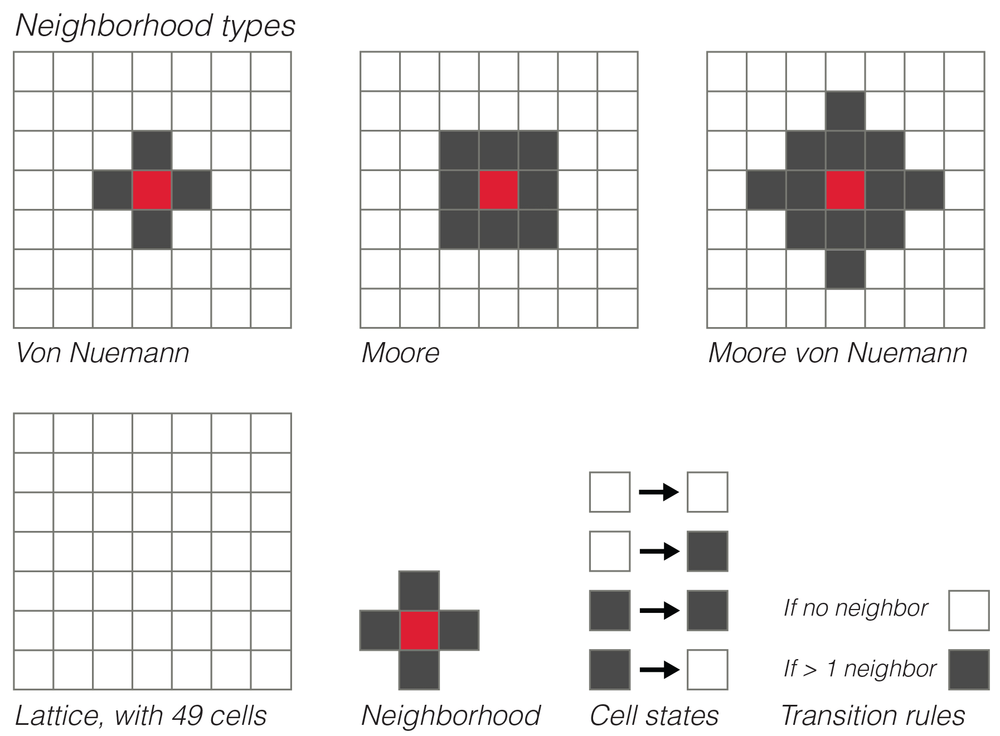
Figure 2: Visualization of the CA principles: lattice, cells, neighborhood, cell states, and transition rules.
In order for a CA to operate, it has initial and boundary conditions, which refer to the start- and endpoint
of the simulation in time and space. The initial conditions apply to the spatial configuration of the cells,
cell states and neighborhoods and the time at which the process begins. The boundary conditions refer to the
spatial extent of the lattice, size of the neighborhood and the time over which the CA is allowed to operate
(Batty, 2005). Therefore, CA is a discrete spatial-temporal system, since it has predefined spatial and temporal
boundaries and evolves in discrete time steps.
From these basic principles, Wolfram (1984a) realized that CA can replicate complexity and outlined some of the
characteristics that CA possess: “(a) the correspondence between physical and computation processes are clear;
(b) CA are often based on transition rules that are simpler than complex mathematical equations, but produce
results which are more comprehensive; (c) CA can be modeled using computers with no loss of precision; (d)
CA can mimic the action of any possible physical system; (e) CA are irreducible” (Itami, 1994, p. 30). These
characteristics imply that there is no pre-knowledge of an aggregate order and global patterns emerge from
local interaction. In fact, Wolfram showed that the initial conditions of a CA could be completely random,
and still order and structure could appear through the interaction between cells (Wolfram, 1984a; Wolfram,
1984b). This idea that micro interactions lead to global patterns, is at the basis of CA. This implies that
patterns are engraved in several scales, thus they hold characteristics of fractal geometry as self-similarity
and scale dependency (Batty & Longley, 1994).
“Simple cellular automata are characterized by phase transitions between behavior types, so that a single model
can result in stability, stochastic instability or chaos” (Clarke & Gaydos, 1998, p. 700). These are properties
of chaotic and dynamical system that evolve through self-organized criticality, which means they evolve to
a critical point between order and disorder, holding themselves at this critical level until certain conditions
emerge, which could abruptly redirect the system to a new threshold. A good example of this is the Glider Gun,
which is a cellular configuration in Conway’s Game of Life. In this a cellular configuration two objects, i.e.
clusters of pixels that are alive, exist in homogenous cellular space of pixels that are dead. Due to transition
rules, these two objects move through cellular space in stability. However, when these two objects collide,
i.e. the critical point between order and disorder, a phase transition occurs and a new cluster of alive pixels
emerges and moves away from the two objects. The opposite also occurs in this game, when the two objects collide
with static objects in cellular space. In that case new alive pixels emerge, but quickly dissipate. Overall,
this pattern repeats endlessly, therefore this spatial configuration is stable, whilst periodically being chaotic
and abruptly redirecting to new thresholds.
Animation 1: GIF-animation of the Glider Gun.
Some examples of CA will be discussed in section 2.3 Metronamica, Dinamica EGO,
CLUE and SLEUTH. Besides these four models, Sante et al. (2010) provided an overview of urban CA models applied
to real-world cases, along with an analysis of their capabilities and limitations.
Agent-based models
Agent-based models (ABM) use individual behavior and try to predict behavior in the future. ABM, like CA, also
have the same characteristic with regard to complexity, such as emergence and self-organization, however, in
this case it comes from agents. Both ABM and CA primarily attempt to model the complexity of the entire system,
wherein individual units exist. CA focusses on modelling urban dynamics which emerges from local interactions,
whilst ABM simulates more complex situations where agents control their own actions based on their perception
of the environment. Agents could mean several things based on the level of aggregation, from individuals to groups
or institutions, humans, plants, animals or artificial life. In essence, agents are objects that do not have
a fixed location, but act and interact with one another, as well as the environment wherein they exist. Therefore,
the main difference with CA, is that agents could be perceived as ‘mobile cells’ and agents can motivate their
own actions, which can imply movement, conversely, cells merely represent landscapes on which an activity takes
place. Furthermore, CA are limited to their cell size, whereas agents could scale down further to individual
coordinates (Heppenstall, Crooks, See, & Batty, 2012; Batty, 2005).
The key element of agents is that they are autonomous, they act independently, although could act in synchrony
depending on various conditions displayed by other agents or systems. Franklin and Graesser (1997) provided a
formal definition of the autonomous agent: “An autonomous agent is a system situated within and a part of an
environment that senses that environment and acts on it, over time, in pursuit of its own agenda and so as to
effect what it senses in the future” (p. 25). Agents operate in said environment to which they are uniquely adapted
and wherein they communicate. In that same environment, there may be more than one type of agent. In urban modelling,
that environment could be networks or cellular space. In addition, there are two types of agents: reactive agents
and cognitive agents. Reactive agents will behave by reacting to the environment or to other agents. A cognitive
agent may do the same, but they also act according to their own protocol. The way agents act in their environment
is the dominant factor in the behavior of an ABM. Table 1 shows a range of properties,
from passive agents to active agents that display some kind of intelligence.
Table 1: Properties of agents (Franklin & Graesser, 1997, p. 26).
Property
Meaning
reactive
responds in a timely fashion to changes in the environment
autonomous
exercises control over its own actions
goal-orientated, pro-active, purposeful
does not simply act in response to the environment
temporally continuous
is a continuously running process
communicative, socially aware
communicates with other agents, perhaps including people
learning, adaptive
changes its behavior based on its previous experience
mobile
able to transport itself from one machine to another
flexible
actions are not scripted
character
believable "personality" and emotional state
Figure 3 illustrates the basic structure of an ABM. The agent and the landscape interact,
therein there are four basic types of relations: agents influencing their own behavior, landscape influencing
their own state, agents affecting the landscapes, and the landscape affecting agents. Besides this generic structure,
there are two more significant interactions: other agents and landscapes, and influences from external variables.
As seen in Figure 3, this leads to four more relations, and a total of eight basic relations in an ABM. The other
four being: an agent influenced by other agents, an agent influenced by external variables, landscape influenced
by other landscape, and landscape influenced by external variables (Batty, 2005; Heppenstall, et al., 2012).
For urban modelling, ABM is useful for representing mobile entities in the environment, such as households, vehicles
or people (Torrens, 2001). Hence, in the 1990s these were first applied to transportation dynamics, when activity-based
analysis gained interest. Timmermans, Arentze and Joh (2002) provided an overview of the origins of transportation
activity-based modelling.
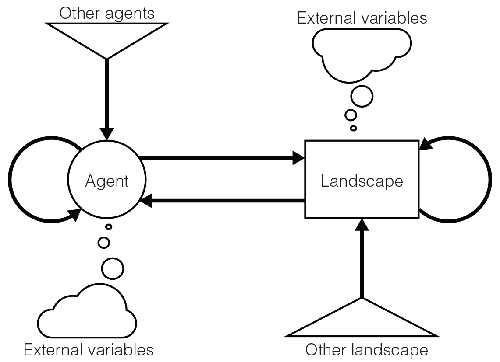
Figure 3: A general structure of ABM (Batty, 2005, p. 215).
A noteworthy example of ABM is, TRANSIMS (TRansporation Analysis SIMulation System), which is a system of travel
modelling procedures that conducts transportation analyses. The goal of TRANSIMS is to load traffic onto a network
and iterate towards the Nash equilibrium. The outputs of TRANSIMS are: detailed data on travel, congestion, and
emissions (US Department of Transportation, 2015). Furthermore, TASHA (Travel/Activity Scheduler for Household
Agents), which is an ABM microsimulation model developed for the Greater Toronto Area. It simulates the scheduling
of out-of-home activity and the travel a person (or household) might engage during a typical weekday (Miller
& Roorda, 2003). Similarly ALBATROSS, which is also an activity-scheduling model. This model predicts which activities
are conducted when, their duration, start time, trip type, travel party, location and transport mode (Arentze
& Timmermans, 2000).
Linking CA and ABM
Historically, CA have been developed to simulate urban dynamics by urban planners and ABM to simulate activity-based
dynamics by transportation planners. To some extent, these two fields separately developed their own approaches
and methodologies and could be considered disconnected. Cerdá noted that the infrastructure and specifically
the circulation of the infrastructure were fundamental to urbanization, thus suggesting that the distribution
of land use and transportation are strongly connected (Soria y Puig, 1999). Accordingly, these two fields are
not disconnected and their modelling approaches can complement each other, as cells are no decision-makers and
agents do have those capabilities (Timmermans, 2006).
In that light, there has been ongoing research on integrated land use – transportation models. The first model
to bridge the gap was SIMPOP, the first application of a multi-agent system in geography (Bura, Guérin-Pace,
Mathian, Pumain, & Sanders, 1996). In SIMPOP Bura et al. (1996) used the environment to model the evolution of
cities over long periods of time. The objective was to identify the conditions of emergence of a system of towns
and cities from an initial homogenous rural settlement pattern, over a duration of 2000 years. There were two
differences between regular ABM and SIMPOP: (a) in SIMPOP the agents were immobile as they represented geographic
locations, and (b) SIMPOP simulated the interaction between towns and cities, therefore the behavior was not
reducible to the behavior of individual persons (Pumain, 2012). Hence, it could be argued that SIMPOP was not
a true ABM, and more a special case of a CA model (Timmermans, 2003).
Ligtenberg, Bregt and Van Lammeren (2001) developed a combined CA and ABM technique that simulates urban change
as a result of individual actor behavior. In their model actors negotiated on the allocation of new urbanization.
Through time, each actor developed a series of preferences that depict its ideas on future urban change. In that
process, there were no pre-defined local or regional constraints, such as urban suitability, policy restrictions
or price of land. The preferences of the actors translated into urban change through a voting process on possible
allocations. Moreover, other applications of ABM to land use and land cover change can be found in Parker et
al. (2003) and Wu and Silva (2010), who both provided an overview of AB-CA (Agent-based cellular automata).
Essentially, linking CA to ABM is part of a larger discussion, wherein disadvantages of certain model methods can
be complemented by other model methods. For example, cells are not decision-makers, and agents to have that capability,
thus using agents to allocate cell state transitions, is a complementary methodology. Additionally, Torrens (2001)
noted that CA and ABM models lack the ability to simulate macro, top-down systems, since both evolve from the
bottom-up. Therefore, he argued the need for hybrid models, which in addition to using the CA or ABM methods,
would be complemented with traditional aggregate models. Since 2001, this is more common, as can be seen in Heppenstall
et al. (2012), wherein various chapters, with various examples, are dedicated to these hybrid models. It has
been argued that to address urban complexity, it would be better to use submodels as opposed to incorporating
more data and more factors (Chaudhuri & Clarke, 2013a), thus models complementing each other as opposed to the
‘one-model-to-simulate-it-all’.
2.3 Urban Models
The following section comprises a review of several urban models. This review aims at discussing what is currently
available and commonly used. It is not attempting to provide a thorough comparative analysis of various urban models.
The models that are reviewed are: UrbanSim, Metronamica,
Dinamica EGO, CLUE and SLEUTH,
the urban model that was used in this study. All of the aforementioned models explained in this section are designed
to model urban development. However, each model adopts a different approach, therefore, in this next section for
each model a brief overview is presented describing the model structure, data requirements and allocation mechanism.
UrbanSIM
UrbanSim is an open source urban model written in JAVA and designed by Waddell as a planning support system for land
use, transportation and environmental planning. The model was specifically designed to address policy analysis
requirements of metropolitan growth management. The first application of the model was to Eugene-Springfield, Oregon
in the United States. Later, there were several application to cities in the United States and some applications
to European cities (Waddell, 2000; Waddell, et al., 2014).
Data requirements
UrbanSim is a data driven modelling approach. It takes in large amounts of explicit spatial and non-spatial data
about the city and the region down to the parcel and building level of detail, a combination of vector data and
150x150 m raster data. The backbone of UrbanSim is a relational database, ordinarily in MySQL, that contains exogenous
data, primary data (regarding households, jobs, buildings, etc.), model coefficients, and model specifications.
Due to the amount of data going in, UrbanSim requires extensive calibration to derive coefficients for several
model components: land price model, developer model, residential location model, employment location model, and
mobility rate model.
Model structure
UrbanSim is not a single model. It is essentially a simulation system consisting of a software architecture to couple
models and implemented models that interact with this environment. UrbanSim consists of the models depicted in
Figure 4. The model coordinator schedules the various models to run and notifies them
when data of interest has changed. The model components represent the major actors, i.e. agents, in the urban system:
the households, businesses and real estate developers, all subject to the influence of governmental policies and
environment constraints. The model components attempt to simulate the key choices of these major actors and their
interactions with regard to when and where they would move. UrbanSim is based on the assumption that the behavioral
simulation of these major actors in the real estate market leads to an aggregate order on a greater scale, i.e.
urban development. Its primary goal is to assess the impact of governmental planning on urban development in certain
regions through scenarios (Waddell, et al., 2014). Furthermore, the model relies on two external model systems:
a macroeconomic model to predict future macroeconomic conditions and a travel demand model system to predict travel
conditions.
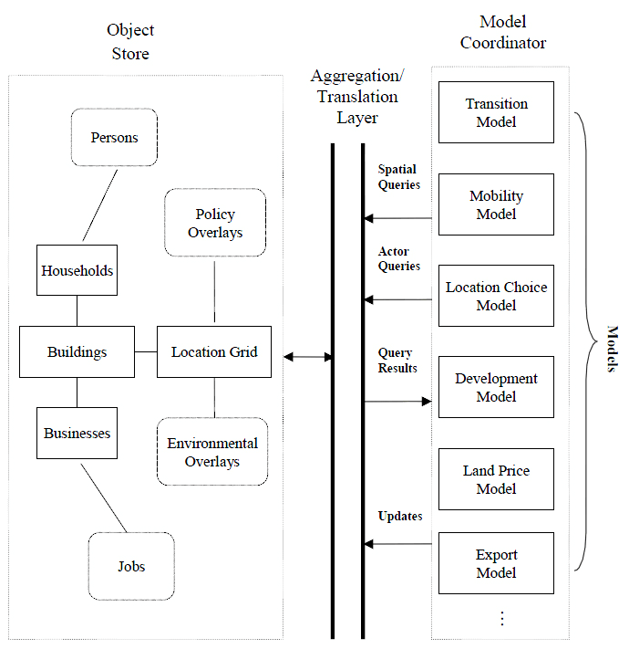
Figure 4: A visualization of the UrbanSim structure (Waddell, et al., 2014).
In addition the various model components UrbanSim encompasses, it also includes an option to input user-specified
events. User-specified events hold information that is outside of the range of predictions of simulation. This
option is useful to explore the effects of a planned major corporate relocation or a large development project
such as a shopping mall. The user defines these events, indicating the cells that are affected, the date at which
it should occur, and other relevant attributes of development, employment of policy event.
Moreover, UrbanSim is calibrated with data from three time periods. The simulation runs from the first time period
to the second, during which simulation results are compared to the observed data. Validation is conducted from
the second period to third, thus its calibration and validation are two distinct processes in UrbanSim, each with
their own set of data.
Allocation mechanism
Allocation starts with the transition model, which is a non-spatial model that simulates how many households of each
type must be either added or removed from the database. It is based on information from the external macroeconomic
model that projects population, household size and income distribution. The mobility model predicts the probability
that jobs or household will move from their current location or stay during a particular time period. Subsequently,
the location choice model predicts the probability a household or job that is new (from the transition model) or
has decided to move (from the mobility model), will choose a specific location defined by a raster cell. Afterwards,
the development model simulates real-estate developer’s choices about where to undertake new development or redevelopment.
Herein, the model iterates of the grid cells and creates a list of possible transitions, based on current use,
policy constraints, the proximity to the highway and accessibility to the population. The next model, land price
model, values the cells based on attributes of the cells and its environment, which influence location choices
of households, businesses and real-estate developers. Lastly, the export model, which can export the simulation
data to GIS formats (Waddell, et al., 2014; Waddell, 2000).
Metronamica
Metronamica is a CA-based land use change model developed by the Research Institute of Knowledge Systems (RIKS).
The model is built upon the work of White and Engelen (1993) and White et al. (1997), who developed an integrated
and constrained cellular automaton. Metronamica is a planning support system to simulate and assess the effects
of planning policies on urban and regional development. The model simulates the impact of various exogenous factors
(e.g. macro-economic changes, demographic changes) and policy measures (e.g. land use zoning, densification policies,
preservation policies) on a city, region, country or continent. To date Metronamica has been applied all over the
world, with its first application being to Cincinnati in the United States (RIKS, 2005).
Data requirements
The data requirements depend on the configuration of Metronamica and include three possibilities: Metronamica SL,
Metronamica ML and Metronamica LUT. The most data is required for Metronamica LUT and the least for Metronamica
SL. For each configuration the type of data required varies: spatial data for the land use model at a local level;
non-spatial, statistical data for the regional model; and additional information for the transportation model at
a regional level (RIKS, 2005). In the next section, only the basic data requirements are elaborated.
The spatial data consists of four input layers: land use, suitability, zoning and accessibility. Firstly, land use
maps, which are required for the beginning and the end of the calibration period, and cell sizes is ordinarily
between 50 m and 1000 m. The land use classes are divided into three categories: features, functions and vacant
classes. Features are land use classes that are not supposed to change in the simulation, such as water bodies.
Functions are land use classes that actively participate in the simulation and affect the transition potential
of other classes, such as residential or commercial land uses. Vacant classes are classes that only change as a
result of other land use dynamics, such as abandoned lands that result of the disappearance of other land use classes.
Secondly, the suitability map, which is a map containing the urbanization-suitability score for certain land use
function. It is a composite measure based on factor maps that are found relevant to the model user and determines
the physical, environmental and ecological appropriateness of a cell. Thirdly, zoning, like suitability is also
implemented for each land use function and based on actual master plans or other policy plans that are used for
imposing constraints or stimulating particular trends. It is a composite score that includes protected areas or
buffer zones that are allowed to change to a certain land use function. It is possible to include a temporal component
up to three time periods. Hereby an area may be constrained for a certain land use function for a defined time
period, after that period the function may be allowed. Lastly, accessibility, which takes the infrastructure into
account: road network, rail network and other network types. This map displays the importance of transportation
for certain land use activities and functions, and allows for the relative importance and quality of infrastructural
elements for specific land use functions. The accessibility value for each cell depends on the importance of an
infrastructural element in the neighborhood and its distance to said element based on distance-decay (RIKS, 2005).
Modelling structure
The core component of Metronamica is a dynamic land use-transportation model, thus a land use model and transportation
model are coupled to simulate urban change. In order to represent the changes that take place within an area, the
model is layered at three geographical levels: global, regional and local (Figure 5).
The global level consists of the entire modeled area, which computes global trend lines and takes in economic,
demographic and environmental growth scenarios. At the regional level population, employment and productivity are
calculated based on the exogenous variables from the global level. A dynamic gravity based model accounts for regional
differences, resulting in certain regions being more attractive than others. This model allocates national growth
as well as inter-regional migration of activities and residents, i.e. transportation. During this process regions
compete with each other for people and economic activities. Subsequently, the output of the regional level is converted
to a cell-state at the local level by means of a CA-based land use model. Hence, the local level allocates people,
jobs and land use based on regional demands. The output of the CA on the local level in turn influences the regional
attractiveness regarding population and economic growth (RIKS, 2005).
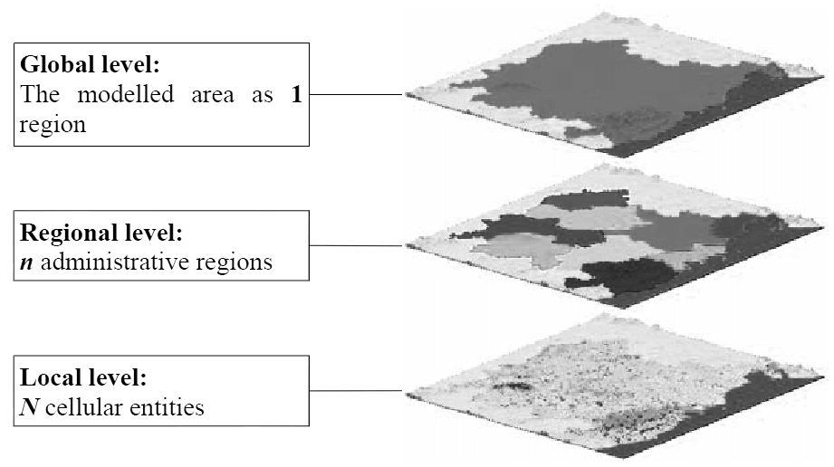
Figure 5: Metronamica model structure (RIKS, 2005, p. 8).
Allocation mechanism
Allocation takes place on a local level based on a constrained CA. A set of rules determines whether or not a cell
changes, depending on its neighborhood. The default neighborhood configuration is a 196-cell concentric neighborhood
with an 8-cell radius, unlike traditional CA that often use a 4-cell von Neumann or 8-cell Moore neighborhood configuration.
With an 8-cell radius neighbor the cell is not only affected by its immediate neighbors, but also by features in
more remote locations. The strength of the relationship between more distant cells diminishes, thus implying distance
decay. Therefore, the weight of each cell in the neighborhood differs and may have an either positive or negative
influence on the core cell. Depending on the neighborhood, a cell changes to a land use function for which it has
the highest transition potential, until regional demands are satisfied. Additionally, Metronamica accounts for
local constraints via the described suitability, zoning and accessibility. Figure 6 shows
this in the Metronamica’s time loop (RIKS, 2005).
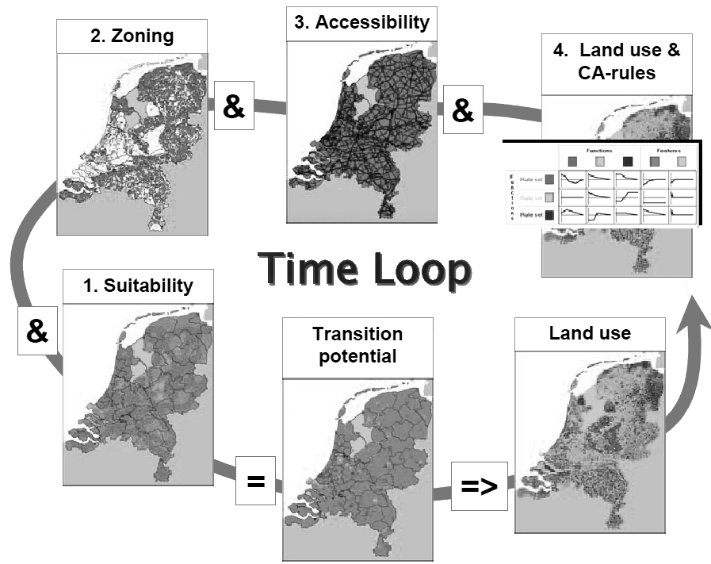
Figure 6: The Metronamica allocation time loop (RIKS, 2005, p. 11).
Dinamica EGO
Dinamica EGO (Environment for Geoprocessing Objects), from here on Dinamica, is an open-source, hybrid platform for
environmental modelling, which consists of simple static spatial models up to dynamic, complex spatial models.
It is based on the first application of the CA Dinamica (Soares-Filho, Cerqueira, & Pennachin, 2002). Since then,
the model has been reengineered to become a modelling environment that contains a variety of submodels, calibration
and validation procedures. Dinamica has been applied in a variety of studies, to a variety of disciplines all around
the world (DINAMICA, 2016).
Data requirements
For producing land use simulations, Dinamica uses two landscape maps as its main input. Also, the model uses, what
is referred to as static and dynamic spatial input layers that contain any spatial information the model-user desires.
For example, static layers would be factors that only change slowly or are based on exogenous variables, such as:
soil type or slope. The dynamic layers are derived from endogenous variables, for example, distance to deforestation
or the urban area. For dynamic layers first the frontier cells are identified. After transitions have taken place,
temporary maps are recalculated to reflect the new Euclidean distances to the dynamic features (Soares-Filho, et
al., 2002). Therefore, dynamic maps are updated throughout the simulation and could be considered as a dynamic
feedback mechanism.
Model structure
Dinamica is a framework that supports the development of geomodelling applications and is written in C++. It runs
on DinamicaVM, a virtual machine written in JAVA that holds the EGO programming language. In essence, Dinamica
is a model-builder and comprises of a series of algorithms called functors, which represent typical cartographic
operations. Each functor has a number of inputs and produces a number of outputs. The model-user connects the functors
in the EGO Graphical User Interface and determines how the data flows in the model. Additionally, through the use
of other functors the model-user can specify the model and how it simulates, by using conditional execution functions
such as: if, then, and while. Essentially, with EGO script language a model-user could create any submodel through
the use of Dinamica’s functors (Soared-Filho, et al., 2002; Ferreira, Soares-Filho, & Pereira, 2015).
Allocation mechanism
Despite Dinamica’s flexibility, there is a main allocation mechanism regarding land use modelling (Figure 7).
For producing land use change, the model computes: a transition matrix, the static and dynamic variables, the spatial
transitional probabilities, and the transitional functions.
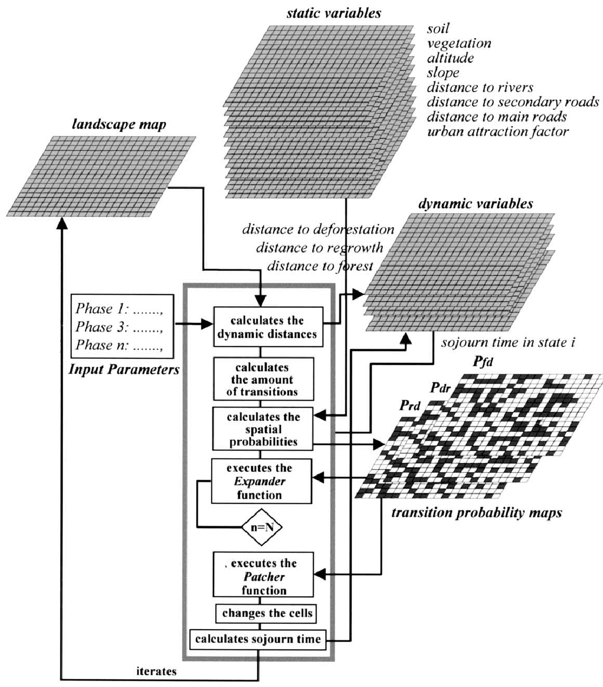
Figure 7: A flowchart of Dinamica (Soares-Filho, et al., 2002, p. 220).
First a transition matrix is calculated, which is obtained by a using Markov chain matrix to determine the quantity
of change between categories in the landscape maps of two time periods. Therefrom, dynamic distances are calculated
and the dynamic variables are updated. Next, Dinamica computes the spatial transition probabilities for each cell
as a function of different driving factors that come from the static and dynamic variables, based on weight of
evidence and genetic algorithms. Afterwards, two CA-based transitional functions are initiated that use a stochastic
selection algorithm, the Expander Functor and the Patcher Functor. The Expander Functor is dedicated to the expansion
and contraction of existing patches of a certain class. The second function, the Patcher Functor, is an algorithm
that generates new patches through a seeding mechanism, which can be defined as spontaneous growth. During the
two CA methods the user can specify a number of items that can influence the model behavior, such as: mean patch
sizes, isometry or neighborhood search window sizes. The last step in the allocation mechanism is to propagate
changes in the selected cells. During calibration Kappa statistics, fraction correct, fuzzy Kappa and fuzzy fraction
correct are used to fit the model, as well as to validate the simulation results (DINAMICA, 2016; Soares-Filho,
et al., 2002).
Dinamica also has the option to divide the study area into regions with specific parameter settings or specifications.
A difference between Dinamica and other models, is that it is able to run subregion-based models with interactions
between the subregions, thus enabling certain variables to have an effect on a specific subregion or all other
subregions, as well as running them simultaneously.
CLUE
The CLUE modelling framework (Conversion of Land Use and its Effects) is based on a CA model, of which the first
version was developed by Veldkamp and Fresco (1996) and applied to Costa Rica. The various versions of CLEU (CLUE,
CLUE-s, Dyna-CLUE and CLUE-Scanner) are amongst the most frequently applied land use models. The original version
simulated the effects of demographics and biophysical conditions on land use and land cover changes, including
a local and regional feedback mechanism from those driving forces. Subsequently, a multi-scale approach allows
the model to simulate the urban dynamics related to the top-down and bottom-up effects and constraints.
Data requirements
The data requirement depends on the version of CLUE that is used and the data needed for a successful application.
Generally, it could be said that the model requires non-spatial and spatial data inputs. The non-spatial data could
comprise population and associated demographic, or various socio-economic factors. In CLUE it is possible to use
simple extrapolation methods or complex economic models to project future dynamics of the non-spatial data. The
spatial data requires two raster files for preferably two time periods with a number of land use classes. Typically,
further physical aspects are including related to spatial policies or constraints, land use type specific conversion
settings, land use demands and local characteristics (Verburg & Overmars, 2009).
Model structure
Even though, each CLUE version is slightly different, CLUE consists of two main modules: a non-spatial demand module
and a spatially explicit allocation module, shown in Figure 8. The demand module calculates
the demand for a land use type on a national scale, based on changes in various, user-defined, socio-economic and
demographic factors. The calculations are based on historic trends derived from the input data, which are projected
to account for future demand. From a regional or national level, the demand module influences the spatial allocation
and distribution of various land use types and associated productions (Verburg, Veldkamp, & Fresco, 1999).
Interesting in the model structure is the multi-resolution approach. Conversely to other CA approaches, where land
use is determined by the one land use type, presumably the most dominant, in CLUE it is determined by the relative
cover of each land use type in each cell. For example, CLUE uses two raster, both contain the same land use types,
but one is much coarser. A coarse cell could contain 25% urban area, 25% agricultural lands and 50% rangelands.
The constituent cells of a finer scale reflect those same proportions when accumulated (Verburg, et al., 1999).
The allocation itself is based upon a variety of historic spatial analyses of the interaction between land use, socio-economic
conditions and biophysical constraints. Multiple regression models are calculated to quantify this relationship
between the various conditions and the allocation of land use. The aforementioned scales determine the structure
of the land use patterns. The coarse scale is used for general trends and relationships between land use and its
driving factors, whilst the fine scale is to identify variability within regions. Therefore, the spatial analyses
are conducted on two scales, allowing for variation within the influences of determining factors (Verburg, et al.,
1999; Veldkamp & Fresco, 1996).
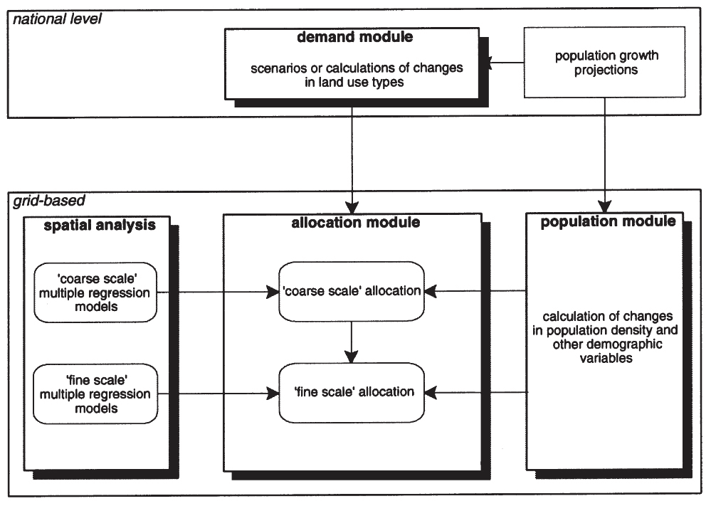
Figure 8: Structure of the CLUE modelling framework (Verburg, et al., 1999, p. 215).
Allocation mechanism
Figure 9 shows the basic allocation procedure, although each CLUE version has a slightly
different process. Spatial analysis groups the land use types into two categories: those that are demand driven
at a regional scale, and those for which no demand at a regional scale could be determined. The allocation module
allocates regional demands to individual cells, until the demand has been satisfied by iterative comparison between
individual allocated land use types to neighborhood demand. In this process each cell is affected by location suitability
and neighborhood suitability, such as biophysical limitations. Moreover, there is a component related to land use
specific conditions, such as conversion elasticity (i.e. the cost of converting to a land use type, either monetary
or institutional), and comparative advantage, when land use types are below their regional demand (Verburg & Overmars,
2009).
For each cell, the land use type with the highest probability is checked against a conversion matrix. This matrix,
constraints certain type of transitions under certain circumstances, e.g. the conversion from agriculture to forest
would not be possible in one time step. Afterwards, the allocated land use type is checked against regional and
neighborhood demands, if deemed acceptable, the cell is updated (Verburg & Overmars, 2009).
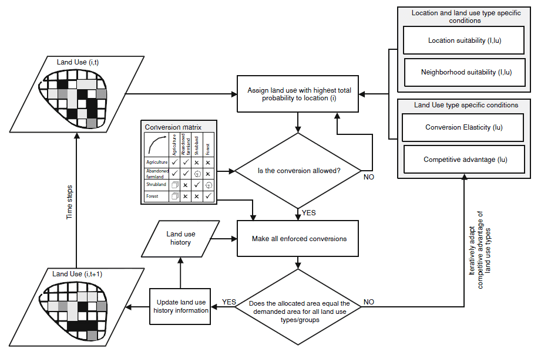
Figure 9: A flowchart of the allocation procedure in Dyna-CLUE (Verburg & Overmars, 2009, p. 1170).
SLEUTH
SLEUTH is a scale-independent, open source, 2D CA based model that simulates urban growth and land use changes that
are caused by urbanization. Therefore, SLEUTH has become a popular tool to evaluate policies and scenario planning
(Chaudhuri & Clarke, 2013b). The application of SLEUTH to the San Francisco Bay Area by Clarke et al. (1997) was
the first major application of the SLEUTH model. This paper documents the details of the model, describing the
necessary data layers, the five growth coefficients, what they control and the four types of urban growth. In addition
to these fundamental principles of SLEUTH, the concept of self-modification was introduced. It is a descriptive
model, meaning it does not explain the land cover and land use changes of the urban structure. Same shape and changes
could be derived of sets with different initial conditions and boundaries, and different parameters. It also does
not explicitly deal with population, policies or economic impacts of land use change, although it could be integrated
via the excluded layer (Mahiny & Clarke, 2012; Onsted & Chowdhury, 2014; Jantz, Drzyzga, & Maret, 2014) or via
the self-modification module (Liu, et al., 2012).
Data requirements
SLEUTH stands for Slope, Land use, Excluded, Urban, Transportation, Hillshade, which is the input data for the model.
The model uses a raster grid based on a GIF-image in gray scale with a consistent resolution and spatial extent.
The Slope layer uses elevation data and requires only one time period with the percent slope, commonly derived
from a digital elevation map. The Land use layer is an optional layer that uses any number of land use categories,
as long as they are consistent. It requires at least two time periods and is used to calculate a class-to-class
transition probability matrix among the different land use categories. The excluded layer defines all areas that
are resistant to urbanization, this could be a location where it’s impossible to develop or where development is
unlikely. For this layer it is possible to include the likeliness a location is available for development, from
0 (available) to 100 (not available). The Urban layer consists of a raster in which a cell is either urban or non-urban.
In this layer the earliest year is known as the seed, which is used for the initialization of the model. Subsequent
years are the control years, which are used to calculate goodness of fit statistics. The Transportation layer needs
at least two time periods and has the option to include weighting to represent the relative importance of roads,
and to determine the probability of urban development according to the accessibility of a location. The last layer,
Hillshade is needed to give spatial context to the urban extent data and is only used for visualization purposes
(Clarke, et al., 1997; Candau, 2002).
Model structure
SLEUTH is constituted of two sub-models (Figure 10): the Urban Growth Model (UGM) and Land
Cover Deltatron Model (LCDM). The UGM simulates the effects of the topographic slope, transportation network and
resistance to urbanization on the urbanization patterns through time. It uses a Boolean logic, it is either urbanized
or not urbanized. The LCD uses typical CA-based rules, such as discrete state transitions, class transition probabilities
(Markov matrix) and a Moore neighborhood to define land use changes through time (Clarke, 1997; Candau, 2002).
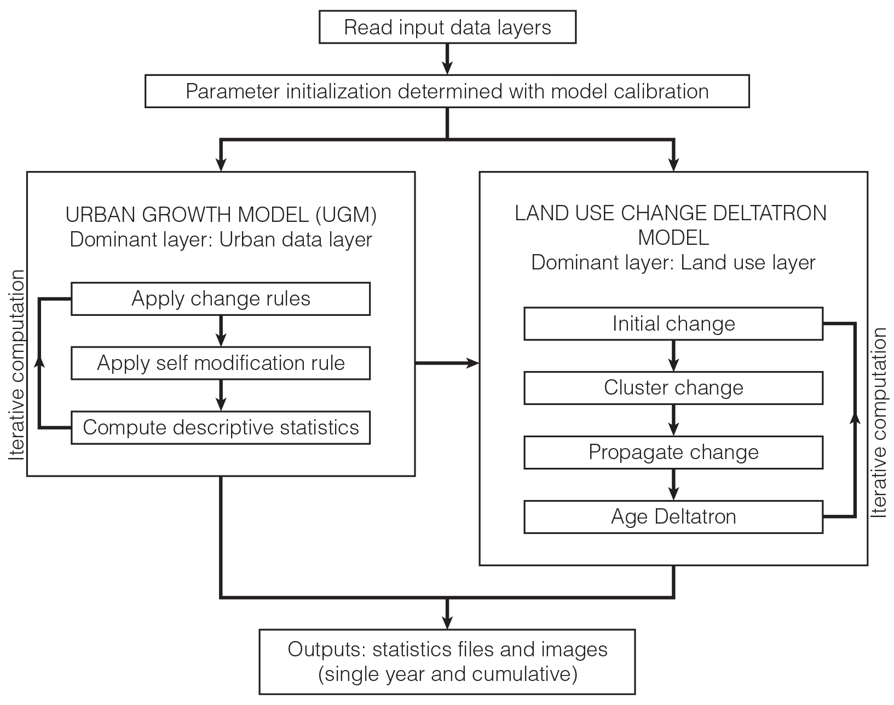
Figure 10: The structure of the SLEUTH and SLEUTH-3r models.
The essence of the SLEUTH is the growth cycle, which is its basic unit and represent the time step of one year. It
uses the initial condition of the cells, which is determined by the input data, and the setting of five controlling
coefficients (Table 2) to a unique value. Each of the growth rules (from the UGM and LCD)
is applied, which is then evaluated by the self-modification module. The simulation is repeated a user-specified
number of times during the Monte Carlo (MC) method. The MC method is used to evaluate and average the output results
of all the basic simulations that were completed. During each MC iteration descriptive statistics are calculated,
which after each growth cycle are averaged across all MC iterations (Clarke, et al., 1997; Candau, 2002). From
this basic simulation the UGM defines urban growth dynamics through four types of growth: spontaneous growth, spreading
center growth, edge growth and road-influenced growth. Each type of growth is applied sequentially during each
cycle and is controlled by five parameters: dispersion, spread, breed, slope resistance and road gravity. The coefficients
are integers that can range from 0 to 100 and represent the relative contribution of each corresponding variable.
The model-user controls these via the scenario-file, wherein the demol-user can specify parameter values and statistical
and graphical output SLEUTH ought to produce (Clarke, et al., 1997; Candau, 2002).The essence of the SLEUTH is
the growth cycle, which is its basic unit and represent the time step of one year. It uses the initial condition
of the cells, which is determined by the input data, and the setting of five controlling coefficients (Table 2)
to a unique value. Each of the growth rules (from the UGM and LCD) is applied, which is then evaluated by the self-modification
module. The simulation is repeated a user-specified number of times during the Monte Carlo (MC) method. The MC
method is used to evaluate and average the output results of all the basic simulations that were completed. During
each MC iteration descriptive statistics are calculated, which after each growth cycle are averaged across all
MC iterations (Clarke, et al., 1997; Candau, 2002). From this basic simulation the UGM defines urban growth dynamics
through four types of growth: spontaneous growth, spreading center growth, edge growth and road-influenced growth.
Each type of growth is applied sequentially during each cycle and is controlled by five parameters: dispersion,
spread, breed, slope resistance and road gravity. The coefficients are integers that can range from 0 to 100 and
represent the relative contribution of each corresponding variable. The model-user controls these via the scenario-file,
wherein the demol-user can specify parameter values and statistical and graphical output SLEUTH ought to produce
(Clarke, et al., 1997; Candau, 2002).
Table 2: The types of growth and their controlling coefficients.
Type of growth
Description
Controlling coefficients
Spontaneous
Simulates the occurrence of a random cell being urbanized
Diffusion, slope
New spreading centers
Determines whether a spontaneously urbanized cell becomes a new spreading center
Breed, slope
Edge
Simulates the growth that comes from existing or new spreading centers
Spread, slope
Road-influenced
Simulates new urbanized cells along the existing transportation infrastructure
Road gravity, diffusion, breed, slope
Allocation mechanism
As is shown in Figure 10, the UGM is the first of the two models that is applied in SLEUTH.
Figure 11 shows the four growth rules as applied in the UGM, for each of the four growth
types that are applied sequentially.
Figure 11: Allocation mechanism for the UGM.
The first of these is spontaneous growth, which is controlled by the slope and diffusion growth coefficient. Based
on the size of the input data, i.e. number of rows and columns, a certain amount of pixels is randomly chosen for
urbanization. These pixels are matched against the slope resistance, as defined by the slope layer and the urbanization
resistance, as defined by the excluded layer, in both cases by generating a random integer. Afterwards, the spontaneous
growth has a chance of becoming a new spreading center, which is defined by the slope and breed growth coefficient.
Based on a randomly generated integer, a spontaneous growth cell can become a new spreading center, given two randomly
selected neighboring cells are available for urbanization. If the cell passes both tests, the two neighboring cells
are matched against the slope resistance and the urbanization resistance.
The third phase is edge growth and is controlled by the slope and spread growth coefficient. This growth stems from
existing urban cells, from the previous two phases, as well existing urban cells. If a non-urban cell has at least
three neighboring urban cells, it has a chance of becoming an urban cell. Again, this chance is based on the slope
resistance and the urbanization resistance. The last phase is road-influenced growth, which is controlled by the
slope, road gravity, diffusion, breed growth coefficients. It is determined by the transportation layer and existing
urban cells as well as generated urban cells from the previous phases. With a probability defined by the breed
coefficient, newly urbanized cells are selected, therefrom the existence of the road is sought in the neighborhood,
as defined by the road gravity coefficient. A temporary cell is placed at the nearest cell to the road, from there
the cell randomly moves along the road a certain amount of steps, as defined by the diffusion coefficient. Once
it arrives at its final location, two neighboring cells are randomly selected. If they are available for urbanization,
they are matched against the slope resistance and the urbanization resistance to determine if they are urbanized
(Clarke, et al., 1997; Candau, 2002).
The LCDM is the land use cellular automaton incorporated in SLEUTH and consists of deltatrons that act as independent
agents of change based on historical data. Before the LCD module cycle starts two calculations are made. For two
time periods the land use input is used to calculate a class transition matrix. Then for each class the corresponding
average slope is calculated, so that steep sloped lands exclude certain land use categories. Afterwards, the LCDM
starts, which consists of two phases: create change and propagate change. Phase one is driven by the number of
newly urbanized cells from the UGM. A cell at a random location is chosen for which the transition suitability
is calculated. Two random land use categories are selected, the one with the average slope most similar to that
of the cell, is chosen. This land use category is then matched against the class transition matrix. Afterwards,
a random number is generated that determines whether the cell’s land class is changed and the changed cell attempts
to randomly spread to its neighbors and form a cluster. Thereafter, deltatrons are born in deltaspace on the locations
that changed. During phase two, standard CA rules are used and deltatrons try to initiate change onto neighboring
cells. If a cell has two or three neighboring deltatrons with the same land use category, that cell is selected
for transition. This cell is matched against a random number, if successful the change is enforced on the map.
The LCD iterates through this process until all the deltatrons have decayed (Clarke & Candau, 2000; Candau, 2002).
A variety of studies have used the Deltatron module of SLEUTH for predicting and analyzing land use changes (Dietzel
& Clarke, 2004a; Al-shalabi, et al 2013; Mahiny & Clarke, 2012; KantaKumar, Sawant, & Kuma, 2011; Dietzel & Clarke,
2006).
After the UGM and LCDM modules have applied their growth rules, a last optional phase of self-modification calculates
the sums up the combined growth rate of the four growth types. There are three categories: rapid growth, normal
growth and no growth (Figure 12). The growth rate falls into one of these categories and
subsequently the controlling coefficients are multiplied by a constant to simulate an accelerated or depressed
growth, i.e. during rapid growth, diffusion, breed and spread are multiplied by a constant greater than one to
simulate the tendency of an expanding system to grow even more rapidly.
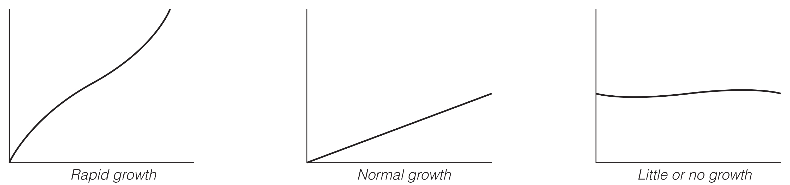
Figure 12: The three possible phases of the self-modification module.
The self-modification module consists of the limits CRITICAL_HIGH and CRITICAL_LOW that determine the boundaries
at which the urban growth would be multiplied by respectively the BOOM or BUST value. The CRITICAL_SLOPE determines
at what slope degree cells would no longer be available for urbanization. The last two values are ROAD_GRAV_SENSITIVITY
and SLOPE_SENSITIVITY. During the boom-cycle, the road-gravity factor becomes larger, prompting a wider band of
urbanization around the roads, and a decrease in the slope resistance factor to permit expansion onto steeper slopes.
During the bust-cycle the opposite occurs. These seven self-modification values can all be specified by the user
in the scenario-file (Clarke, et al., 1997; Candau, 2002). Liu et al. (2012) have adjusted these parameters to
incorporate macro trends, but they have concluded that their attempt had failed to improve SLEUTH and further research
is needed. Others, have successfully predicted, whilst adjust parameter values in the self-modification module
(Jantz, et al., 2010; Jantz, et al., 2014).
2.3 Section Conclusions
Section 2.1 provided a brief history of Complexity Theory by introducing some key
theories and paradigms associated with complexity. Complexity has a long history and has been applied across various
disciplines. Key to complexity is that it does not have a precise definition, instead, it is described by characteristics,
such as self-organizing, dynamical, chaotic and critical nature, non-linearity, emergence and self-similarity. Wolfram
(1984b) showed that these characteristics exist in CA, hence CA is often linked to Complexity Theory.
Section 2.2 provided the fundamental principles of urban modelling as well as the
terminology associated with urban modelling. There are a variety of modelling methods that are not described in this
research, from more traditional models as applied from the 1950s, to other current model methods such as microsimulation.
Instead, the basic structure and approach of CA and ABM are elaborated, since both have the properties of complexity.
Whilst Complexity Theory may be vague and difficult to grasp at times, describing these two modelling methods, could
clarify the meaning of Complexity Theory and its characteristics, such as emergence and self-organization. Moreover,
section 2.2 discussed model coupling, which has become more popular and more frequently applied over the last 15
years to improve urban modelling, whereby disadvantages of a model method can be complemented by other model methods.
Section 2.3 described five urban models: UrbanSim, Metronamica, Dinamica EGO, CLUE and
SLEUTH. It illustrated that there are similarities and differences between the models. For example, all models are
free, except for Metronamica, and only UrbanSim, Dinamica EGO and SLEUTH are also open-source. Out of the five models,
all comprise CA in some sort of way, however UrbanSim also uses agents through microsimulation. All the models are
coupled with other submodels, either aggregate models, as is the case with UrbanSim, Metronamica and CLUE or other
CA methods, as with SLEUTH and Dinamica EGO. UrbanSim and Metronamica are the only two models that incorporate transportation,
via submodels. All models, except SLEUTH, adopted a multi-scale approach. Another key difference is related to the
complexity of using the model. For example, UrbanSim is a data-driven model and requires extensive amounts of data,
thus acquiring and calibrating the data is time-consuming. Conversely, SLEUTH requires much less input data and is
relatively simple to execute and calibrate. Besides the differences and similarities, there are also interesting
or novel features used in the five models, for example: UrbanSim holds the option for user-specific events; Metronamica
employs an extended neighborhood with distance decay functionality; Dinamica EGO contains a dynamic feedback mechanism
through dynamic suitability layers; CLUE uses a novel multi-scale allocation mechanism; and SLEUTH consists of the
self-modification module.
All these models have been successfully applied worldwide and would be able to simulate land cover change, as required
in this research. Nonetheless, the reasons for choosing SLEUTH are that: (a) any researcher can use the model at
no cost if they have the required input data; (b) SLEUTH is relatively easy to use for simulation and prediction,
also due to the presence of many background documents and an internet discussion board; (c) the model is scale independent,
meaning that any spatial resolution could be used as long as it is consistent; (d) the model has been developed by
various research teams and is not for one specific location, therefore, it can be applied to many regions; and (e)
SLEUTH is an open-source model, thus it has availability to the source code. Additionally, for this study SLEUTH-3r
was used as this version has improved functionality and is computationally more efficient than SLEUTH.
It is important to acknowledge some drawbacks of SLEUTH. As stated in Chapter 1, the
goal of the study is to simulate and predict land cover change for Groningen, which adopted a clear compact city
policy. However, the compact city policy is about more than urban land cover change and minimizing the spatial footprint
of the city, it also involves multi-functional land use, high frequency transportation and urban densification, etc.
(Zonneveld, 1991). SLEUTH is developed on the assumption that five types of growth occur in urban areas and these
are all related to urban expansion as opposed to urban densification (Clarke, et al., 1997). Koomen and Borsboom-van
Beurden (2011) pointed out, in the Netherlands there is a need for policy-makers to know about densification in cities
as well. Other CA have been applied using a simple two or three class density classification (Veerbeek, Pathirana,
Ashley, & Zevenbergen, 2015; Zhang, Ban, Liu, & Hu, 2011). With regard to the compact city policy it would be useful
to accommodate for multi-functional land use, which has been applied in the field of cellular automata by representing
single cells as multiple classes (Crols, et al., 2015; White, Uljee, & Engelen, 2012), or as is the case with CLUE,
where coarse cell could contain several classes based on the constituent cells at a finer scale (Verburg, et al.,
1999). Furthermore, another decisive component of the compact city policy is transportation, which some urban models
include, as is the case in Metronamica, UrbanSim or other integrated land use – transportation models (Timmermans,
2006).
SLEUTH does not have the mechanisms to explicitly deal with all the aforementioned components of the compact city policy,
however could be included by model coupling or rewriting the source-code. Either of those does not fit into the scope
of this research, since: (a) both are time-consuming, which does not fit into the timeframe of this research; (b)
this is an exploratory research that tries to fit SLEUTH to Groningen, not improve SLEUTH’s functionality; and (c)
this research focusses on the core of the compact city policy, which is minimizing the urban footprint. Therefore,
this research focusses on what SLEUTH does best, land cover change (Chaudhuri & Clarke, 2013b), whilst acknowledging
other relevant components of the compact city policy exist, but are not researched in this study.
3. Research Methods
This chapter elaborates on the research methods used for the practical approach of this research, the case study using
SLEUTH. First, an historical overview and the physical location of the study area is presented. Afterwards, specific
components related to SLEUTH are addressed: types of scale, the excluded layer, calibration, validation and prediction.
Therein, a key component is the excluded layer, as it can substantially influence the modelling results. In this study
the excluded layer is an urbanization-suitability layer based on an MCE, whereby the MCE factors are combined through
fuzzy set theory and given a weighting score through Analytical Hierarchy Process. Moreover, in section 3.4,
section 3.5 and section 3.6, respectively the calibration,
validation and prediction procedures are discussed.
3.1 Study Area
The study area is spanned over a region of 1,181.33 km² and comprises the administrative boundaries of the municipality
of Groningen, the capitol city of the province of Groningen and is located in the northern part of the Netherlands
(see Figure 13). According to the CBS Statistics Netherlands (2016), the city of Groningen
has a population of 200,336 (per 1-1-2016) and is the second, relatively, fastest growing city, after Utrecht. Groningen
has a relatively large sphere of influence as it is one of the few large cities in the region, which makes it an
meaningful city to the northern part of the Netherlands.
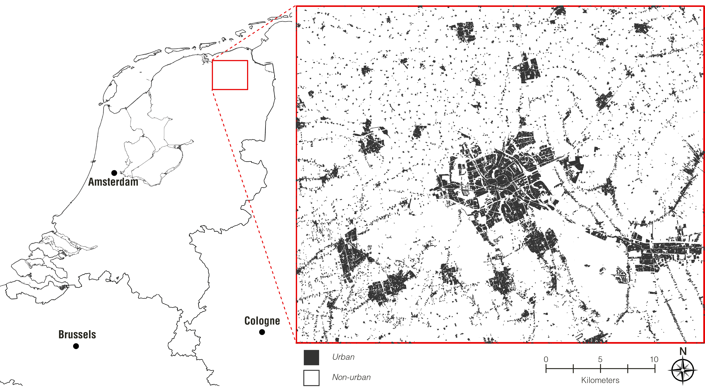
Figure 13: A visualization of the study area, the city of Groningen and neighboring cities and villages.
Historical overview
Groningen has a long history reaching back until at least 1040, although it is believed it has been a city long before.
It was founded on the Hondsrug, a ridge of sand reaching far into lower-lying parts of marine clay and fertile moorlands,
which made the city to a certain extent inaccessible. It was the most northern city in the diocese of Utrecht, far
from other cities and amidst the Friezen from the lordless countryside, the ‘Ommelanden’. A small river leading alongside
the Hondsrug made it possible for Groningen and the surround countryside the ‘Ommelanden’ to transport and trade
via water. This unique location made Groningen an important trade node for the population, where they would trade
products of the sand ridges (wood and rye) with products of the coastal regions (butter, hides and fish). The diocese
of Utrecht needed Groningen as this was their only influence in the area and the Friezen needed Groningen as this
was their only safe marketplace (Schroor, 2009; RHC Groninger Archieven, 2016).
In the 13th century Groningen joined the trade union ‘Hanseatic League’ and its merchants started trading with cities
alongside coasts of the North and Baltic Sea. With the trade connections across the seas, Groningen was by far the
strongest party in the region. Groningen took full advantage of this position and further developed their city and
strived towards becoming an independent city. Groningen expanded its influence by purchasing lands and concluding
agreements between the city and the Ommelanden. The connections via the rivers were improved and canals were dug
so the rivers would reach the city ramparts. These were the glory years of Groningen, as the population grew and
the economy thrived. It became an independent city with a large military force, educated civilians and large ambitions.
To express their ambition and power, Groningen built churches in gothic style with tall towers to show the Ommelanden
and nearby cities where the true power in the north resided. This did not go unnoticed and soon the Dukes of Burgundy
to the south and also the city of Hamburg to the east were looking to overpower Groningen and exploit their strong
position. In 1536 after 40 years of conflict, Groningen was subdued by Karel of Burgundy. Now Groningen was no longer
independent and for the first time, part of a central government run from Brussels (RHC Groninger Archieven, 2016).
In the 16th century the Dutch provinces, including the Ommelanden, revolted against Philip II of Spain during the Eighty
Years' War. However, the city of Groningen did not, as they were satisfied with their current status. In fact, in
1580 under the lead of its Stadtholder Rennenberg, Groningen joined Philips II of Spain, which would become known
as the treason of Rennenberg. Due to the strategic position of the city of Groningen the Spanish could still influence
the northern part of the Netherlands, which weakened the position of the Dutch Republic and led to internal conflicts
between the Ommelanden and the city of Groningen. Friend and foe plundered the area, leaving destruction in its path.
Friesland and the Ommelanden insisted the siege of the city of Groningen, which eventually the Republic did. This
led to the ‘Reduction of Groningen’, which meant the city of Groningen and the Ommelanden were merged into one province
named ‘Stad en Lande’. The province then joined the Republic of Seven United Netherlands as the seventh province,
against the will of the city of Groningen (RHC Groninger Archieven, 2016).
Eventually, the war settled down during the interbellum of the war. The walls of the city of Groningen were reinforced,
fearing an impending Spanish invasion. In 1648 the war was officially ended. However, in 1672 the four largest powers
focused on the rebellious nation. The French, English, archbishops of Münster and Köln invaded the Republic of Seven
United Netherlands. They did not account for the strong position of Groningen. Therefore, on the 26th of July 1672
the archbishops focused on the city and sieged it up to the 28th of August, when their armies suddenly retreated,
leaving Groningen undefeated. After the Eighty Years’ War, the city of Groningen wanted to restore their old status
as an independent city. The Ommelanden were against this and wanted to pursue their liberal ideas of equality. Yet
again, this led to much conflict within the Province that wouldn’t settle down until Napoleon enforced his ideas
of liberté, egalité and fraternité. During this period, the liberals had a chance to practice their modern ideas
and the province of Groningen was truly formed (RHC Groninger Archieven, 2016).
Up to 1795 the amount of inhabitants of the city of Groningen was relatively stable at 24,000. During the 19th century
the population of the city grew rapidly as new paved roads, tram lines, railways and the university were constructed.
The city was no longer isolated and could not house all its new inhabitants within the fortified walls. Therefore,
in 1876 plans were made to dismantle the fortifications so new residents could live inside and nearby Groningen.
During the next decades the urban fringe changed as the city expanded. Due to the ‘Woningwet’ in 1901, a law that
was aimed at improving living conditions, cities with more than 10,000 inhabitants were obligated to develop expansion
plans every 10 years. This has led to many new expansion plans in Groningen, the first of these was in 1903 ‘Plan
van Uitleg’ (Schroor, 2009).
After the Second World War up to 1970, the population grew rapidly and it was expected it would grow even more in coming
decades, up to 500,000 inhabitants by the year 2000. To cope with these projections, Groningen developed the ‘Structuurplan
1961’ and ‘Structuurplan 1969’. The city of Groningen designated many new future urban expansion areas, and in the
process annexed neighboring villages. In the 1970s, it was found that the population projections were far too optimistic
and Groningen adjusted their spatial expansion plans accordingly. Whilst Groningen did not officially adopt a new
policy, it radically diverted and aimed at being a compact city that minimized urban expansion and created a multifunctional
city center. Old pauperized neighborhoods in the city center were renovated, local facilities were improved and traffic
was averted from the city center. Some of the old expansion areas were still constructed, albeit in an adjusted,
smaller form (Schroor, 2009).
In the 1980s the compact city policy was officially embraced. Due to the economic recession, the housing market of
Groningen collapsed and investors went elsewhere. Consequently, to reduce the pauperization and to preserve the city
center, the local government chose five areas within its boundaries that needed to be improved. In the scope of the
compact city policy, this indicated a further densification of the urban fabric and improvement of facilities. This
policy was also about open space preservation, increasing the basis for facilities, multi-functional land use and
high frequency transportation (Zonneveld, 1991). The next decades the accent slightly shifted. Groningen broadened
its scope and aimed at creating coherence in the region. From the 1990s onwards, the city was viewed as part of the
Groningen-Assen region and no longer as a solitary city. Over the years, urban development was still primarily within
the city boundaries, but new plans were created to improve the infrastructure and public transit to create stronger
regional network. An example is Meerstad, a large urban expansion plan to the east of Groningen, which was developed
and financed by various partners in the region. This controversial plan, due to its size and financial model, was
expected to finish by 2025. However, due to disappointing sales figures and the controversy, this prognoses was adjusted
and the plan was trimmed down. Up to date, Groningen is still mostly developing and executing urban plans, such as
Meerstad, that were initiated around the year 2000 (Schroor, 2009).
Choosing Groningen
The reasons for choosing Groningen are: (a) it is more isolated than other Dutch cities, which could ensure external
influences are less than elsewhere in the country. This could presumably increase the accuracy of simulation and
predictions made via urban modelling. (b) The Netherlands has easily accessible open geo-data available and the author
is familiar with this geo-data as well as the urban structure and growth of Dutch cities. (c) Groningen has had a
clear spatial policy, the compact city, and it will continue to operationalize this policy in the future, which again
could increase the accuracy of the predictions that would be made. (d) Groningen is one of the fastest growing cities
in the Netherlands, which means local city planners could use insights into future urban dynamics with the help of
a planning support system.
3.2 Scale
The choice of scale influences the modelling results and choosing the appropriate scales is an important part of modelling
(Benenson, 2007). In an effort to define scale, Wu and Li (2006) constructed a conceptual theory with layers about
scale. The first layer distinguishes three primary dimensions of scale: the spatial scale, temporal scale and the
organizational scale. The spatial scale is measured in resolution (such as meters), the temporal scale in time steps
(such as years) and the organizational scale is measured in institutions (such as countries). The secondary layer
consists of four kinds of scale: the intrinsic scale, observation scale, analysis or modelling scale and the policy
scale. The intrinsic scale refers to the scale at which a process or pattern actually operates. This process is observed,
measured or sampled on an observation scale. When the process is observed, it is modeled or analyzed on an analysis
or modelling scale. Afterwards, the results of the model or analysis are then looked at by policymakers on a policy
scale.
Scale defines what is left out of the model, meaning what occurs on the intrinsic scale over distances and times that
are less than the observation or modelling scale. Consequently, the intrinsic scale, the measurements made on the
observation scale, the modelling efforts on the modelling scale and the results looked at by policymakers on the
policy scale, all need to be of a similar and appropriate scale. For example, a certain cell size would be more appropriate
to capture certain spatial patterns, and a certain spatial extent would be more appropriate to capture the scale
being researched. Moreover, observing a process via remote sensing with satellite imagery limits the model to the
resolution of the imagery, limiting the processes that can be measured. Therefore, the scale of the cell size, the
spatial extent and timeframe are data dependent.
Spatial scale
For SLEUTH, Jantz and Goetz (2005) researched the impact of spatial resolution on SLEUTH’s overall performance and
concluded that the scale at which land use data is represented, can impact the quantification of land use patterns
and the ability of SLEUTH to discern spatial patterns. They emphasized the importance of considering scale as an
integral issue during each phase of the modelling effort. Another research was conducted by Dietzel and Clarke (2004b)
and showed similar scale sensitivity in SLEUTH, but they also proposed guidelines for appropriate spatial resolutions
and scales. For the city of Groningen, which has a spatial footprint of less than 1000 km², this would mean it should
be accompanied by a spatial resolution of 30 m² to as small as 10 m². If the smaller villages surrounding Groningen
that function together in a region would be included (Tordoir, Poorthuis, & Renooy, 2015), the organizational scale
would encompass an area of approximately 1000 km².
Furthermore, the data sources that are used are partly vector-based and partly raster-based with a spatial resolution
of 30 m, therefore, the cell size would be limited to 30 m. In the Netherlands a 25 m is a common spatial resolution
to capture urban dynamics on city level, because this is similar to the parcel size which is an important element
regarding urban dynamics (Koomen & Borsboom, 2011). This spatial resolution in combination with the aforementioned
spatial extent, are similar to what Dietzel and Clarke (2004b) have proposed as guidelines regarding spatial scale.
Additionally, others have used a similar spatial scale and extent (Mahiny & Clarke, 2012; Rienow & Goetzke, 2015;
Dezhkam, et al., 2013). Therefore, a spatial extent of 1181.33 km² with a spatial resolution of 30 m seems appropriate
and thus the area would be comprised of 1250 pixels by 1050 pixels or a total of 1,312,500 pixels.
Temporal scale
Regarding the timeframe, some researchers have used data from 1930 to 2001 covering 70 years (Herold, Goldstein, &
Clarke, 2003), whilst others have used data from 1988 to 1996 covering 8 years (Dietzel & Clarke, 2004a). It depends
on the context, the goals and what data is available. This research is considering the compact city policy of Groningen,
which started in 1970s and Landsat data is available for this region from 1973 onwards. Therefore, this study will
use data from 1973 up to 2015. The second factor to the timeframe is related to the prediction period. For SLEUTH,
20 years is the default time period. Research has shown that during the first 5 to 10 years of the prediction, the
predicted urban dynamics stays close to the real urban dynamics and beyond 10 years the prediction becomes increasingly
uncertain (Goldstein, et al., 2004; Chaudhuri & Clarke, 2014). Nevertheless, for this research it was chosen to predict
up to 30 years in the future, as this could potentially put the 20 year prediction into a different perspective.
3.3 SLEUTH
The excluded layer defines all areas that are resistant to urbanization, this could be a location where it’s impossible
to develop or where development is unlikely. It is an imperative feature of SLEUTH, since it can substantially influence
the simulation results. Therefore, the next sections will elaborate on the excluded layer in SLEUTH and the methods
involved in its construction.
Excluded layer
The excluded layer SLEUTH can be influenced substantially, e.g. by model-coupling, an urbanization-suitability layer
by MCE (Mahiny & Clarke, 2012), machine learning (Rienow & Stenger, 2013; Rienow & Goetzke, 2015), or an attraction/exclusion
layer (Jantz, et al., 2010). In this study, the excluded layer is an urbanization-suitability assessment through
an MCE as done by Mahiny and Clarke (2012) and Sakieh et al. (2015b). Both researches demonstrated the enhancement
of the simulation and prediction results from the MCE-incorporated SLEUTH-model. The reasons to use a MCE are: (a)
there exist a large number of spatial factors that are impractical to manually analyze; (b) there are often conflicting
criteria that vary across space; and (c) the relation between suitability and available data are subject to some
kind of uncertainty. Furthermore, the attraction/exclusion layer introduced by SLEUTH-3r (Jantz, et al., 2010) will
not be used, as the MCE will presumably already differentiate between more and less attractive areas. The reason
that machine learning algorithms or other methods using artificial intelligence were not used is due to their complexity
to incorporate in SLEUTH.
With fuzzy set theory the MCE layers were standardized to allow for uncertainty and tolerance of imprecise data (Zadeh,
1965), as it was unclear where exactly the limits/cut-offs of suitability were of each criteria, i.e. at what points
the criteria stops affecting urban suitability or stops affecting urban suitability further. The fuzzying of the
layers was done in GRASS with r.fuzzy set, its fuzzy set definition is shown in Figure 14. The fuzzy set definitions
for the MCE factors is not perfectly known by the model-user, inevitably, this will lead assumptions being made,
albeit informed assumptions. To reduce this uncertainty, the control points were based on statistical analyses in
Python, by comparison of the type of areas the urban growth has taken place between 1973 and 2015, and from individual
perception and interpretation. Additionally, sets of parameter values were tested in SLEUTH based on the Optimal
SLEUTH Metric and fractional difference metrics (see: section 3.4), to examine what fuzzy set definitions were fitting.
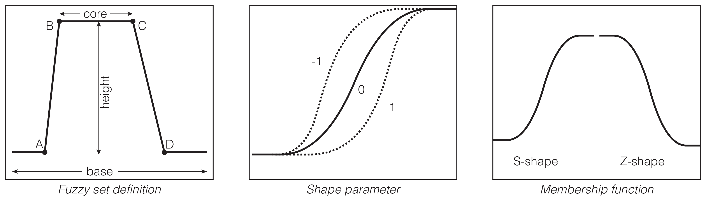
Figure 14: The fuzzy set definition with control points (A, B, C, D), shape parameter and two membership functions
from fuzzy set theory as defined in GRASS.
Onsted and Chowdhury (2014) noted critically that if a model-user incorporates zoning categories, many simply guess
the values. Thus, they used Equation 1 to calculate the rate of urban growth that had
taken place in each of these zones. In this research, this equation was used as a guide for the user-defined fuzzy
values:
where Gn is the rate of urban growth in the zoning category n
, Dn
is the total actual urban growth in zoning category n
, A
is all available land for developing in a zone and t
is the number of years of growth. Jantz et al. (2014) noted that Equation 1 is highly
dependent upon how zoning categories are defined or aggregated. It is based on the assumption that across the entire
zone, policies are applied uniformly. It also means that non-conforming land uses are distributed evenly, although,
in this study that is not an issue as this study focuses on a binary classification. Furthermore, they note that
using Equation 1, seems most suitable for areas where zoning data is temporally consistent.
This is a key point, since policies have changed over the last 40 years in the study area and hence, they are not
always consistent. But, this could also be attributed to the lack of functionality of SLEUTH, since it does not support
multiple excluded layers or dynamic excluded layers. Despite this criticism, Equation 1 functioned as an indication as to what the user-defined fuzzy values could be for the MCE factors and for that it
seems sufficiently capable. With Gn
from Equation 1 the resistance to urban growth was calculated for each zone by:
where Rn
is the urban growth resistance value of each land category, Gn
is the rate of land lost to urban growth in land category n
and Gmax
is the G
of the land category with the greatest urban growth rate.
Another method used is the Analytical Hierarchy Process (AHP), which allows pairwise comparison of the fuzzy layers
and assigns weights to the fuzzy layers based on matrix calculations. AHP was used for weighting the seventeen layers
using general knowledge of the area and tests performed on the input data (Saaty, 1980). AHP was used since it has
the capability to weight elements when these are difficult to compare by cognitive evaluation, e.g. equal important,
moderate important, strong plus or extreme importance. Determining the weights was done by trial-and-error and by
comparing calibration test outputs of various factor weight combinations. The consistency of the matrix is evaluated
by dividing the consistency ratio with a random consistency ratio (Alonso & Lamata, 2006). In this case, the measured
consistency ratio of the AHP weighting was 0.07, which is below 0.1 and thus within acceptable limits. A detailed
description of how AHP works and is executed can be found in Saaty (1980).
Furthermore, another group of digital map layers was used in the MCE that depict the unsuitability, called the constraint
layers. These consist of layers excluding pixels for urban growth based on the water mask and road and railways buffers.
The water mask is excluding all water elements. A 50 m buffer around the highway and regional roads and 30 m buffer
around the railway are excluded from urbanization. The fuzzified layers were combined through weighted linear combination
and multiplied by he constraint layers, which leads to the MCE for urban suitability (Sn
) being given by:
where Sn
is the urban suitability score for cell n
, Xi
is the fuzzified criterion score for factor i
, Wi
is the weight assigned to factor i
, I
is the number of factors, Cnj
is the score of cell n
on constraint j
, and J
is the number of constraints.
Choosing MCE factors
Using an urbanization-suitability layer in the exclusion layer could accommodate for other relevant factors that influence
the urban development in the Netherlands. For the MCE, raster layers were prepared of criteria that are believed
to affect the urban growth in Groningen and were available for analysis. The list of factors used in this research
is not an extensive list and there are probably other factors that influence urban growth. The relevant factors that
were included in this multi-criteria evaluation were: proximity to the city center, proximity to railway stations
(Koopmans, Rietveld, & Huijg, 2012), proximity to the highway exits, protected areas such as Natura 2000-areas (Borzacchiello,
Nijkamp, & Koomen, 2010; Irwin & Bockstael, 2004), zoning policies (Onsted & Chowdhury, 2014), proximity to industrial
sites, proximity to city edges, land use or land cover, and ground suitability (Mahiny & Clarke, 2012; Verburg, et
al., 2004; Leao, Bishop, & Evans, 2004). For this study, proximity to the city center was interpreted as the proximity
to the public facilities, and shops and restaurants.
The distance to public facilities, shopping facilities and restaurants, industrials, but also borders and public transit
stations were split into two variants. These factors were divided into a regional component and a more local component.
The reason for doing this was to emphasize the differences between rural and urban areas. If all public facilities
were included and received an equal weighing score, facilities in smaller cities would be equally influential as
the main hospital or university in the city of Groningen, which does not reflect reality. Hence, the least important
facilities were excluded, and the more decisive local and regional facilities were split into two categories. Moreover,
there is a relation to factors that are outside the scope of the spatial extent, such as industrial sites just outside
the boundaries of the study area that could influence the urban growth in the area of interest. To accommodate this
issue the study area was buffered to 5000 m, to include these areas of interest.
The Groningen is characterized by a dispersed urban growth pattern, wherein various zones have distinct urban growth
patterns. One way to take in these distinct zones and allocate appropriate amounts of growth to these areas, would
be by including policy maps. However, Goetz, Jantz, Bockstael and Towe (2007) have pointed to the lack of policy
variables in SLEUTH. Poelmans and Van Rompaey (2009) have suggested that it is actually impossible to take in local
policy and other local conditions during the modelling efforts. Withal, Onsted and Chowdhury (2014) showed that it
is feasible and may produce better results. They are critical of others who included policy zones and elaborated
on the most common ways excluded layers are created in SLEUTH: ignoring zones as many urban modelers do or merely
guessing the impact of zoning. Thus, they introduced two methods to compute the urban resistance of each zone, based
on the (historical) input data. Additionally, local knowledge is an essential source of qualitative information to
determine these resistances.
Notwithstanding, it can be a dangerous practice to mask out areas or restrict urbanization in zones (Akın, et al.,
2014; Pontius, et al., 2004), which could lead to bias when modelling or forecasting. For example, in Groningen some
water bodies transformed to other land use categories. By restricting water bodies from urbanization, the model would
not be able to simulate these changes. Similarly, by including zones that encourage urbanization, more urban growth
will be simulated or forecasted in those zones. These zones are based on policies for future urban development for
the next 10 to 20 years, hence, the model would be biased into urbanizing those areas first and achieving higher
goodness of fit results in the process. Nonetheless, the opposite could also be argued, that policy is an influential
factor in the study area and that these zones should be included. In fact, the excluded layer may be the only way
to incorporate policies in SLEUTH (Chaudhuri & Clarke, 2013a).
To minimize the bias of masking, the policy zones were included in the MCE as factors, not as constraints, and as coarse
categories. Additionally, the policy maps of 1970 and 1978 were used, as presumably these would produce the least
bias in masking, since they are nearby the start year of the simulation. Moreover, from an analysis of the policy
maps, it was found that between 1970 and 1980 the policy drastically changed. In the beginning of the 1970s, local
municipalities anticipated substantial population growth, thus, large amount of areas was allocated to urban expansion.
From 1978 onwards, the policy changed to a compact city policy and urban expansion areas became smaller. Since the
time period for this research was set to 1973 and falls between these two different policies, both were included
in the calibration and assigned a separate excluded layer.
3.4 Calibration
Calibration is one of the most important, if not the most critical portion of the modelling effort. It is during this
phase that estimates of the parameter values, which describe an urban system, are determined, and upon which all
forecasting and scenario simulation is based (Batty, 1976). For SLEUTH, the calibration was standardized by Silva
and Clarke (2002), although other methods of calibration have been tested, including genetic algorithms (Goldstein,
2005; Clarke-Lauer & Clarke, 2011), ant colony optimization and subregional calibration (Liu, et al., 2012). A similar
use of artificial intelligence to improve calibration can be found in other CA applications (Wu & Silva, 2010; Feng,
Liu, & Batty, 2015). The regular ‘Brute-Force’ calibration (Silva & Clarke, 2002) was performed in this study, even
though, ant colony optimization and calibration through genetic algorithms would presumably produce better results
and are computational more efficient. However, ant colony optimization was not readily available and whilst GA-SLEUTH
is, which uses genetic algorithms for calibration, it does not use the improved functionality of SLEUTH-3r. Therefore,
SLEUTH combined with a standard calibration procedure was conducted, which is shown in Figure 15.
This modelling approach is of a similar structure as outlined in section 2.2: verification,
calibration, validation and prediction. In the following sections the various phases will be elaborated.
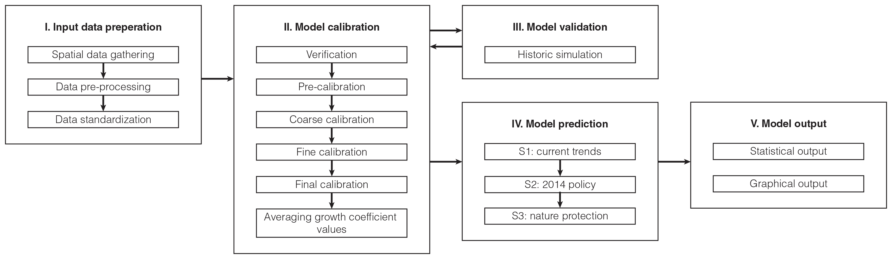
Figure 15: A visualization of the phases in model calibration.
Input data preperation
CA are subject to errors and uncertainties when they are applied to real urban environments, due to human errors, technical
limitations and the complexity of nature. This is because current CA are quite different from Wolfram’s deterministic
models (Wolfram, 1984b) which used limited data and had strict definitions. Instead, current CA require large amounts
of input data to produce realistic modelling results. Inevitably, these data layers will contain errors and uncertainties
that can alter simulation results during the iterative processes involved in CA. Ensuring the quality of the input
data is an essential element of model calibration (Silva & Clarke, 2002). Therefore, understanding these errors and
uncertainties in the input data is a crucial component for a successful simulation and interpretation of the modelling
results (Yeh & Li, 2006). For this research, the input data preparation consists of three stages: data gathering,
data pre-processing and data standardization. A brief overview will be given in the next sections and a more detailed
description on these three stages will be presented in Chapter 4.
Data gathering entails the accumulation of input data from various sources and data storage in databases. For this
research, a variety of datasets were collected: satellite data, topographic maps, digital elevation map, vector data
of the road infrastructure, and various other spatial and non-spatial raster and vector data for the urbanization-suitability
layer. Whether data is useable depends on the accuracy of the data and the credibility of the data supplier, therefore
reading associated documentation is useful to understand its limitations. Frequently, datasets were open-source or
web-scraped of websites. The exceptions were policy maps of the years between 1970 and 2000, these were collected
via archival research. Most of the open-source data came as large country-wide datasets or database-dumps of the
Netherlands. Hence, it was found useful to store these datasets in a PostgreSQL database. Consequently, this ensured
a proper data structure and standards and a means to rapidly process data.
Afterwards, the ‘raw’ data needed to be transformed into meaningful information by giving it some degree of interpretation,
which is commonly referred to as data pre-processing. In reality, the data was not raw. In this study it was usually
pre-processed in some manner by the data provider, as became evident from related documentation. Nonetheless, the
data is often inconsistent, incomplete or contains errors. Hence, it needed to be transformed into understandable
and useable data. Generally, data pre-processing involves data cleaning and data transformation (Longley, et al.,
2010).
For this study, two general points can be made regarding data pre-processing. First, to avoid future confusion on the
spatial characteristic of the study area, a control-file was created. This raster file was used as a reference to
all other raster data, so all raster data used the same spatial resolution (30 m), spatial extent (i.e. bounding
box), spatial projection (EPSG: 28992), file formats (GeoTIFF and GIF) and file data type (32Float and 8Byte). Secondly,
the database stored a collection of raster and vector data types. Map transformations applied to data can lead to
loss of data and uncertainty. Specifically, the conversion of vector data to raster data will usually lead to a loss
of spatial information (Yeh & Li, 2006). In that case, the default choice was to convert all cells touched by vector
objects and to use the appropriate algorithm for interpolation, often cubic convolution. Consequently, the data feature
will be overestimated, but it will also ensure it is consistently present in the raster data. Furthermore, for the
interpretation of various factors in the MCE a variety of GIS-operations were used, which may generate new errors
due to imperfect user knowledge and inaccurate data. To cope with the described data uncertainty, fuzzy set theory
was used as explained in more detail in section 3.3. The validation of data, if necessary,
is described in more detail in Chapter 4.
Lastly, all data was standardized in conformity with SLEUTH specifications. The model required six grayscale GIF images
(i.e. 8Byte). For all layers, 0 is a non-existent or null value, and values larger than 0 are considered existing.
All raster images required the same number of rows and columns, same spatial projection and spatial resolution, hence
the control-file that was created. Moreover, the images ought to follow a specific naming convention: <location>.<layername>.[<data>].[<user
info>].gif, details can be found in the scenario-file that comes with SLEUTH.
Verification
After data preparation, the first stage in model calibration was to set up the simulation environment correctly. In
this case: a Cygwin environment with the Open MPI library to enable parallel processing. Afterwards, the scenario-file
was prepared and SLEUTH was run in test-mode to test if the input data was compatible with the model specifications
and to confirm the model worked correctly. As Silva and Clarke (2002) have pointed out: “it is prudent to first run
the model in test mode… and to verify the statistical files as well as the different GIF images produced” (p. 531).
Pre-calibration
The second stage in the calibration of SLEUTH-3r is pre-calibration, which is to determine (a) appropriate auxiliary
values and (b) determine appropriate self-modification values. After this phase, the regular ‘Brute Force’ calibration
phases as described by Silva and Clarke (2002) can proceed.
The initial auxiliary diffusion coefficient, auxiliary breed coefficient and auxiliary diffusion multiplier were introduced
by Jantz et al. (2010) in SLEUTH-3r. The default setting is so these would not have any effect on computation and
would be the same as in the original SLEUTH model. Therefore, to use these key features of SLEUTH-3r, the model would
have to be calibrated to find the appropriate values. Further, the self-modification module was implemented in the
original SLEUTH model by Clarke et al. (1997).
The initial auxiliary diffusion coefficient and auxiliary breed coefficient were implemented in SLEUTH-3r to deal with
the instability of the road gravity coefficient. As Jantz and Goetz (2005) explained, they were unable to identify
the best-fit value for the road gravity coefficient across various spatial resolutions, as this coefficient did not
converge to a specific range during calibration. This is mainly due to road-influenced growth always being applied
last in the growth cycle, which can significantly limit the number of cells available for urbanization. Withal, it
is not the road growth coefficient itself that has a significant impact on road-influenced growth, but rather the
breed and dispersion coefficients. Accordingly, the breed coefficient influences the amount of road growth attempts
and the dispersion coefficient determines the range of the road growth attempt, i.e. how far away a cell can be urbanized
from the road cells. Thus, Jantz et al. (2010) introduced the auxiliary diffusion coefficient and auxiliary breed
coefficient, which specifically alter the breed and dispersion coefficients that are used in road influenced growth.
However, currently it is unclear how to calibrate these two auxiliary values correctly, therefore these were left
at the default setting.
The third auxiliary value introduced in SLEUTH-3r is the initial auxiliary diffusion multiplier, which is a multiplier
that along with the diffusion coefficients and the amount of pixels in the input image diagonal, determines the number
of spontaneous urban growth attempts:
where Dv
is the dispersion value, Dc
is the diffusion coefficient, D
m
is the diffusion coefficient multiplier, R
is the number of rows in the image and C
is the number of columns in the image.
With the auxiliary diffusion multiplier Jantz et al. (2010) attempted to address SLEUTH’s inability to capture dispersed
urban patterns and its tendency to allow edge growth to dominate the urban system. This calibration ensured that
SLEUTH-3r would be able to simulate the appropriate level of diffusive growth, which is imperative in an area with
dispersed urban patterns, as is the case in Groningen. In the original SLEUTH code, this multiplier was a constant
set to 0.005. In SLEUTH-3r, the user can interactively change it from the scenario-file. In order to use this key
feature of SLEUTH-3r, the appropriate multiplier value must be discovered. Therefrom, SLEUTH-3r’s growth coefficients
were set to produce the maximum level of spontaneous growth (i.e. the diffusion coefficient was set to 100 and all
other coefficients were set to 0). With 25 Monte Carlo iterations several simulations were performed in calibration-mode
to determine to best fitting auxiliary diffusion multiplier value. The pixel or population fractional difference
(PFD) and cluster fractional difference (CFD) were used to identify at what values the model would slightly (by 30%)
over-estimate the amount of urban clusters (Jantz, et al., 2010).
The self-modification module is often recognized as an important component of SLEUTH, as it would allow SLEUTH to simulate
dynamic growth rates over time, so that growth rates replicate the typical S-curve of urbanization and population
growth (Silva & Clarke, 2002). Candau (2002) states that the self-modification module was not able to reproduce the
boom and bust phases experienced in her study area. This is because the default self-modification values are inherited
from calibration of an earlier SLEUTH version applied to a different study area (Clarke, et al., 1997). Additionally,
it may be likely that due to changes made in the transition rules in the newer versions of SLEUTH and SLEUTH, the
default self-modification values may not always be fitting. Unfortunately, there is no calibration procedure to determine
the values associated with the self-modification module (Jantz, et al., 2014; Candau, 2002). However, Candau (2002)
proposed to perform a coarse calibration without self-modification and use the best-fit set of coefficients as a
baseline, to compare to coarse calibration results with self-modification.
Coarse, fine and final calibration
The value of a model’s prediction is only as good as the model’s ability to be effectively calibrated. Therefore, calibration
is said to be the most decisive step in the modelling effort (Silva & Clarke, 2002). It determines “given a starting
image of urban extent, which set of initial control parameters leads to a model run which best fits the observed
historical data” (Clarke & Gaydos, 1998, p. 706). In SLEUTH-3, the goal of calibration is to find a set of growth
coefficient values that can accurately reproduce the historical urban growth that has taken place within the study
area. Testing the simulated land cover change against known prior data is known as an effective calibration method
(Dietzel & Clarke, 2007), because it is based on the assumption that past land cover change is the best predictor
for future land cover change.
Goodness-of-fit statistics
As explained in section 2.2, the choice of appropriate goodness of fit statistics
is crucial, since it determines how a model will simulate urban growth and patterns, and how the model will predict
future urban growth and patterns. Thus far, there is no clear consensus on which best-fit statistics to use in SLEUTH.
The model produces thirteen r²-statistics to calculate the goodness-of-fit (Table 3), of these thirteen, Clarke et
al. (1997) relied primarily on four statistics: population, edges, clusters and the Lee-Sallee statistics. Others
have relied on a weighted sum of all statistical measures (Yang & Lo, 2006) or an unweighted score of several best-fit
metrics (Silva & Clarke, 2002; Candau, 2002). Moreover, Dietzel and Clarke (2007) introduced a new metric, the Optimal
SLEUTH Metric (OSM), a composite score of the best goodness of fit metrics: compare, pop, edges, clusters, average
slope, x-mean and y-mean, and f-match if land use categories are included. Others have successfully used this composite
metric for calibration (Onsted & Chowdhury, 2014; Chaudhuri & Clarke, 2013a; Bihamta, Soffianian, Fakheran, & Gholamalifard,
2015; Mahiny & Clarke, 2012; Sakieh, et al., 2015b; Sakieh, et al., 2015b).
Jantz et al. (2010) noted the potential difficulty in evaluating the fit of the model using a composite score. Additionally,
they stated that the r²-statistics used to evaluate the goodness of fit of SLEUTH could result in an under- or over-fitting
of the model. Consequently, SLEUTH-3r introduced new calibration statistics to enhance the calibration procedure.
For each of the fit-statistics (Table 3), SLEUTH-3r calculates (a) the algebraic difference
between the observed and the modeled value, (b) the ratio of the modeled value to the observed value and (c) the
fractional change in the modeled value relative to the observed value. This is calculated for each run and for each
year. Of these statistics, Jantz et al. (2010) used the PFD and CFD, and selected parameter sets that were able to
match these fit-metrics within ±5-10%.
Achieving an accurate fit for the PFD metric would ensure that the overall amount of development is matched. The CFD
is a pattern metric that captures an important component of urban form, i.e. clustered vs. dispersed patterns. In
later research, Jantz et al. (2014) also used the edges fractional difference (EFD), which compares the number of
edge pixels between the simulation and control years. The EFD is a shape metric that captures a component of the
shapes of the clusters. Other researchers that used SLEUTH-3r applied this approach (Han, et al., 2015) or expanded
it with the OSM (Jawarneh et al., 2015).
In this research, the approach of Jawarneh et al. (2015) will be used. However in this case, OSM will be the leading
metric and PFD, CFD and EFD will facilitate in evaluating the best-fit scores in terms of over- and underestimating.
From various testing in this research, it was found that the OSM was the most successful in this study area and produced
credible modelling results. Using the PFD, CFD and EFD as complementary metrics could provide more insight into the
parameter values.
Table 3: The thirteen metrics used in SLEUTH to calculate the goodness-of-fit.
Fit statistic
Definition
Product
A composite score of all the other scores combines
Compare
The modeled population of the final year compared to the actual population of the input data
Population
The least square regression score for the modeled urbanization compared to the actual urbanization of the control
years
Edges
Least square regression score of the modeled urban edge count compared to the actual urban edge of the control
years
Clusters
Least square regression score for the modeled cluster count compared to the actual cluster count of the control
years. Urban clusters are single or multiple contiguous urban pixels, determined by using an eight-neighborhood
rule.
Cluster size
Least square regression score for the modeled averaged cluster size compared to the actual average cluster size
of the control years
Lee-Salee
A shape index, measures the spatial fit of the modeled urban extent compared to the actual urban extent of the
control years
Average slope
Least square regression score of the modeled average slope of urbanized cells compared to the actual average slope
of the control years
% Urban
Least square regression score of the percentage of available urban cells compared to the actual urbanized cells
of control years
X-mean
Least square regression score of the average x-values for the modeled urbanized cells compared to the actual x-values
of the control years
Y-mean
Least square regression score of the average y-values for the modeled urbanized cells compared to the actual y-values
of the control years
Radius
Least square regression score of the averaged radius of the circle that encloses the simulated urban pixels compared
to the actual urban pixels for each control year.
F-match
A proportion of goodness of fit across land use classes
Brute Force calibration
SLEUTH is commonly calibrated via a ‘Brute Force’ methodology, during which a large number of combinations of parameter
values are tested automatically (Silva & Clarke, 2002; Clarke, Hoppen, & Gaydos, 1996). With the help of statistical
and graphical metrics that are produced during the growth cycle, the goodness of fit is calculated for each set of
growth coefficients. Each growth cycle is iterated, a user-specified number of times, during the MC simulation to
reduce the spatial variability resulting from random processes. Afterwards, the averages across the multiple MC iterations
are computed to produce the final best-fit statistics. Accordingly, the user evaluates the results, seeking the parameter
values with the highest best-fit statistics to find the optimal set of estimates of values for the growth coefficients.
The values of each of the five growth coefficients can range from 1 to 100 with incremental steps as small as one.
If all combinations of the five coefficients would be computed with the smallest incremental steps possible, the
model would run 1005 combinations. This would be highly inefficient. To reduce computational requirements, calibration
is generally divided into three sequential phases: coarse calibration, fine calibration and final calibration (Silva
& Clarke, 2002). Between the phases, the user attempts to narrow down the range of the parameter values that best
fit the five growth coefficients. At the final phase the user averages the top three results to extract the estimates
of the growth coefficient values used for forecasting. If the self-modification module is used, the estimates of
the growth coefficient values are used from the avg.log file for prediction.
Generally, for coarse calibration all five growth coefficients are set to their widest range of 0-25-100 as START,
STEP and STOP values respectively, resulting in 55 combinations. SLEUTH is stochastic, so, during calibration
it is common practice to increase the MC iterations to reduce random processes, from approximately 4 to 7, up to
10. For coarse calibration a small number of MC iterations (4) was used to reduce computational requirements. Using
the best-fit values found from coarse calibration the coefficient value range is narrowed for fine calibration. Ideally,
ranges will be narrowed so that incremental steps of five to ten could be used, whilst using five to six values per
coefficient. For fine calibration a larger number of MC iterations (7) was used. Using the best-fit values found
from fine calibration the coefficient value range is narrowed for final calibration. Ideally, the coefficient value
range is narrowed further and incremental steps are smaller than in fine calibration. For final calibration a larger
number of MC iterations (10) was used. The growth coefficient values of top three best-fit results are averaged to
produce the estimates of the growth coefficient values for prediction.
Jantz and Goetz (2005) found that any gains in performance achieved by testing additional growth coefficient values
beyond coarse calibration (i.e. increments of 25) were minimal, particularly given the substantial increase in computing
time. Hence, they had only performed coarse calibration, where all growth coefficient values ranged from 0 to 100
with increments of 25. From tests conducted during this research and based on other similar research (Liu, et al.,
2012; Sakieh, et al., 2015b; Silva & Clarke, 2002), fine and final calibration can have additional value. Therefore,
regular calibration will be conducted in this research.
SLEUTH is a stochastic urban model and utilizes the MC iteration method for simulating urban growth patterns for each
set of coefficients. The goodness-of-fit statistics that SLEUTH calculates are averaged over the MC iterations. To
ensure robust calibration, for each of calibration phases, the top five best-fit results were run in test-mode with
25 MC iterations in order to validate the best-fit score visually and statistically, as this would be sufficient
for quantifying the spatial variability resulting from the random processes (Goldstein, Dietzel, & Clarke, 2005;
Jantz, et al., 2010; Clarke, et al., 1996). Similarly, after final calibration, the top three best-fit values for
each growth coefficient were averaged and the model was run once more in test mode with 25 Monte Carlo iterations
to validate the modelling results. By combining testing with calibration the computational efficiency is maintained,
as well as a rigorous calibration procedure.
Scale
Silva and Clarke (2002) suggested that calibration should involve a multistage optimization of all controlling coefficients
across various spatial resolutions to adapt to local characteristics. For instance, calibration was also used to
find the correct factors and weights in MCE, appropriate layer for ambiguous features and calibration of the self-modification
parameters. Moreover, scale should be an integral issue during each phase of the modelling effort (Jantz & Goetz,
2005). Accordingly, all input data has been rescaled to a 60 m (625 by 525 pixels) and 150 m (250 by 210 pixels)
spatial resolution for testing purposes. Silva and Clarke (2002) also stated, that during this effort: “each calibration
phase corresponds to a multistage selection that depends both on the increased spatial resolution and the control
values that the previous calibration phase identified” (p. 531). Increasing the spatial resolution during each calibration
phase (coarse, fine and final) has been applied in other research (Akın, et al., 2014; Bihamta, et al.2015; KantaKumar,
Sawant, & Kuma, 2011). However, scale influences the growth coefficients differently in the model (Jantz & Goetz,
2005; Candau, 2002; Dietzel & Clarke, 2004b). To avoid inaccuracies resulting from cell size sensitivity, the highest
spatial resolution of 30 m was used for all calibration phases and the coarser resolutions were strictly used for
testing purposes.
Excluded layer
Ordinarily, coarse calibration uses one excluded layer, although there are exceptions (Onsted & Chowdhury, 2014; Akın,
et al., 2014; Onsted & Clarke, 2012). As stated by Onsted and Chowdhury (2014): “The dearth of research devoted to
improving excluded layer construction is surprising, since different excluded layers will cause SLEUTH… to derive
very different coefficients of growth to explain past development patterns and forecast future growth” (p. 6). For
this study, four excluded layers were used from the beginning of calibration to explore the sensitivity to local
conditions by using an MCE. Moreover, by using multiple exclusion layers, comparisons could be made regarding the
performance of said exclusion layers. One of these excluded layers was a standard excluded layer (E0) that functioned
as a null map, only excluding water bodies and protected natural areas (Mahiny & Clarke, 2012). One excluded layer
included an MCE (E1) and the last two excluded layers included an MCE with an additional factor: the policy maps
of 1971 (E2) and the policy maps of 1978 (E3). The reason to included two different policy layers is because, these
two were the closest two policy maps to the start date of 1973, and they both reflect a different policy. As stated
in section 3.1, in 1971 the municipalities in the study area forecasted large population
growth and spatial expansion, whereas in 1978 they more explicitly aimed a compact city policy to reduce urban sprawl.
3.5 Validation
Validation is an essential part of predictive modelling and becomes even more important when models are used as planning
support systems. The validation of an UGM is usually carried out by comparing the simulated map to the observed map
to determine the predictably of the model. However, often model validation is poorly defined (Pontius, et al., 2004).
In light of this critique, the validation procedure for his research will be separated through time, where the input
data from 1973 up to 2006 was part of model calibration from which the urban area and patterns of 2006 up to 2015
were predicted. For the validation, each excluded layer was reprocessed to update the MCE factors and constraints
of 2006 to reflect new water bodies, natural areas, roads and urban areas. The resultant estimates of the parameter
values were derived from calibration and used for model validation. Therefrom, the model was initialized in 2006
and run in predict to 2015 with 100 MC iterations. The reason to run the model in predict-mode from 2006 is due to
that predict-mode differentiates between probabilities a cell is urbanized. With 100 MC iterations, it is possible
to differentiate the probability a cell is urbanized up to single percentages, according to SLEUTH. Each cell that
is urbanized in 50 or more MC iterations is used for model validation. This resulted in simulated urban area and
patterns of 2015, which were compared to the observed urban area and patterns of 2015 to validate the time series
on a known historic sequence. Also, SLEUTH does not output image files with a coordinate system, hence the previously
mentioned control-file (section 3.4) was used to project the output images to a valid coordinate system.
During validation there should be an objective way to compare the prediction map to a reference map (Pontius, et al.,
2004). Hence, it is useful to use a validation technique that: (a) quantifies the budgets of error, (b) compares
to a null map, (c), compares to a random map, and (d) performs the analyses at multiple scales. Knowing the budgets
of error is useful for improving the model, as these errors will likely have the largest potential for improvement.
Comparing the predicted map to a null map, i.e. no change, and a randomly generated map with the same class sizes,
enables the model-user to assess the additional predictive power of the model. And, analyzing across multiple scales,
provides insight in to the scale sensitivity of the prediction map.
There are multiple methods that have been used to compare the predicted maps to the observed maps (Hagen-Zanker & Martens,
2008; Hagen, 2002; Pontius & Millones, 2011; Van Vliet, Bregt, & Hagen-Zanker, 2011), a review is presented by Van
Vliet et al. (2016). For SLEUTH, Chaudhuri and Clarke (2014) have used Kappa statistics to test the validity of the
simulation results, such usage of supplement statistics to validate the simulation results has been applied in various
other applications of SLEUTH (Wu, et al., 2009; Rienow & Goetzke, 2015; Sakieh, et al., 2015a). However, Kappa statistics
often provide information that is misleading and redundant, as noted by Pontius and Millones (Pontius & Millones,
2011). In addition, certain Kappa statistics are difficult to interpret correctly, e.g. Kappa simulation and its
variations. Herold et al. (2003) proposed to use pattern analysis and successfully simulated using SLEUTH, which
others have used as well (Wu, et al., 2009; Sakieh, et al., 2015b; Mahiny & Clarke, 2012; Chaudhuri & Clarke, 2013a;
Goldstein, et al. 2004). However, pattern analysis in itself is a poor validation technique since it cannot specifically
account for quantity disagreement (Pontius, et al., 2008).
Therefore, to provide assessments of accuracy, this study used a variety of validation techniques to objectively compare
the predicted maps to the observed map: three-map comparison (Pontius, et al., 2008), budgets of components of agreement
and disagreement, and multiple resolution comparison (Pontius, et al., 2011; Pontius, et al., 2004). In the following
sections these techniques will be addressed in more detail. All the model validation techniques were performed with
the GDAL software library, written in python-code and visually checked in QGIS.
Three-map comparison
A three-map comparison considers the overlay of three maps: (a) the reference map of time one, (b) the reference map
of time two, and (c) the prediction map for time two (Pontius, et al., 2008; Pontius et al., 2011). This map comparison
method allows the model-user to differentiate pixels that are correct due to persistence vs. the pixels that are
correct due to change. This is a useful comparison method as it focuses on the amount of correctly predicted changed
pixels, as opposed to comparing the entire predicted map to the entire observed map. The latter option tends to produce
misleading results that often overestimate the predictive power of a model, since the pixels that are persistence
would also be included in the overall accuracy.
For further analysis, the sources of percent correct and percent error were identified, by computing the: figure of
merit, producer’s accuracy, user’s accuracy and overall accuracy. The figure of merit (FOM) is the ratio of the intersection
of the observed change and the predicted change to the union of the observed change and the predicted change. The
FOM can range from 0% to 100%, meaning no overlap to perfect overlap between the observed change and predicted change.
This is given by:
where, A is the area of error due to observed change predicted as persistence; B is the area of correct due to observed
change predicted as change; C is the area of error due to observed change predicted as wrong gaining category, which
can only occur when multiple land use categories are used; and D is the error of area due to observed persistence
predicted as change.
Three supplementary types of accuracy can be calculated from a three-map comparison: the producer’s accuracy, which
is the proportion of pixels that the model predicts accurately as change, given that the reference maps indicate
observed change. The user’s accuracy which is the proportion of pixels that the model predicts accurately as change,
given that the model predicts change. And the overall accuracy, which is the proportion of agreement between the
observed map and predicted map. The producer’s accuracy (PA) is given by:
The user’s accuracy (UA) is given by:
And the overall accuracy (OA) is given by:
where, E is the area of correct due to observed persistence predicted as persistence.
Quantity disagreement and allocation disagreement
To validate the accuracy of the prediction, Pontius and Millones (2011) developed the quantity disagreement and allocation
disagreement, which are computed from a confusion matrix derived from a cell-by-cell comparison of the observed map
and the predicted map. These two measures differentiate the sources of error due to difference in the relative category
size between the observed map and the predicted map, and the error due to a difference in the spatial allocation
of the category given the category sizes. They are both parts of the components agreement and disagreement, which
in addition to the types of disagreement, also differentiate between three types of agreement: agreement due to chance,
due to quantity and due to allocation. The quantity and allocation disagreement is explained by Pontius and Millones
(2011), and the types of agreement are discussed in Pontius et al. (2004).
Quantity and allocation disagreement are used in this study, because they are easy to compute and easy to understand.
If the disagreement between the simulated and the observed map is high, then these two disagreements provide the
model-user with information on where the simulation is falling short. However, the values of the agreement and disagreement
cannot be interpreted on their own, since a low disagreement could also be attributed to low observed change. Hence,
the various types of agreement and disagreement are a complementary validation method to the three-map comparison,
wherein the disagreement can be visualized and further differentiated.
Multiple resolution comparison
Multiple resolution comparison is a complementary method to three-map comparison and types of agreement and disagreement.
It is rescales the observed and predicted maps by coarsening the spatial resolution. Therefrom, on multiple scale
the three-map comparison and the budgets of components of agreement and disagreement can be applied to assess the
accuracy of the predicted on multiple scales.
Multiple resolution comparison will be able to deal with the scale sensitivity of the prediction map, as opposed to
when a pixel-by-pixel comparison is performed. For example, a pixel is considered incorrect when the reference map
disagrees with the category of said pixel in prediction map, regardless of whether the correct category is found
in a neighboring pixel. To address this scale sensitivity, the prediction map was compared to the reference map on
multiple resolutions, to distinguish the sources of agreement and disagreement on multiple scales and the components
of a three-map comparison. To accommodate the variations in categories that would occur at coarser scales, a geometric
progression procedure is used that produces pixels with partial membership. The various formulae for fuzzy membership
and a geometric progression procedure are given by Pontius et al. (2004) and Pontius et al. (2011).
3.6 Prediction
Prediction is the last of the process flow. After the calibration and validation of the modelling results, a set of
estimates of growth coefficients was produced (Appendix D; Appendix E). These coefficients were used as input for
the prediction. Dezkham, Amiri, Darvishsefat and Sakiek (2013) mention there are three ways to predict in SLEUTH:
via the exclusion layer, i.e. scenarios (Xiang & Clarke, 2003), via the self-modification module and with changing
the parameters values. For this research, only the exclusion layer was used, due to the limitations and complexity
associated with the self-modification module. The growth coefficient values were used from calibration and not altered
for prediction, as minimal changes in the growth coefficients would not change the prediction outcome much (Jantz
& Goetz, 2005) and drastic changes to the growth coefficient values would undermine the calibration procedure. Hence,
three scenarios were created based on the validation procedure.
S1: a regular MCE excluded layer, as has been applied throughout this study, referred to as the E1 excluded layer.
For this scenarios, each constraint and each factor in the MCE will be updated to reflect the situation of 2015.
This scenario depicts a future without policy constraints, what would happen if urban growth in Groningen would
be unconstrained.
S2: a ‘regular’ policy excluded layer with MCE, as has been applied throughout this study, referred to as the E2
or E3 excluded layers. The basis of this excluded layer is the most recent policy of the Province of Groningen,
which includes zones that specifically restrict urbanization in agricultural lands and natural areas, and encourages
urbanization in urban expansion areas. This scenario reflects the future based on the current zoning policies of
local governments.
S3: a nature protection excluded layer with MCE, which is also a policy layer like the previous scenario, however,
this from the perspective of protecting natural areas. It is based on the Natuurnetwerk Nederland, which is aimed
at protecting natural areas and the biodiversity.
Ordinarily, for prediction, a start date is set, the last control year, and an end date is set, typically up to 20
years in the future. Research has shown that prediction beyond 10 years becomes increasingly uncertain, but could
stay well within acceptable norms (Chaudhuri & Clarke, 2014). Despite that, for this research the prediction time
period was 30 years, from 2015 up to 2045, as this could presumably put the 20 years default prediction time period
into a different perspective.
Furthermore, during prediction, the urban growth is converted to a probability that a certain cell would be urbanized,
based on how many times a cell is urbanized during the MC iterations. If 100 MC iterations are used (Candau, 2002;
Clarke, et al., 1997), it would be possible to differentiate the probability a cell would be urbanized with incremental
steps of 1%, in addition of dealing with the stochastic nature of SLEUTH. For forecasting into the future, this approach
is used and a distinction is made between cells that have a higher than 50% chance of being urbanized and cells that
have a lower than 50% chance of being urbanized, according to SLEUTH.
3.7 Section Conclusions
Section 3.1 depicted the study area, which is spanned over a region of 1,181.33 km² and
comprises the city of Groningen that is located in the north of the Netherlands. The city is a, relatively, fast
growing city in the Netherlands and is one of the few large cities in the region, which makes it a meaningful city
to the northern part of the Netherlands. In this section a brief historical overview is presented. Key in that overview
in light of this study, is the long tradition of planning urban growth via urban expansion plans, which led to less
organic growth. Since the 1970s the expansion plans were based on the compact city policy, which aims at minimizing
the urban footprint and preserving open space. Regarding this, it would be interesting to explore how SLEUTH copes
with such an area.
Section 3.2 addressed the spatial and temporal scale as used in this study. The choice of scale
influences the modelling results and choosing the appropriate scales is a crucial to modelling (Benenson, 2007).
This section justified the spatial, temporal and organizational scales that were used and why. Primarily, by reason
of limitations in available data, since the satellite imagery came in a spatial resolution of 30 m2 and the earliest
record is from 1973. Moreover, since Groningen does not function in isolation, the organizational scale was set to
include neighboring cities and villages, thus the spatial extent was set to 1,183.33 km2. The temporal scale was
set to calibration and validation from 1973 up to 2015, and prediction from 2015 up to 2045.
Section 3.3 discussed the excluded layer. It is an imperative feature of SLEUTH, since it
can substantially influence the simulation results by incorporating other relevant factors that are ordinarily not
included in SLEUTH. Thus, in this study, the excluded layer is an urbanization-suitability assessment through an
MCE as done by Mahiny and Clarke (2012) and Sakieh et al. (2015b). Both researches demonstrated the enhancement of
the simulation and prediction results from the MCE-incorporated SLEUTH-model. With fuzzy set theory the MCE layers
were standardized to allow for uncertainty and tolerance of imprecise data (Zadeh, 1965), and weights were assigned
via AHP. Moreover, this section discussed what MCE factors were used and why. An important component of the MCE is
the policy layer. Goetz, Jantz, Bockstael and Towe (2007) have pointed to the lack of policy variables in SLEUTH
and Onsted and Chowdhury (2014) showed that it is feasible to include it in the excluded layer. However, it can be
a dangerous practice to mask out areas or restrict urbanization in zones (Akın, et al., 2014; Pontius, et al., 2004),
as it could lead to bias when modelling or forecasting. To minimize the bias of masking, zones were aggregated into
the MCE as factors, not constraints, and in coarse categories. Additionally, the policy maps of 1970 and 1978 were
used, presumably these would produce the least bias in masking as they are nearby the start year of the simulation.
The next sections (3.4 and 3.5) described the calibration
of SLEUTH, verification, calibration, validation and prediction processes that were executed. The verification of
the input data and the model, the calibration to acquire the most fitting estimates of parameters, and the validation
to assess the accuracy of the model results, are key to a successful modelling result (Batty, 1976; Silva & Clarke,
2002). For calibration choosing the appropriate goodness of fit statistics is crucial, therefore OSM was used in
combination with PFD, CFD and EFD. To ensure robust calibration, for each of calibration phases, the top five best-fit
results were run in test-mode with 25 MC iterations in order to validate the best-fit score visually and statistically.
Further, since validation is often poorly defined, the validation procedure for his research was separated through
time, where the input data from 1973 up to 2006 was used for model calibration wherefrom the urban area and patterns
of 2006 up to 2015 was predicted. Three validation methods were used that (a) quantify the budgets of error, (b)
compare to a null map, (c), compare to a random map, and (d) perform the analyses at multiple scales. These methods
were: budgets of components of agreement and disagreement, three-map comparison and multiple resolution comparison.
Section 3.6 elaborated on the prediction process as executed in this study, which was
done with three scenarios: the S1 MCE excluded layer, the S2 MCE excluded layer including the policy of 2014, and
the S3 MCE excluded layer including a nature preservation policy.
4. Data Pre-processing
The following section describes the pre-processing that was done for this research. Data pre-processing involves the
transformation of raw data into meaningful information by giving it some degree of interpretation. Often raw data is
inconsistent, incomplete or it contains errors. Thus, the raw data needs to be transformed into understandable and
useable data. Generally, data pre-processing involves data cleaning, such as: filling in missing values, smoothing
noisy data and resolving inconsistencies; and data transformation, such as: data normalization, aggregation or generalization
(Longley, et al., 2010). In this section the data pre-processing that have been undertaken will be explained in more
detail, which are the pre-processing of: the satellite data up to the land use classification, the SLEUTH input data
and the data for the excluded layer. For all the data pre-processing efforts, testing and validation, the following
software has been used: SLEUTH, QGIS, GRASS GIS, GDAL, PostgreSQL, eCognition and Python.
4.1 Satellite Data
Satellite based Earth observation is a technique to monitor land cover changes. In a time series analysis it holds
potential to uncover long term land cover dynamics. One of these observations is made by the Landsat mission, the
longest continuous record of satellite-based observations of the Earth’s surface, which makes it an invaluable resource
for monitoring land cover changes (Roy, Kovalskyy, Zhang, Yan, & Kommareddy, 2015). This master’s thesis is aimed
at a long-term directional trend of land cover change for Groningen which required imagery for a period of several
decades. Therefore, the Landsat satellite images of the years 1973, 1984, 1990, 1998, 2006 and 2015 were acquired
from USGS Landsat (2016a). For each of the years, as many images as available were collected, between 4 and 8 images.
The reason for this is that by combining the same bands of multiple Landsat images, each pixel’s value can be averaged
to come closer to the true value of the pixel which increases the accuracy. Collecting the images between the months
of May and October ensured the least amount of barren exposure, which made differentiating urban from other land
cover categories easier.
The oldest high-quality, cloud-free image from the Landsat database (USGS, 2016a) for the city of Groningen was collected
from the Landsat 1 Multispectral Scanner (LS1 MSS). It was acquired on the 22nd of March 1973 (path 212 and row 23)
with a spatial resolution of 60 m. The other Landsat data came at a spatial resolution of 30 m from Landsat 5 Thematic
Mapper (LS5 TM) for the years 1984, 1990, 1998, 2006 and from Landsat 8 Operational Land Imager (LS8 OLI) for the
year 2015. The LS1 MSS comes with 4 spectral bands, the LS5 TM comes with 7 spectral bands and the LS8 OLI comes
with 11 spectral bands. For further information on the spectral bands, see the USGS Landsat website (2016a). The
table below (Table 4) shows the wavelength in μm of the spectral bands of the three Landsat
missions that were used in this study, and how these compare to the other Landsat missions. The table contains the
following spectral bands: blue, green, red, near infrared (NIR), shortwave infrared (SWIR) and thermal infrared (TIRS).
The NIR of LS1 MSS is composed of two separate bands, but since these two bands are similar, they were used as one.
Moreover, LS1 MSS does not have the same amount of bands as the other Landsat missions and it comes at a spatial
resolution of 60 m, which made the land use classification harder for the year 1973. Rescaling the L1 MSS to 30 m
was necessary to be able to simulate from the 1970s, when the compact city policy was adopted by Groningen. Therefore,
LS1 MSS required most of the manual corrections made to the classification.
Blue (µm)
Green (µm)
Red (µm)
NIR (µm)
SWIR1 (µm)
SWIR2 (µm)
TIRS (µm)
LS1 MSS
0.50 – 0.60
0.60 – 0.70
0.70 – 1.10
LS5 TM
0.45 – 0.52
0.52 – 0.60
0.63 – 0.69
0.76 – 0.90
1.55 – 1.75
2.08 – 2.35
10.40 – 12.50
LS8 OLI
0.45 – 0.51
0.53 – 0.59
0.64 – 0.67
0.85 – 0.88
1.57 – 1.65
2.11 – 2.29
11.50 – 12.50
The ability to detect and quantify land cover and land use changes on the Earth’s surface depends on sensor that can
provide calibrated (known accuracy and precision) and consistent measurements. Geometric, radiometric and atmospheric
correction are a prerequisite for creating high-quality science data. It ensures the data is consistently measured
throughout the time series and becomes comparable, which is crucial to remote sensing of a time series (Chander,
Markhem, & Helder, 2009). By that reason, all bands for all the years were geometrically, radiometrically and atmospherically
corrected. Afterwards, the spectral bands were improved by image enhancement techniques that aid the visual and digital
interpretation of the images. A representation of this process is shown in Figure 16. All
the operations were performed with the GDAL software library and written in python-code due to the large amount of
bands that needed to be corrected, enhanced and stacked together. The result were visually checked and compared in
QGIS.
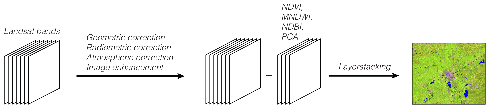
Figure 16: A simplified visualization of pre-processing involved in the Landsat imagery.
Geometric correction
In order to align the cells of all the Landsat imagery’s bands, the raster data was geometrically corrected. This means
that all the data was transformed to the same coordinate system, in this case from WGS 84 UTM Zone 31 or WGS 84 UTM
Zone 32 to RD New, which is the Dutch national projection. Some of the images did not have a valid projection, so
these the images were geo-referenced with a cubic convolution algorithm. Geo-referencing is the process of assigning
a spatial coordinates to data that has no explicit coordinate system. Images are georeferenced by linking spatially
distributed control points in the satellite image to a base map with a known coordinate system (Longley, et al.,
2010). To assess the accuracy of the geo-referenced image the root mean square error is a commonly used statistic.
It measures the difference between locations that are known and locations that are digitized. The geo-referenced
images had a root mean square error of between 11 and 15, which is less than half of the pixel size and indicates
the images were relocated with an accuracy of less than one pixel. Also, it involved clipping the raster dataset
to the same spatial extent and resampling the data with a cubic convolution algorithm to the same spatial resolution,
in this case 30 m.
Radiometric correction
The sensors at the Landsat satellites capture reflected solar energy, which is converted to radiance and rescaled into
an 8-bit digital number (DN) ranging from 0 (low intensity) to 255 (high intensity). Depending on the solar angle
and satellite angle the intensity of radiation coming from a surface that is captured at the Landsat sensor varies
between dates. Thus, the uncalibrated DN needs to be corrected (Chander, et al., 2009). The first step of this procedure
is radiometric correction, which entails the conversion of the DN back to spectral radiance (L𝝀). The
spectral radiance at the sensor’s aperture is measured in watts per square meter per steradian (solid angle) per
micrometer (W·m2·sr·μm) and given by:
where LMAX𝝀 is the maximum spectral radiance of a band that is scaled in W·m2·sr·μm, LMIN
𝝀 is the minimum spectral radiance of a band that is scaled in W·m2·sr·μm, QCALMAX is the
maximum quantized calibrated pixel value of a band in DN, QCALMIN is the minimum quantized calibrated pixel value
of a band in DN and QCAL is the quantized calibrated pixel value in DN.
For LS8 OLI Equation 9 is slightly different as the metadata contains a pre-calculated offset, the band-specific multiplicative
rescaling factor (ML) and gain, the band-specific additive rescaling factor (AL). More information
on the calibration procedure for LS8 can be found in the Landsat 8 handbook (USGS, 2016b).
Atmospheric correction
The second step is atmospheric correction, for which the spectral radiance was converted to surface reflectance (ρ).
This was done by calculating the path radiance (Lp) based on Dark Object Subtraction (DOS), which is a
family for image-based atmospheric correction techniques. Chavez (1996, p. 1027) states that “the basic assumption
is that within the image some pixels are in complete shadow”, such as deep water and deep shadow. “Their radiances
received at the satellite are due to atmospheric scattering (path radiance)”, hence these areas should have almost
no reflective properties. “This assumption is combined with the fact that very few targets on the Earth’s surface
are absolute black, so an assumed one-percent minimum reflectance is better than zero percent”. In this case DOS1
was calculated by determining the DN at the lowest one-percent of the image histogram (DNmin), therefore
the path radiance is given by:
where ML is a band-specific multiplicative rescaling factor from Landsat metadata, DNmin is the
DN at the lowest 1% of the image’s histogram, ESUN𝝀 is the mean solar exo-atmospheric irradiances in
W·m
2·μm from Chander et al. (2009), θs is the angle of incidence of the direct solar flux unto
the Earth’s surface in degrees from the Landsat metadata and d is the Earth-sun distance in astronomical units from
Chander et al. (2009). Additionally, the following assumptions were made based on Moran et al. (1992): Tv is the atmospheric transmittance along the path from the ground surface to the sensor, set at 1; Tz is
the atmospheric transmittance along the path from the sun to the ground surface, also set at 1; and Edown is the downwelling spectral irradiance at the surface due to scattered solar flux in the atmosphere, set at 0.
From the path radiance the surface reflectance was calculated. Surface reflectance is the reflectance of the surface
of the Earth, thereby clouds and other atmospheric components do not affect the reflectance spectra. This is given
by:
The Landsat TM and OLI also contain thermal bands for which the temperature was calculated by converting the spectral
radiance to at-satellite brightness temperature in Kelvin. This is given by:
where K1 is a band-specific thermal conversion constant in W·m2·sr·μm and
K2 is a band-specific thermal conversion constant in Kelvin, both are from Chander et al. (2009).
Image enhancement
Once all the individual bands for each Landsat raster dataset were converted to surface reflectance or at-satellite
brightness temperature, the bands were improved to aid visual and digital interpretation with image enhancement techniques.
There are a variety of image enhancement techniques and the ones used in this research were: contrast enhancement
performed in QGIS and principal component analysis (PCA), image transformation and band rationing performed in Python
(Lillesand & Kiefer, 2015).
Contrast enhancement entails enhancing the image by applying a standard deviation contrast stretch. This does not change
the value of the pixels, it merely improves the visual representation. This is useful when interpreting the Landsat
imagery for selecting training pixels during classification or whilst selecting sample pixels for an accuracy analysis
of the classification. The PCA is a mathematical method that is used to create another uncorrelated dataset with
principal component images to accommodate for the high correlation between the individual bands. Image transformation
involves the manipulation of the same bands of multiple Landsat datasets of the same area acquired at different times,
i.e. multi-temporal image data. The pixels were averaged to come closer to the true value of the pixel and thereby
improving the accuracy of the image. To these pixel values band rationing was applied to calculate the following
indices: the Normalized Difference Vegetation Index (NDVI), which is given by:
The Normalized Difference Built-up Index (NDBI), which is given by:
The Modified Normalized Difference Water Index (MNDWI), which is given by:
where NIR corresponds to the near infrared spectral band in the 0.70 μm – 1.10 μm wavelength range, Red corresponds
to the red spectral band in the 0.60 μm – 0.70 μm wavelength range, SWIR corresponds to the shortwave infrared spectral
band in the 1.20 μm – 1.75 μm wavelength range and Green corresponds to the green spectral band in the 0.50 μm –
0.60 μm wavelength range.
The calculation of these indices is based on specific properties of the features of interest in terms of strong absorption
or reflection in certain spectral bands (Lillesand & Kiefer, 2015). The NDVI is commonly used for the extraction
of vegetation. This index is based on the fact that plants absorb visible light for photosynthesis in the 0.40 μm
– 0.70 μm wavelength range and reflect the near infrared light in the 0.70 μm – 1.10 μm wavelength range, which is
divided by the total light coming in. The NDBI is based on the fact that built-up areas have a high reflectance in
1.55 – 1.75 μm wavelength range and low reflectance in the 0.76 – 0.90 μm wavelength range, which is then also divided
by the total light coming in. Similarly, the MNDWI absorbs the light in the 1.20 – 1.70 μm wavelength range and reflects
the light in the 0.50 – 0.60 μm wavelength range. Zha et al., (2003) showed that the NDVI combined with the NDBI
is a useful to extract built-up areas. The MNDWI is used to reduce spectral confusion between built-up areas and
bare areas, as Ogashaware and Bastos (2012) suggested that bare areas contain more water than built-up areas. Therefore,
in this research these three indices were used to extract urban areas from the imagery. Afterwards, all the bands
and indices were stacked together into a single TIF-file. Figure 17 shows the resulting
satellite image and three the spectral band combinations from the stacked TIF-file.
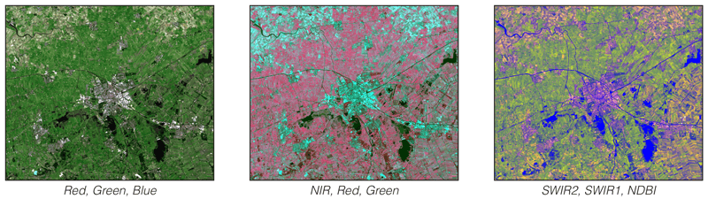
Figure 17: The resulting satellite images for the LS8 OLI for the year 2015 after the various corrections.
Remote sensing
Remote sensing is the science of acquiring information about the Earth’s surface through sensing and recording reflected
or emitted energy and processing, analyzing and applying that information. Several studies have been conducted that
combine SLEUTH with remote sensing and geographic information systems (Sakieh, et al., 2015a; Qi, 2012; Amin, 2007;
Pan, et al., 2010; Liu, et al., 2012). There are primarily two techniques for remote sensing: pixel-based remote
sensing and object-based remote sensing (Lillesand & Kiefer, 2015). Pixel-based remote sensing is concerned with
individual pixels and their spectral values, whilst object-based remote sensing combines homogenous regions in an
image into new objects. Object-based remote sensing is based on the assumption that important semantic information
is not represented in single pixels, but image objects and their relations. The image content is represented in a
network of image objects and act as building blocks for subsequent image analyses. Image objects carry more useful
information than individual pixels do and can be characterized by not just spectral values and spectral derived information,
but also shape, texture, neighborhood or context. Therefore, object-based remote sensing with eCognition was used
in this research to classify the land use in Groningen.
Object-based image analysis is divided into two steps: (a) image segmentation and (b) image classification. The merged
satellite images were segmented into smaller image objects via multi-resolution segmentation, a bottom-up region
merging technique (Lillesand & Kiefer, 2015). The associated algorithm starts with considering each pixel of the
various input bands as an individual object. It searches for adjacent pixels that have a similar spectral values.
These are merged together into a bigger object, thus creating homogenous objects in an image. The homogeneity criterion
is based on a combination of spectral values and shape properties, which is split up into smoothness and compactness.
The segmented images were classified with a nearest neighbor supervised classification method by collecting 25 training
samples of each land use class: water bodies, forests, rangelands, agricultural lands, heathlands and barren lands,
and urban areas. The samples were selected via targeted sampling, due to the ease in data collections and so the
selected pixels would represent the range of variability within each class (Congalton & Green, 2008). Based on fuzzy
logic the nearest neighbor algorithm assigns a class to all the image objects that the objects belongs to the most.
The resulting classification was visually validated via topographic maps and manually corrected if needed in QGIS.
To ensure the urban area is consistent throughout the time series, the urban area of earlier years was harmonized
with later years. This is based on the assumption that once a cell is urbanized it will stay urbanized.
Validation of classification
The classification maps are not perfectly accurate and are bound to contain errors. Therefore, to conduct a meaningful
validation of predicted maps, an accuracy analysis of the observed maps is required to determine their credibility
and to provide reasonable explanation for possible estimates of errors. This is particularly true when the observed
maps are classified from remotely sensed data at a medium spatial resolution, where the measured classification accuracy
may only be lower due to the mixed pixel problem (Chaudhuri & Clarke, 2014). The mixed pixel problem refers to the
problems associates with the representation of multiple spectral classes in one pixel. Typically, each pixel contains
the average spectral value of several classes, due to emittance and reflectance of different types of material in
that pixel. Ordinarily this takes place along the edges of features where class transitions occur.
Consequently, the classification for the years 1973, 1984, 1990, 1998, 2006 and 2015 was validated via a confusion
matrix to assess the OA, the UA, the PA and the Kappa coefficient of agreement. The OA is the number of correctly
classified pixels divided by the total number of pixels. The US is a measure of the errors of commissions, which
are incorrectly included pixels to the class of interest, indicating the probability a pixel represents the same
category in the observed map. The PA is a measure of the errors of omissions, which are incorrectly excluded pixels
to the class of interest, indicating how well a certain area can be classified (Congalton & Green, 2008). Kappa measures
the agreement between the classification and the observed maps based on chance (Congalton, 1991). This is given by:
where J is the number of categories in the confusion matrix, xi is the number of observation in row i and
column i, xi+ and x+i are the marginal totals of row i and column i, and N is the total number
of observations. Generally, Kappa can be interpreted in the following way: if Kappa equals 1, then the classification
is perfect; if Kappa is larger than 0, then the observed proportion correct is greater than the expected proportion
correct due to chance; if Kappa is equal to 0, then the observed proportion correct is equal to the expected proportion
correct due to chance; and if Kappa is smaller than 0, then the observed proportion correct is less than the expected
proportion correct due to chance. Based on Congalton (1991), who provided an indication for the amount
Based on Congalton (1991), who provided an indication for the amount of training pixels ought to be selected, for the
years 1973, 2006 and 2015, per class 60 training pixels were selected, resulting in a total of 360 training pixels.
For the years 1984, 1990 and 1998, per class 30 training pixels were selected, resulting in a total of 60 training
pixels. Samples were selected via stratified sampling, where the strata are the land use categories from the classification
map, and each stratum contained a minimum of 30 samples. Afterwards, the sample matrix was converted to a matrix
that represents the entire study area to compute unbiased summary statistics. This was done by multiplying the matrix
cell by its associated class size proportion given by the classified map (Pontius & Millones, 2011), based on the
assumption that the real class size proportions are similar to those in the classification map. The sample pixels
values were derived of image observations of satellite imagery.
The results show that the OA, PA, UA and Kappa statistic of the three observed maps is sufficient. (Table 5 and Table 6). The accuracy analysis of the year 1973 is the only one provided here, as this
is exemplar to the accuracy of the other classified years. What this shows is that due to the small class size of
category six (barren and heathlands), that the PA is much lower than for other categories. The other accuracy analyses,
for the years 2006 and 2015 can be found in Appendix A and for 1984, 1990 and 1998 in
Appendix B.
Table 5: The confusion matrix of the land use classification of 1973, and the errors of omission and commission,
producer’s and user’s accuracy are shown per class as well as the overall measures.
Reference
Producer’s accuracy
User’s accuracy
Classified
1
2
3
4
5
6
sum
1
0.025
0.000
0.000
0.001
0.000
0.000
0.026
89.35%
95.08%
2
0.000
0.016
0.000
0.000
0.000
0.001
0.017
30.29%
92.98%
3
0.000
0.026
0.447
0.006
0.013
0.013
0.506
98.91%
88.46%
4
0.003
0.001
0.000
0.097
0.000
0.000
0.101
84.93%
95.59%
5
0.000
0.010
0.005
0.010
0.324
0.000
0.349
95.95%
92.96%
6
0.000
0.000
0.000
0.000
0.000
0.001
0.001
4.96%
100.00%
sum
0.028
0.053
0.452
0.114
0.338
0.015
1.000
Overall accuracy
91.01%
Overall producer’s accuracy
67.40%
Overall user’s accuracy
94.18%
Kappa
0.86
Note. The numbers in the confusion matrix represent the following classes, 1: water, 2: forest, 3: rangelands,
4: urban areas, 5: agricultural lands and 6: heathlands and barren lands. The amount of training pixels selected
for heathlands and barren lands is less than for the other classes, as this category is less common.
Table 6: The results of the accuracy analyses of the classifications of 1973, 1984, 1990, 1998, 2006 and 2015.
Overall accuracy
Producer's accuracy
User's accuracy
Kappa
1973
91.01%
67.40%
94.18%
0.86
1984
96.23%
87.91%
95.05%
0.82
1990
96.67%
89.45%
96.67%
0.85
1998
95.59%
89.76%
93.53%
0.83
2006
92.30%
62.69%
94.64%
0.84
2015
94.13%
77.82%
95.42%
0.89
4.2 Input Data
The SLEUTH model requires several input data, as shown in Table 7, and conform specific specifications
as explained in section 3.4 In the next section the various input layers and the topographic
maps used for validation will be discussed, and from where the data was accumulated. First, a brief explanation on
what data is required for SLEUTH.
The Slope layer uses elevation data with a percent slope and requires only one time period. The Land use layer is an
optional layer that uses any number of land use categories, as long as they are consistent. It requires two time
periods and is used to calculate a class-to-class transition probabilities matrix among the different land use categories.
The excluded layer defines the urban suitability from 0 (suitable) to 100 (unsuitable). The Urban layer consists
of a raster in which a cell is either urban or non-urban. In the original SLEUTH model this layer required at least
four periods to calculate goodness-of-fit statistics, in SLEUTH-3r only two periods are required due to the new goodness-of-fit
statistics. Lastly, the Transportation layer needs at least two time periods and has the option to include weighting
to represent the relative importance of roads and to determine the probability of urban development according to
accessibility of a location.
Table 7: A list of the sources of the model input data for SLEUTH.
Theme
Year
Source(s)
Slope and hillshade
Derived from the AHN2 of 2009 for the years between 1973 and 2015.
Land use
1973
Classified from LS1 MSS for 1973, LS5 TM for 2006 and LS8 OLI for 2015. The urban class was further differentiated
with vector data from BBG for1989, 2006 and 2012 as well as topographic maps for 1970, 2005 and 2015.
2006
2015
Urban extent
1973
Classified from LS1 MSS for 1973, LS5 TM for 1984, 1990, 1998 for 2006 and LS8 OLI for 2015, with the help of topographic
maps for 1970, 1982, 1990, 1999, 2005 and 2015.
1984
1990
1998
2006
2015
Transportation
1973
Classified from NWB for 2015, 2006 and 1998. 1973, 1984 and 1990 were digitized from topographic maps of 1970,
1982 and 1990.
1984
1990
1998
2006
2015
Excluded
Based on a MCE for1973, 2006 and 2015, water masks for 1973, 2006 and 2015, and policy zones of 1971, 1978, 1984,
1994, 2000 and 2015.
Topographic maps
Topographic maps were used to assist classification and to aid visual validation of the classification results. These
maps for 1970, 1982, 1990, 1999, 2005 and 2015 were gathered from the Kadaster (2016b). The maps were geo-referenced
to the situation of 2015, as this was presumably the most accurate with the most control points. The geo-referencing
of the topographic map for 2015 gave a root mean square error of 2.363 with a cell size of 2.5. This root mean square
error is sufficient, as the maps were only used for visual validation purposes. All subsequent maps, the years 1970,
1982, 1990, 1999 and 2005, were aligned with the 2015 image with a minimal root mean square error, lower than 0.01.
The corrected maps for the years 1970, 1990 and 2015 are shown in Figure 18.
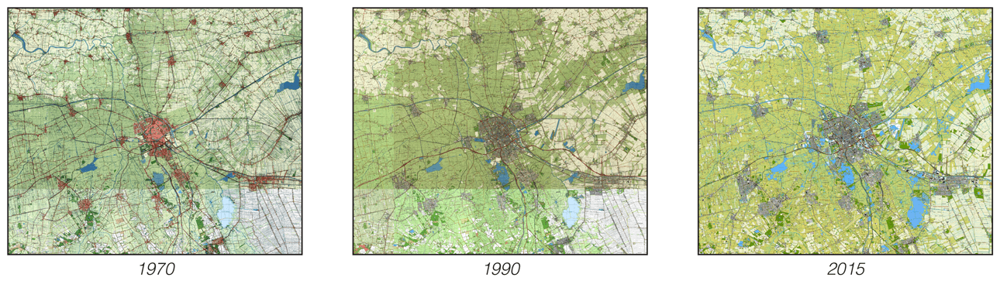
Figure 18: Three topographic maps of Groningen for the years 1970, 1990 and 2015.
Slope and hillshade
The Slope layer uses elevation data with a percent slope and requires only one time period. The Hillshade layer is
needed to give spatial context to the urban extent data and is only used for visualization purposes. Both layers
were derived from the AHN2 (AHN, 2013), which comes as a TIF-file of the ground level at 0.5 m2. The study
area was gathered in 2009 by airborne LiDAR, which is a technology that measures the surface elevation by illuminating
the surface with a laser light from an airplane. According to the specifications, the point density is between 6
and 10 per m2, with 95% of the data accurate up to 15 cm and positional accuracy up to 50 cm. Then, the
point cloud is filtered to only include ground level points and resampled to a 0.5 m2 raster file by the
squared inverse distance weighting method.
All of this suggest that the data is highly accurate. In fact too accurate for the scale it was used for in this study.
First, the tiles of the TIF-file were interpolated to fill in gaps by the filtering of the ground level points, and
merged together to create a digital elevation map (DEM). Thereafter, to reduce the noise, the DEM was smoothened
by applying an unweighting average resampling method to a spatial resolution of 30m2. Subsequently, the
DEM was converted to slope in degrees to create the slope layer. The hillshade layer was derived of the DEM. The
results are shown in Figure 19.
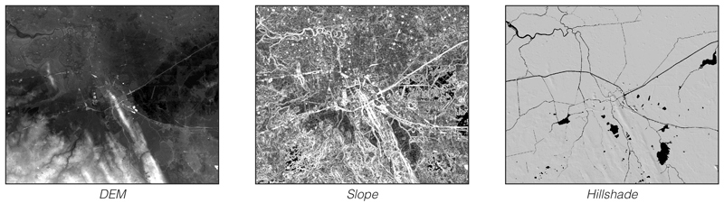
Figure 19: Visualization of the digital elevation map, slope in degrees and hillshade of the study area.
Land use
As outlined in Chapter 1, this research focusses on the urban land cover change and not
land use change, hence the land use input data is not required. However, some MCE factors are based on the land use
data, such as distance to public facilities and distance and the exclusion of water bodies, and other important factors
of the MCE.
The land use input layer has been constructed from the remotely sensed classification as well as additional vector datasets:
the Bestand Bodemgebruik (BBG) from CBS (2008) for the years between 1989 and 2012 and the BAG (Kadaster, 2016a) and
the Top10NL (Kadaster, 2015) for 2015. All these large datasets were put in PostgreSQL databases to correctly relate
and select the areas of interest. Afterwards, the datasets were combined with the remotely sensed classification to
further validate the accuracy. See for the accuracy analyses of the land use classification maps, and Figure 20 for the final results of the land use classification of 1973, 2006 and 2015. Before 2000, the BBG was based on topographic
maps of a 1:10,000 scale, after 2000 the data was based on aerial photography of 10cm accuracy and the Top10VECTOR
geometry, which is the predecessor of the Top10NL. All three datasets contain information on the land use, but the
difference is that the BBG describes the land cover classes and Top10NL and BAG describe the objects on the surface.
This implies that BBG is the most useful dataset for determining the land use classes, and the other two are merely
indicators and cannot be used on their own in this study. Furthermore, the CBS (2008) describes the relation of older
versions and newer versions of the BBG, since the definitions of the land use categories changed. In SLEUTH each pixel
can only contain one category, therefore, only the primary land use class was used as defined by the BBG.
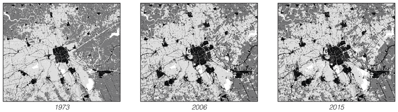
Figure 20: The input data for the land use layer for the years 1973, 2006 and 2015.
Urban extent
The remotely sensed classification was transformed into a binary classification of urban and non-urban lands, which is
depicted in Figure 21. In this research it was chosen to exclude roads and railways outside
of the cities and villages, and water bodies from the urban class. The reason for excluding these land use categories
from the urban layer is because these would disrupt the growth patterns and negatively influence the calibration phase.
This was concluded from testing the input data in SLEUTH.
After testing it was found that filtering individual pixels or small clusters of pixels from the urban layers increased
the calibration results of SLEUTH. Most of the small clusters of pixels represent large farms or a few houses that
are adjacent to each other. The growth rules applied by SLEUTH are generalized over the entire study area and since
the study area displays a rather dispersed urban growth pattern, these small clusters would incorrectly grow too rapidly.
Therefore, SLEUTH was not able to cope with these clusters correctly and the cluster measure seemed particularly sensitive
to these clusters of pixels.
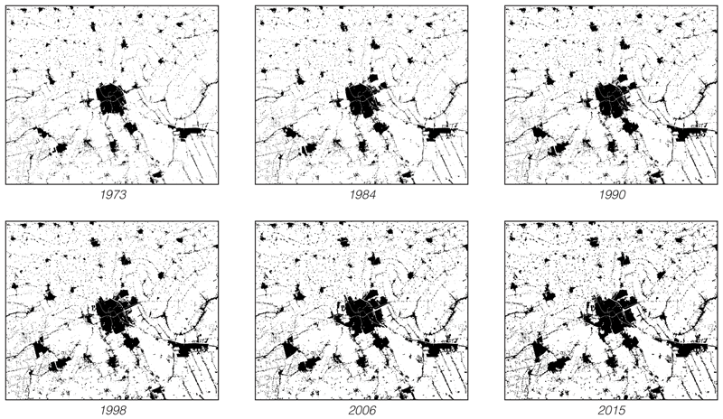
Figure 21: The input data for the urban layer for the years 1973, 1984, 1990, 1998, 2006 and 2015.
Via the excluded layer it is possible to divide the area into several zones that show more resistance to urbanization
and thus limit the amount of urban growth. However, even with zoning SLEUTH was not able to cope with these small clusters
correctly. Therefore, all urban clusters smaller than 12 were filtered out of the data, as this would maintain the
dispersed urban development pattern of the study area and improve SLEUTH’s calibration results. This was analyzed by
filtering the clusters of size up to 25 and using the filtered urban layers for calibration in SLEUTH. With the OSM,
PFD, CFD and visual interpretation a cluster filter size of 12 was found to be a fitting value. Each urban layer was
filtered individually ensuring small growing clusters that were persistent through the time series could still exist.
Subsequently, the land use layer was harmonized with the urban layers by converting the filtered urban pixels to rangelands
as this is the most common land cover class in the study area and seemed appropriate based on visual interpretation.
Figure 22 shows the urban growth that has taken place in the study area between 1973 and 2015.
Table 8 shows the amount of urban pixels and urban clusters of the input data for both the
original urban layer and the filtered urban layer. The amount of urban growth that has taken place in the study area
seems to be linear. The filtered urban layer contains less urban pixels and clusters, but also shows a similar linear
growth as the original urban layer, therefore the two layers seem to be comparable.
Table 8: Shows the amount of urban pixels and urban clusters in the input data.
Area
Area (filtered)
Clusters
Clusters (filtered)
1973
112,351
104,939
5,377
2307
1984
133,289
125,098
5,947
3018
1990
153,641
144,308
6,427
3666
1998
169,557
159,056
6,610
4059
2006
190,471
178,485
6,663
4420
2015
210,855
196,981
6,774
4432
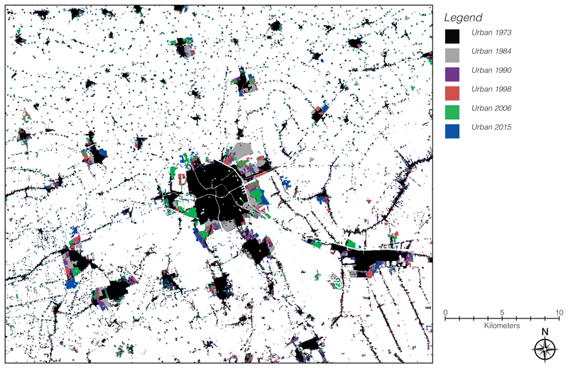
Figure 22: The urban change for Groningen between the years 1973 and 2015.
Transportation
The transportation datasets were acquired from NWB (Rijksoverheid, 2013) for the years between 1995 and 2015 and Top10NL
for 2015 (Kadaster, 2015). The accuracy of the NWB is that 95% of the roads are within 5 m of the actual position of
the road, which seems sufficient considering the spatial resolution of 30 m used in this research. From these datasets,
the transportation layer was created for the years 1998, 2006 and 2015 and with the help of topographic maps the transportation
layers of earlier years were created by manually adjusting the transportation network.
For this layer, it was chosen to only include important infrastructural connections: the highways, regional roads, main
roads from the NWB, and the railways and airports from the Top10NL. The reasoning for including the airports in this
layer was because during the testing phase adjacent pixels would incorrectly be urbanized. Thus, the airport was excluded
from the urban layer and placed in the transportation layer, even though parts of the airports are in fact buildings.
Moreover, considering the procedure as described in 3.4, the conversion of vector data
to raster data would in this case overestimate the amount of road pixels in the map. With a spatial resolution of 30
m, not every road would fit into that specification. However, due to the algorithms used in the road gravity coefficients,
it would be preferred to have continuity in the transportation network.
Furthermore, the transportation layer contains weight values to indicate their importance, 1 being the least important
and 100 the most important. Regional roads were set at 25, main roads at 50, railroads and airports were set at 75,
highways at 100 and all other pixels were set at 0. These estimates of parameter values were arbitrarily chosen and
based on other research that used similar values (Han, et al., 2015). It was found that testing and validating these
estimates was particularly difficult considering the road gravity coefficient does not seem to exhibit a relationship
to any fit statistic (Jantz & Goetz, 2005). Afterwards, this layer was harmonized with the land use classification
and urban layer, which means that the roads and airports in the land use layer are the same as in the transportation
layer.
Figure 23: The input data for the transportation layer for the years 1973, 1984, 1990, 1998, 2006 and 2015.
4.3 Excluded Layer
In the next section the various factors of the MCE, as mentioned in 3.3 SLEUTH, will be discussed,
on what data they were based and what type of data transformation techniques were used. All the factors are incorporated
in the MCE via fuzzy set theory, which requires a fuzzy set definition, a membership function and shape parameter.
All parameter values were based on literature and individual interpretations. By trial and error, these sets of parameter
values were calibrated and tested. As it turns out, this type of calibration with this many factors is rather time-consuming
in SLEUTH, since every set of parameter values needs to be calibrated and interpreted individually. Hence, the calibration
procedure regarding the MCE factors was rather coarse, by adjusting the control points and weighting scores by relatively
coarse incremental steps. Subsequently, the effects of the adjustments were recorded and compared to the regular
E0 excluded layer and other sets of parameter values. Over time, the records of sets of values grew and assessments
could be made on what factors were determined as more and what factors were less important and what the effects were
of higher and lower values for the control points of the fuzzy set definition.
The factors and constraints of the MCE are shown in Figure 24. Table 9 shows all the included criteria of the MCE and their weighting scores and fuzzy membership functions. For the excluded
layers that include policy zones, the weights in Table 9 are correct. However, E0 and E1
do not include a policy layer, therefore, their weights were calculated separately. E0 and E1 have the same relative
weights for each factor as compared to E2 and E3, but without the policy layer, i.e. the ratios between the factors
are the same yet the weighting scores are higher and still sum up to one. Further, the components of the biophysical
layer had the lowest weights and the transportation layer was found the most influential. From the criteria, the
proximity to the highway exits, regional shops and restaurants, regional public facilities and regional industrial
sites were found the most influential. All these weights characterize the importance of the city of Groningen in
the region, in an attempt to differentiate small villages from larger cities.
Table 9: Each factor of the MCE and its weighting score and the fuzzy membership functions.
Weighting score
Membership function
Control points
Criteria (resultant layer)
Weighting score
A
B
Ground water depth (m)
0.0145
S
-20
-1
Biophysical
0.0369
Elevation (m)
0.0103
S
-4
3
Flooding
0.0061
User defined fuzzy values
Soil type
0.0061
User defined fuzzy values
Land use categories
0.0513
User defined fuzzy values
Land use
0.0513
Policy zones
0.4193
User defined fuzzy values
Policy
0.4193
Proximity to regional public facilities (m)
0.0734
Z
3000
10000
Public facilities
0.0978
Proximity to sub-regional public facilities (m)
0.0245
Z
2000
7500
Proximity to regional shopping facilities and restaurants (m)
0.0675
Z
3000
10000
Shopping facilities
0.0900
Proximity to sub-regional shopping facilities and restaurants (m)
0.0225
Z
2000
7500
Proximity to regional industrial sites (m)
0.0722
Z
2500
15000
Industrial facilities
0.0963
Proximity to local industrial sites (m)
0.0241
Z
1000
5000
Proximity to Groningen's border (m)
0.0489
Z
0
10000
Borders
0.0652
Proximity to small cities' borders (m)
0.0163
Z
0
5000
Proximity to intercity train station (m)
0.0495
Z
2500
10000
Transportation
0.1432
Proximity to stop train station (m)
0.0158
Z
1500
5000
Proximity to highway exits (m)
0.0779
Z
2500
15000
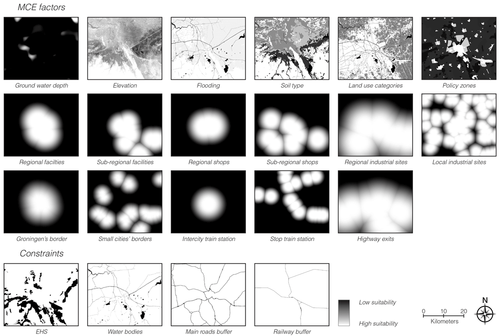
Figure 24: Shows the factors and constraint used in the MCE for 1973.
Ground water depth
The ground water depth was gathered from TNO (2016). This comes as a point cloud containing information on the water
depth at GPS locations in the study area, as well as in the adjacency of the study area from the 1950s onwards. The
points between 1965 and 1975, and 2005 and 2015 were averaged on the specific location and interpolated using a nearest
neighbor algorithm to create a raster of the ground water depth. The resulting layer was smoothened with the r.denoise
algorithm in GRASS. The control points for an S-shape fuzzy membership function were based on Biron (2004) who indicated
that anything above -1 m is not suitable for urban development, and it was assumed anything below minus 20 m would
not affect urban development. The results were two maps, one for 1973 and one for 2015, the latter was also used
for the validation time period from 2006 onwards.
Elevation
The DEM was used for the elevation layer. The layer was given an S-shape fuzzy membership function to indicate that
grounds below 3 m were negatively affected by elevation, with 4 m below sea level being the lowest point in the study
area. Grounds with an elevation above 3 m lost its beneficial effect. The resulting map was used for all calibration
and validation phases, as presumably the elevation did not change much over the last decades.
Flooding
The flooding data of the year 2015 was gathered from the Rijksoverheid (2015). It came as a vector dataset containing
zones that had a certain risk of flooding: flooding every 1000 years, flooding every 100 years, flooding every 10
years or no flooding. Equation 1 and Equation 2 calculated
the urban growth that has taken place inside the four flooding zones between 1973 and 2015, these were used as a
guide to understand how certain zones had potentially affected the urban growth. Accordingly, the fuzzy values were
derived from the urban growth resistance per zone through individual perception and interpretation. In this process
the zones, flooding every 1000 years and flooding every 100 years were merged into one zone as these were found to
be similar, and water was excluded and given a value of 0. The results are depicted in Table 10.
Table 10: Shows the user-defined fuzzy values of flooding chance.
Flooding chance
Fuzzy value
No flooding
1.00
Flooding every 100 years or more
0.93
Flooding every 10 years
0.57
Water
0.00
Land use categories
Using the land use maps from 1973, 2006 and 2015, seven land use categories were defined through a user-defined option
(
Table 12). Water and roads were excluded from urbanization by giving those a fuzzy value
of 0. For the other land use categories Equation 1 and Equation 2 were used to calculate the urban growth that has taken place in the five land use categories, from which the fuzzy
values were derived. The fuzzy values in Table 12 show that forests are less suitable and
urban areas and rangelands would not resistance urbanization at all. These are not surprising results, since agricultural
lands and heathlands would in reality pose some resistance to urbanization, more than rangelands and less than forest.
Table 12: Shows the user-defined fuzzy values of land use or land cover classes.
Land use or land cover
Fuzzy value
Water
0.00
Roads
0.00
Agricultural lands
0.59
Heathlands and barren lands
0.54
Forests
0.24
Rangelands
1.00
Urban areas
1.00
Policy
The policy maps of between 1960 and 2000 were gathered via archival research. These maps were georeferenced with a
root mean square error between 3 and 5 with a cell size of 10. Maps after 2000 were gathered from geoportal of Drenthe
(2016) and Groningen (2016), see Figure 25 for an example of what these maps look like after
geo-referencing. Subsequently, the policy maps of the Provinces were vectorized and zoned into several categories.
For each category was checked how it has affected urban growth in the past based on Equation 1 and Equation 2. If the resistance of zones was relatively close to each other and believed
to be similar, the zones were merged. This results in five distinct categories: urban, urban expansion, agriculture,
agriculture with important natural components and nature. The fuzzy values for the five categories are shown in
Table 13. Table 12 is based on the RS classification, thus it represents
the land cover class. Whereas Table 13 is based on policy zones, which are not as strictly
delineated and comprises of more types of land cover classes than the agricultural class.
Table 13: Shows the user-defined fuzzy values of the five policy zones.
Policy zone
Fuzzy value
Urban
1.00
Urban expansion
0.76
Agriculture
0.14
Agriculture with nature
0.10
Nature
0.05
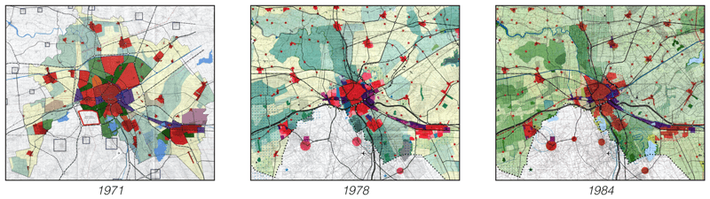
Figure 25: Three examples of policy maps, for 1971, 1978 and 1984.
Distance to public facilities, shopping facilities and restaurants, and industrial sties
The location of public facilities, shopping facilities and restaurants, and industrial sites was extracted from the
land use maps of 1973, 2006 and 2015. Through individual interpretation the most important facilities and sites were
selected to better concentrate the urban growth. Raster maps were formed based on the Euclidean distance to the facilities
and sites and fuzzified with a Z-shape membership function. The control points were based on individual interpretation
and statistical analyses of where urban growth had taken place between 1973 and 2015 with regard to the facilities
and sites. The regional facilities, shops, restaurants and industrial sites have a larger influences then the more
local variants. It was found that industrial sites had a distinctly different sphere of influence than public facilities,
shops and restaurants. The regional industrial sites had a far larger influences than the regional facilities, shops
and restaurants, and the local industrial sites had a much smaller influence than sub-regional facilities, shops
and restaurants. Presumably, this is due to local industrial sites that were more dispersed than shops, restaurants
and facilities.
Distance to borders
The urban areas were extracted from the urban layers of 1973, 2006 and 2015. The layer was formed based on the Euclidean
distance to the borders of Groningen and medium-sized cities in the region. Medium-sized cities were defined as cities
with a population bigger than 5000 inhabitants. The control points of the Z-shape membership function were based
on individual interpretation and statistical analyses of where urban growth had taken place between 1973 and 2015
with regard to the distance to borders.
Distance to highway exits
The train stations were gathered from the GTFS by the Nationale Spoorwegen (2016). The highway exits were manually
created based on topographic maps. These points were converted to raster maps based on the Euclidean distance to
the stations and highway exits. The control points of the Z-shape membership function were based on individual interpretation
and statistical analyses of where urban growth had taken place between 1973 and 2015. It was found that the distance
to the highway exits was particularly important to the study area. When it was first incorporated in the MCE, calibration
was noticeably improved.
Constraints
The constraint layer included water bodies and road networks (Mahiny & Clarke, 2012) and protected natural areas based
on the Natura2000-areas. The reason to excluded these areas was due to calibration tests that showed higher goodness
of fit results, whilst excluded water bodies, road networks and natural areas. Also, water bodies, important regional
or national roads, and natural areas are for large part restricted from urbanization by policy in the Netherlands.
Subsequently, the constraint layers and MCE factors were combined by using Equation 3.
It was found that excluded natural areas and water bodies improved calibration drastically, whist acknowledge the
dangers of related to the bias of masking as mentioned in section 3.3.
Excluded layers
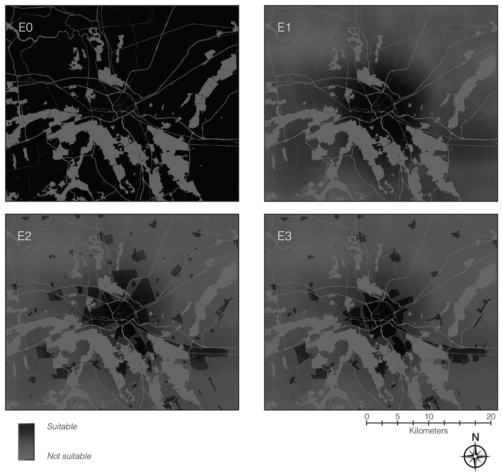
Figure 26: Shows the four excluded layers of 1973 used in calibration.
Figure 26 shows the excluded layers: E0 the regular excluded layer, E1 the MCE excluded layer,
the E2 MCE and 1971 policy excluded layer and E3 the MCE and 1978 policy excluded layer. Figure 27 shows the prediction scenarios: the S1 MCE excluded layer, the S2 MCE excluded layer including the policy of 2014,
and the S3 MCE excluded layer including a nature preservation policy.
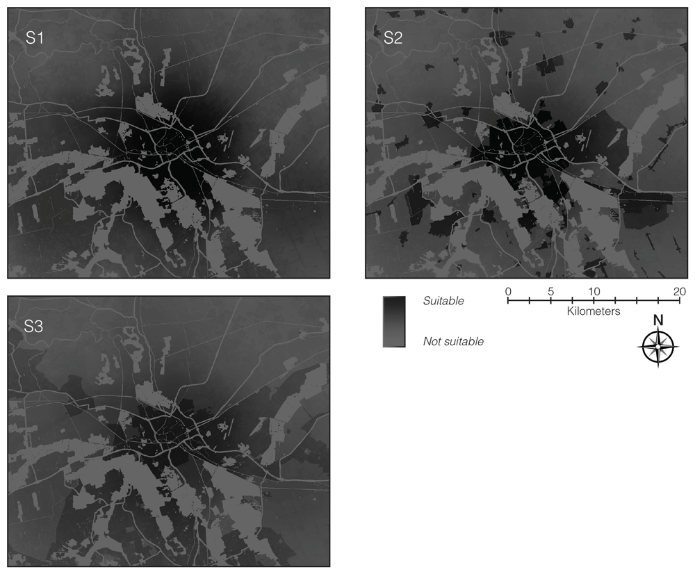
Figure 27: Shows the three excluded layers of 2015 used in the prediction.
4.4 Section Conclusions
The quality of the input data is one of the most important elements of modelling (Silva & Clarke, 2002). Therefore,
understanding the errors and uncertainties associated with the input data is a crucial component for a successful
simulation and interpretation of the modelling results (Yeh & Li, 2006). The input data was primarily derived from
a land use classification by RS, hence Section 4.1 was dedicated to explaining precisely
what was done to the satellite data and what the accuracy of the final result was. The described corrections that
were made to the satellite data are key to be able to conduct a time-series analysis. The validation of the land
use classification showed that all time periods, 1973, 1984, 1990, 1998, 2006 and 2015, had an accuracy between 91.01%
and 96.67%, and a Kappa value between 0.82 and 0.89, thus, the accuracy of the land use classification was found
sufficient.
Section 4.2 described how the various input data layers of SLEUTH were created: slope,
land use, excluded, urban, transportation and hillshade. If derived from external data, the accuracy of said data
was described. It showed that external data was often too accurate, i.e. it produced noise and negatively affected
SLEUTH simulation. Several methods were used for coarsening the input data. For example, small urban clusters and
cells were excluded from the urban data layer, only regional and national roads, airports and the railway were included
in the transportation layer, and the slope layer was smoothened by applying an unweighting average resampling method.
In the process of transforming input data conform SLEUTH specifications, spatial information got lost (Yeh & Li,
2006). Simplification of input data is inherent to current urban models and should be acknowledged, yet not considered
as a negative factor, since making simplifications is inherent to urban modelling.
Section 4.3 was dedicated to the excluded layer, which adopted an urbanization-suitability
layer based on an MCE. This layer is crucial to a successful application of SLEUTH in this study area, as it plays
a key role in accommodating for the dispersed urban growth patterns in Groningen. During the construction of the
urbanization-suitability layer various assumptions were made regarding the fuzzy set definition, factor weights,
what factors to include and what constraints to include. Also for the input data of the factors themselves, the level
of aggregation and representation. This uncertainty was reduced as much as possible by statistical analyses in Python
and testing sets of parameter values in SLEUTH.
5. Modelling Results
This chapter will present an overview of the modelling results regarding calibration in section 5.1,
the validation in section 5.2 and the prediction section 5.3.
The first section assesses the goodness of fit of the model with four different excluded layer and follows the same
structure as outlined in section 3.4 verification, pre-calibration and calibration. Validation
provides an assessments of accuracy, this study used a variety of validation techniques to objectively compare the
predicted maps to the observed map: three-map comparison, budgets of components of agreement and disagreement, and
multiple resolution comparison. Finally, prediction which is based on a set of best-fit estimates of parameter values
derived from calibration and validation, under three different scenarios.
5.1 Calibration
Model verification
During model testing, the SLEUTH-3r code was slightly modified, as stated in Appendix C.
Subsequently, the model was tested to check whether the input data was compatible with the model specifications,
and to confirm the model works correctly with the modified code. Both the input data as the model performed according
to specifications.
Pre-calibration
The first phase of pre-calibration was to determine an initial auxiliary diffusion multiplier. SLEUTH-3r’s growth coefficients
were set to produce the maximum level of spontaneous growth (i.e. the diffusion coefficient was set to 100 and all
other coefficients were set to 0). With 25 Monte Carlo iterations several simulations were performed to determine
a fitting multiplier value. The PFD and CFD were used so that the model would slightly over-estimate the amount of
urban clusters (Jantz, et al., 2010). The starting point was the default value of 0.005 as a baseline to compare
to other results, from there the value was altered by increments of 0.0005. This resulted in an auxiliary diffusion
multiplier of 0.0025 for this study area. A lower auxiliary diffusion multiplier leads to less diffusive growth,
thus less pixels are randomly selected for urbanization during spontaneous growth. Afterwards, the model was run
with the growth coefficients set to maximum to determine the maximum amount of growth the model could predict. This
was to confirm whether SLEUTH-3r was still able to predict sufficient amounts of urban growth with the new diffusion
coefficient multiplier, which it could.
The second phase of pre-calibration was to determine appropriate values for the self-modification module. This calibration
was particularly difficult for the study area. The default values would put the study area in a constant boom-cycle
as the urban growth rate would always exceed the threshold value. This would in turn decrease the slope resistance
and increase the values of other growth coefficients, which was not fitting. Moreover, the urban growth between 1973
and 2006 was close to linear growth for most of the period, therefore the self-modification would presumably not
add much value. This was based on the assumption that, without prior knowledge about the future growth rate, a growth
rate based on the recent past, i.e. linear growth, was the best estimate. While self-modification adds an important
dynamic component to the SLEUTH modelling system, it also introduces another layer of complexity during calibration.
Therefore, the self-modification module was disabled by setting the threshold values to unrealistic limits, so the
urban growth would never enter a boom- or bust-cycle.
Road gravity and slope coefficient
During calibration the road gravity coefficient varied greatly and did not converge to a specific range of values.
Previous studies have shown a similar result, that unlike the other four growth coefficients, the road gravity coefficient
does not seem to exhibit a relationship to any fit statistic (Jantz & Goetz, 2005). This is mainly due to road-influenced
growth always being applied last in the growth cycle and the significant impact on road-influenced growth by the
breed and dispersion coefficients, as was explained in Section 3.4. In this study area
road influence growth would only account for approximately 275 to 500 growth pixels, which would be up to 0.33% of
total urban growth. Therefore, the other types of growth accounted for most of the urban growth. Consequently, the
goodness-of-fit statistics produced by SLEUTH were significantly influenced by the other four growth coefficients
and not directly by the road gravity coefficient. This resulted in best-fit statistics with a road gravity coefficient
value that ‘happened to coincide’ with the other growth coefficients.
This does not mean this type of growth is irrelevant. Road-influenced growth would presumably urbanize cells that would
otherwise be unlikely candidates for urbanization. Furthermore, future growth that originated from that road-influenced
growth cell is also not contributed to road-influenced growth, even though the road-influenced growth cell may be
the initiator. It could be argued that either the relationship between urban growth that originated from road-influenced
growth and the road gravity coefficient is not defined well enough, or the best-fit statistics used in this study
were not appropriate for evaluating the road gravity coefficient. Either way, it resulted in an instable coefficient
according to best-fit statistics as used in this study. Due to its instability, this coefficient was fixed during
both calibration, validation and prediction phases of the model to 50. Only main roads and highways were included
in the transportation layer and this value would presumably best allow the transportation network to influence the
urbanization along it.
Similarly, in the study area, slope resistance is not a relevant factor as the area is practically flat. However, this
is not necessarily reflected in the best-fit statistics, as these would consistently overestimate its influence.
A part of this can be explained. In the Netherlands roads and urban development is often elevated to reduce the vulnerability
to flooding. On a DEM it can clearly be seen that this leads to slopes around these constructions. Even though the
input data for slope is much coarser, i.e. 30 m resolution, than the original data, the effects were still present
in the slope input data. This leads to a slope resistance coefficient that is difficult to interpret correctly from
best-fit statistics. However, from visual interpretation of several calibration tests this coefficient did actually
not influence the urban growth as much as the best-fit statistics reported, and changing it from 1 to 100 gave similar
results. Therefore, the slope coefficient was fixed to 25.
Calibration
The four excluded layers yielded different estimates of the growth coefficient values (Table 14; Appendix D). Table 14 shows the final calibration results of each calibration process and which of them yielded the highest goodness of fit scores, based on OSM, PFD, CFD and EFD. The OSM is a composite score based on seven different measures, and the PFD, CFD and EFD are fractional difference measures based on population, clusters and edges. The values of the growth coefficients for slope and road gravity are left out, as these were fixed to respectively 25 and 50.
Table 14: Calibration results of the four excluded layers.
OSM
PFD
CFD
EFD
Diffusion
Breed
Spread
E0
0.008
4.139
-0.540
-0.033
97
58
100
E1
0.160
0.485
1.054
0.258
3
57
50
E2
0.405
0.126
1.668
0.149
62
22
40
E3
0.361
0.200
2.258
0.288
72
95
42
Judging from the OSM statistic, the excluded layers E0 performed below acceptable and E1 should be considered a questionable result, as compared to other application of SLEUTH using OSM (Onsted & Chowdhury, 2014; Chaudhuri & Clarke, 2013a; Bihamta, et al., 2015; Mahiny & Clarke, 2012). The E0 excluded layer achieved the lowest fit-score, which is the regular excluded layer only incorporating constraints. And the excluded layers incorporating policies (E2 and E3) achieved the highest fit-score. Since it is difficult to evaluate the goodness of fit based on a composite metric, it is important to examine what the OSM is composed of, as shown in Appendix D. What this shows, is that the r2-X-mean and r2-Y-mean are two metrics that were difficult to fit under these conditions. Accordingly, this suggests that the gravity of urban growth was modelled in the wrong areas. Most of the other constituent metrics are above 0.9, indicating the success of calibration (Mahiny & Clarke, 2012). In addition, the r2-edges, r2-clusters and Lee-Sallee metric are three metrics that capture important components of the shape, for the E0-layer these were rather low, thus suggesting that the model parameters were not adjusted properly to capture these components. For the E1, E2 and E3-layers, these r2-statistics achieved high fit-score sufficiently, suggesting the model parameters were adjusted properly to capture the shape and form of urbanization.
All excluded layers overestimated the amount of urban pixels, and all but E0, overestimated the amount of urban clusters. The PFD of E0 shows a large fractional difference in population, however, this is not necessarily reflected as dramatically in the r2-population score, as shown in Appendix D, but is in the r2-compare score. The reason for this is due to the r2-population score taking in urban persistence and r2-compare only compares the simulated pixels. Each layer failed to simulate the correct amount of clusters, hence the CFD score always under- or overestimated. This suggests, contrary to what the r2-clusters showed, that these parameter settings failed to capture the dispersed character of the study area. However, this is no cause for alarm since these statistics do not specify the cause of this disagreement. Presumably this is due to diffusive growth, so the disagreement could be caused by single pixels.
The estimates of the growth coefficients seem to vary substantially between the excluded layers. This demonstrates that simulation on this scale, the study area shows strong sensitivity to the various excluded layers. Only the spread coefficient, whilst excluding E0, seems to converge to values between 40 and 50. Interestingly, this is also the largest contributor to urban growth in this study area. Based on accumulated growth over all MC iterations, a typical distribution of growth would be: approximately 2% diffusive growth, less than 1,5% breed growth, less than 0,5% road influenced growth and approximately 96% spread growth.
Initially, during several calibration tests, the various fit-metrics varied substantially and did not always narrow down to a specific range of values. Whilst examining the top 50 OSM results of several tests, the OSM scores and its constituent metrics, dropped rapidly when going further down the top results. It was found that this type of behavior was a strong indicator of poor calibration results. Conversely, when best scoring fit-metrics narrowed down to a range of values and more than just ‘a few’ sets of coefficients were able to achieve high fit scores, this was found as a strong indicator of proper calibration. Additionally, sometimes the top scoring set of coefficients had substantially higher OSM score than the runner-up. After investigations, in all cases this was due to the r2-X-mean and r2-Y-mean being much higher than with other sets of coefficients. Presumably, this was due to the stochastic nature of SLEUTH, whereby a set of values would happen to more accurately fit the r2-X-mean and r2-Y-mean. This also emphasizes the importance of a robust calibration, whereby, for each of calibration phases, the top five best-fit results were run in test-mode with 25 Monte Carlo iterations in order to validate the best-fit score visually and statistically, as this would be sufficient for quantifying the spatial variability resulting from the random processes (Jantz, et al., 2010; Clarke, et al., 1996).
Jantz and Goetz (2005) found that any gains in performance achieved by testing additional growth coefficient values beyond coarse calibration (i.e. increments of 25) were minimal, particularly given the substantial increase in computing time. Especially, during the coarse and fine calibration in this study, estimates of the growth coefficients narrowed down much further. Indicating at least fine calibration does add value. Furthermore, what should not be underestimated is the added value of increasing the MC iterations during the three calibration phases. In an early application of SLEUTH (Clarke, et al., 1996), the model-users calibrated with 100 MC iterations during their extensive calibration phase. This number was reduced due to computational requirements. Goldstein et al. (2005) have shown that one would need between 10 and 25 MC iterations for the optimal variation in the calibration process. Perhaps, with current computing power and capabilities, such as parallel-processing, the amount of MC iterations could be increased.
5.2 Validation
The four excluded layers yielded different estimates of the growth coefficient values (Table 14; Appendix D). Table
14 shows the final calibration results of each calibration process and which of them yielded the highest goodness
of fit scores, based on OSM, PFD, CFD and EFD. The OSM is a composite score based on seven different measures, and
the PFD, CFD and EFD are fractional difference measures based on population, clusters and edges. The values of the
growth coefficients for slope and road gravity are left out, as these were fixed to respectively 25 and 50.
Quantity and allocation disagreement
The quantity and allocation disagreement are two measures that differentiate the sources of error due to difference in the relative category size between the observed map and the predicted map, and the error due to a difference in the spatial allocation of the category given the category sizes. These two disagreements provide the model-user with information on where the simulation is falling short.
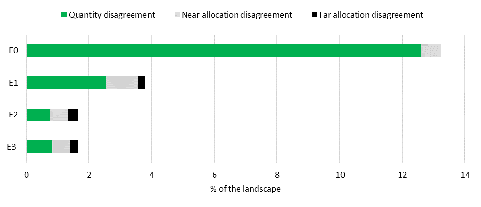
Figure 28: The quantity and allocation disagreement between the observed map and the predicted map of 2015.
Figure 28 shows the quantity and allocation disagreement between the observed map of 2015 and the predicted map of 2015 for all excluded layers. It shows that E0 achieved low fit-scores, and E2 and E3 performed similarly and could be considered as reasonably accurate predictors of future urban change in the study area, solely based on Figure 28. Moreover, it shows that E0 has a large quantity disagreement and most of its allocation disagreement can be attributed to near allocation disagreement. Compared to the other three excluded layers, E0 does not achieve high fit-scores, which aligns with goodness of fit statistics reported in calibration. Similarly, E1 has a large quantity disagreement, which means that E1 was not able to accurately predict the class sizes either. The large quantity disagreement in E0 and E1, is the main difference with E2 and E3. This type of disagreement could occur when (a) the model is not predicting enough growth, or (b) the model is predicting too much growth. Table 14 depicted that both layers overestimated the amount of urban growth, thus now it becomes clear how the r2-statistics translate to percent of disagreement of the landscape. In all layers most of the allocation disagreement is resolved at a resolution of 64 times the original pixel side. Finally, Figure 28 suggests that E1, E2 and E3 seem to predict with sufficient accuracy and E0 is not capable of predicting land cover change accurately.
Three-map comparison
The three-map comparison method considers the overlay of three maps: (a) the reference map of time one, (b) the reference map of time two, and (c) the prediction map of time two (Pontius, et al., 2008; Pontius et al., 2011). This map comparison method allows the model-user to differentiate pixels that are correct due to persistence vs. the pixels that are correct due to change. This is a useful comparison method as it focuses on the amount of correctly predicted changed pixels.
The first statistic, the FOM is a statistic that measures the ratio of the correctly predicted observed change to the union of the observed change and the predicted change. It shows that E3 and E2 achieved the highest accuracy and the E0 – random the lowest. For none of the excluded layers, the amount of correctly predicted change is larger than the sum of the various types of error, i.e. 50%. In fact, the highest overall FOM is only 25%, showing SLEUTH had difficulties in accurately simulating under these circumstances. Furthermore, for this statistic, what would be expected is that each excluded layer would achieve higher fit-scores than its random counterpart, and that each excluded layer would achieved higher fit-scores than the null map. The first is the case for all excluded layers, and the latter only for E1, E2 and E3, showing again that E0 was not able to accurately predict under these circumstances. Moreover, it may be tempting to expect each excluded layer to outperform each of the random maps, however, the random map is based on the class sizes of its associated excluded layer. Since E2 and E3 experienced much less growth than E0, the quantity disagreement is different and accordingly so is the class size. Subsequently, the random map allocated less growth cells randomly across the map, leading to less error.
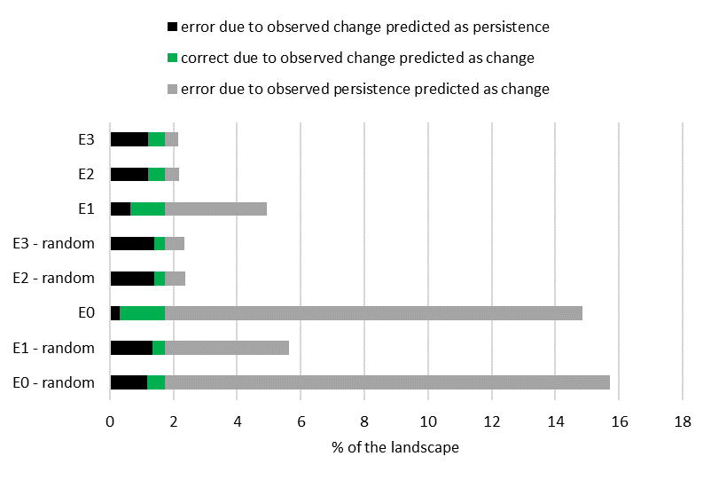
Figure 29: Shows the accuracy of the predicted maps of 2015 as compared a null map and a random map for each excluded layer.
Figure 29 also shows that the error due to the observed change predicted as persistence accounts for most the error in E2 and E3. In E0 and E1, most error is due to observed persistence predicted as change. This is reflected in a higher UA for E2 and E3, and a higher PA in E0 and E1. Another peculiarity is the high percentage of PA in E0, which can be explained by the high amount of growth produced in E0. The PA takes into account the percent correctly simulated as change and the observed change that was missed in prediction. The first is relatively large and the latter relatively small. Conversely, the UA looks at map accuracy from the opposite perspective, the percent correctly simulated as change and the simulated change that never occurred in the observed map, therefore, the UA is much lower. This also occurs in E1, albeit less pronounced. E2 and E3 have a UA that is higher than 50%, indicating the proportion of pixels that the model predicts accurately as change, is the majority of the pixels predicted as change by the prediction map. Thus, the minority of the predicted change in E2 and E3 could be classified as overestimated urban change.
Pontius et al. (2008) performed a similar analysis for thirteen study areas based on multiple CA. Even though a comparison to that research is difficult to make, as the application used different spatial resolutions, some included land use categories and the simulation time period is different. Nonetheless, if the top three results, E1, E2 and E3, are compared to this list, all three would score mediocre and E0 would be in the bottom five. This does not explain if the results are good or bad, it merely emphasizes that other model applications with similar FOM values, were found sufficiently accurate by the model-users.
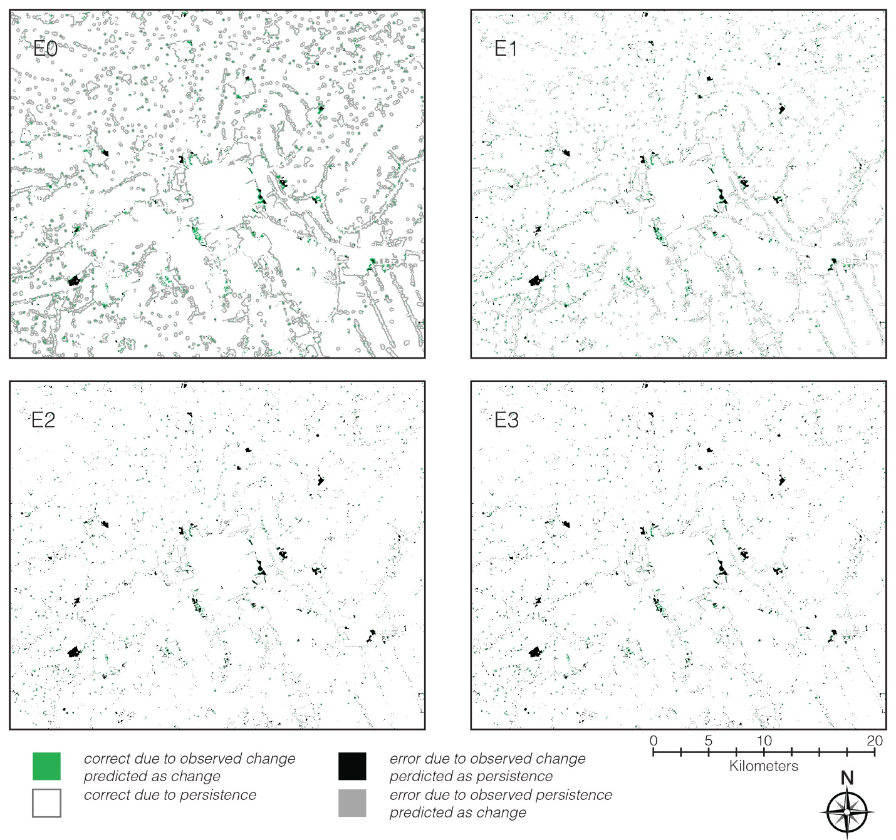
Figure 30: Validation results for the time period from 2006 up to 2015.
The main reason why E0 does not perform well, is a result of the large error due to persistence being predicted as change. In other words, the simulation has changed too many cells from non-urban to urban, when in reality these cells remained non-urban. Accordingly, Figure 30 shows how these statistics are allocated on a map. E0 shows that existing urban area, from each hamlet to the larger cities, all experienced equal growth. In reality, these hamlets have had little to no growth, which is why Figure 29 shows a large error due to persistence being predicted as change for E0. Moreover, since E0 simulated this many urban pixels, it also predicted more urban change correctly. A similar situation occurred in E1, where there was too much growth predicted in the rural areas, albeit much less than in E0. E2 and E3 performed rather well in the rural areas, which can be attributed to the policy layers that were included and more capable of differentiating rural, natural and urban areas. Between E2 and E3 there is not much difference in the allocation of correctly predicted change, even though these two policy layers were rather different in where urban expansion areas were, i.e. what are were more attractive for urbanization. Surprisingly, this could be argued for all maps, E1 and to some extent E0. What this implies is that the urban expansion areas in E2 and E3 did not influence the prediction results as much as was expected. One would expect these areas to steer the model in the right direction, but this was not that pronounced in the final maps. Further, based on these four predictions maps, as stated previously, it seems that the more resistance in the more rural areas, the higher the FOM.
Figure 30 also shows that all maps contain the same black areas, the error due to the observed change predicted as persistence. Or in other words, the observed urban change was not predicted. Therefore, all excluded layers seemed to have difficulties in accurately predicting urban change under these conditions.
Multiple resolution comparison
The multiple resolution comparison method is a complementary method to three-map comparison and types of disagreement. For this, the observed and predicted maps were rescaled by coarsening the spatial resolution. Therefrom, the multiple scale was applied to the three-map comparison and types of agreement and disagreement to assess the accuracy of the predicted on multiple scales. This method will be able to deal with the scale sensitivity of the prediction map, as opposed to when a pixel-by-pixel comparison is performed.
Figure 31 and Figure 32 show the budgets of components of agreement and disagreement across multiple resolutions on a base 2-logaritmic scale. The vertical scale stays constant throughout the graphs and emphasizes the difference in agreement and disagreement between the graphs. The horizontal axis portrays the resolution multiplied by the cell side, thus eventually the entire area becomes one pixel. Because of only two land use categories, the agreement due to chance is the largest component of agreement, at a resolution of 1 it accounts for 50% of the landscape. It illustrates that the quantity disagreement is independent of the spatial resolution as it relates to the class sizes and not the allocation. The allocation agreement and disagreement resolve at coarser scales, suggesting that SLEUTH is able to provide good expression of neighborhood relationship at coarser scales.
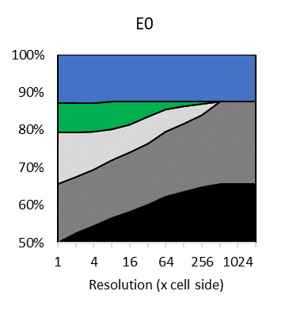
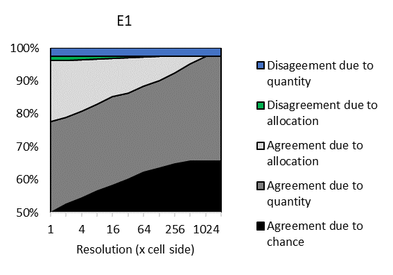
Figure 31: Multiple-resolution budget for components of agreement and disagreement between: (left) E0-predicted map of 2015 and the reference map of 2015; (right) E1-predicted map of 2015 and the reference map of 2015.
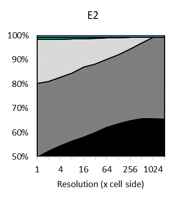
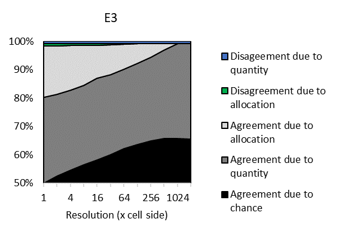
Figure 32: Multiple-resolution budget for components of agreement and disagreement between: (left) E2-predicted map of 2015 and the reference map of 2015; (right) E3-predicted map of 2015 and the reference map of 2015.
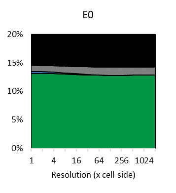
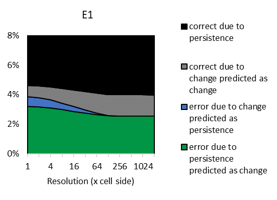
Figure 33: Budgets of components of the three-map comparison at multiple resolutions for (left) E0 and (right) E1.
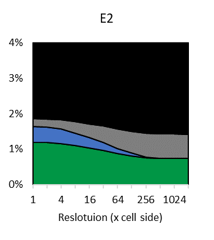
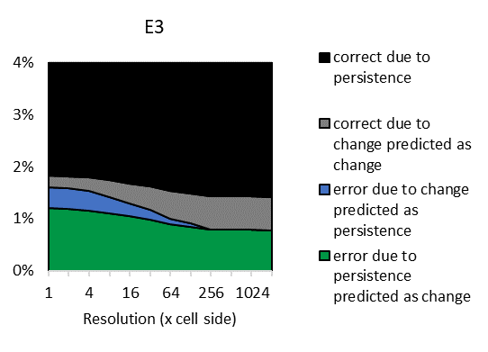
Figure 34: Budgets of components of the three-map comparison at multiple resolutions for (left) E2 and (right) E3.
Figure 33 and Figure 34 show the three-map comparison components at multiple scales. The horizontal axis zooms in to the area of interest, thus visually comparing the graphs is not practical. These graphs portray that most of the agreement is due persistence and that this agreement becomes larger at coarser spatial resolutions. The error due to persistence predicted as change, did not resolve at coarser resolutions, due to the quantity disagreement. In each graph, the error due to change predicted as persistence became either correct due to persistence or due to predicted correctly. Furthermore, Figure 34 shows how similar E2 and E3 are, even though the excluded layers were different. For all layers the FOM increases as the resolution coarsens, E2 and E3 in fact were able to achieve a FOM of over 40% at a resolution of 128 times the cell side.
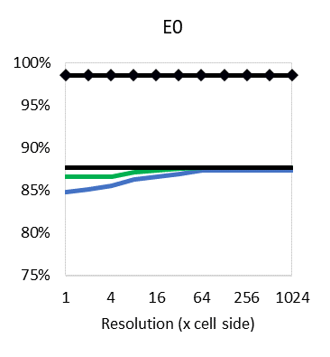
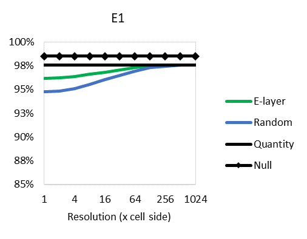
Figure 35: (left) percent correct between the reference map of 2015 vs. three other maps (a) null map, (b) E0-predicted map of 2015 and (c) random map; (right) percent correct between the reference map of 2015 vs. three other maps (a) null map, (b) E1-predicted map of 2015 and (c) random map.
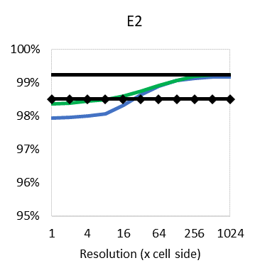
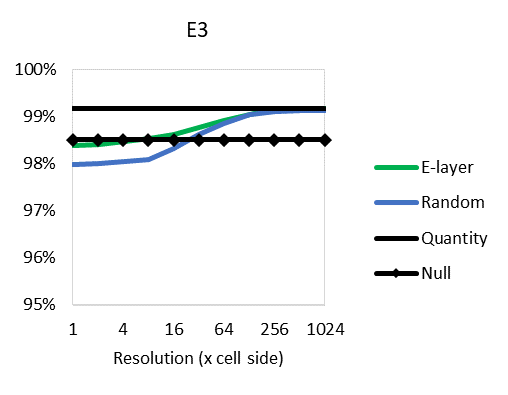
Figure 36: (left) percent correct between the reference map of 2015 vs. three other maps (a) null map, (b) E3-predicted map of 2015 and (c) random map; (right) percent correct between the reference map of 2015 vs. three other maps (a) null map, (b) E3-predicted map of 2015 and (c) random map.
Figure 35 and Figure 36 could be considered ‘concluding graphs’ and show the percent correct of E0, E1, E2 and E3, as compared to a random map with the same class sizes and the null map. What all graphs show, and both the components of agreement and disagreement and three-map comparison illustrated that as the resolution becomes coarser, the agreement becomes higher. If the quantity and allocation disagreement is considered, as shown in Figure 28, the graphs depict that the allocation disagreement resolved completely at coarser resolutions, given the quantity disagreement. Figure 28 already showed that most of the allocation disagreement was due to a near location disagreement. Figure 35 and Figure 36 emphasize this and show how this affected the overall agreement between the observed map of 2015 and the predicted maps at various resolutions. It is important to note that a similar trend can be observed for the random map, as it too resolved the allocation disagreement. As previously stated, E2 and E3 were able to achieve a FOM of over 40% at a resolution of 128 times the cell side. However at this spatial resolution the E2 and E3 were not able to outperform the random map, as shown in Figure 35 and Figure 36. There seems to be a specific range at which the map outperformed the null map and the random map, between 8 and 64 times the spatial resolution. At 8 times the cell side, E2 and E3 were only slightly more accurate, and at 64 times the cell side, the random map is almost as accurate as E3. Therefore, the optimal spatial resolution for E3 seems to be either 16 or 32 given the original cell size of 30 m, based on a base 2-logaritmic scale and the geometric progression algorithm that was used for coarsening the resolution. At a resolution of 16 and 32, the FOM rises to respectively, 28% and 30% and E2 and E3.
All excluded layers performed better than their random counterpart. However, as can clearly be seen, the E0 standard excluded layer has a much lower percent correct than the null map has at its finest resolution. Also, it does not exceed the null map accuracy at any resolution. Consequently, this implies that having a map of 2006, is a better predictor of future urban growth up to 2015 than E0. The E1 excluded layer also performed below the null map, albeit much better than E0. In both cases the excluded layers overestimated the amount of urban growth, thus resulting in a higher quantity disagreement, as was shown in Figure 28. Only the two MCE excluded layers that included spatial policies, E2 and E3, were able to achieve higher accuracy than the null map, both surpass the null map at a resolution of approximately eight times the cell side length, hence, at a resolution coarser than eight times the cell side length, or roughly 240 m, E2 and E3 achieved higher accuracy than the null map. What this shows is that none of the excluded layers are able to perform better than the null map at the finest resolution. Further, it suggests that in this study, coarsening the resolution is a necessary step to increase the accuracy and add value to the prediction maps.
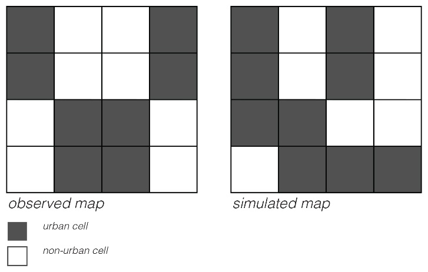
Figure 37: Visualization of disagreement at coarser scales.
To elaborate this concept of coarsening the spatial resolutions and how it the allocation difference, Figure 37 is used. It portrays an observed map and a simulated map of the same spatial extent, both four by four cells. The observed map contains eight urban cells and eight non-urban cells, the simulated map contains nine urban cells and seven non-urban cells. Imagine a pixel-by-pixel comparison is made of these two maps, the quantity disagreement would be one cell or 0.06 and the allocation disagreement would be six cells or 0.38, given the class size. Therefore, the agreement would be 9 out of 16 cells or 0.56. If the resolution of the maps were coarsened by four times the cell side length, the entire map would become one pixel. Subsequently, with fuzzy membership, the observed map would be a fuzzy member of urban by 0.5 and non-urban by 0.5, and the simulated map would become a fuzzy member of urban by 0.56 and non-urban by 0.44. Therefore, at this coarser resolution the agreement between the two maps would be 0.94, the remaining 0.06 is due to the quantity disagreement. This shows that the quantity disagreement does not resolve at coarser resolutions and the allocation disagreement does, given the class sizes. A similar situation occurs in Figure 38.
Figure 36 illustrates that between a spatial resolutions of 8 to 64 times the cell side, E3 is more accurate than both the random and null map. As previously stated, the optimal spatial resolution for E3 seems to be either 16 or 32 given the original cell size of 30 m, based on a base 2-logaritmic scale and the geometric progression algorithm that was used for coarsening the resolution. Of those two, 16 times the cell side is the finer resolution, thus this was used. Figure 38 displays the results of E3 mapped at the resolution of 16 times the cell side, or roughly 480 m. The maps on the right still disagree to a certain extent. Conversely, it can be seen that in the more rural areas the maps are fairly similar. However, the maps on the right still show some areas, ‘bright white’ pixels, that the prediction was not able to forecast, even at a coarser scale. So, the question becomes, what kind of areas are these ‘bright white spots’?
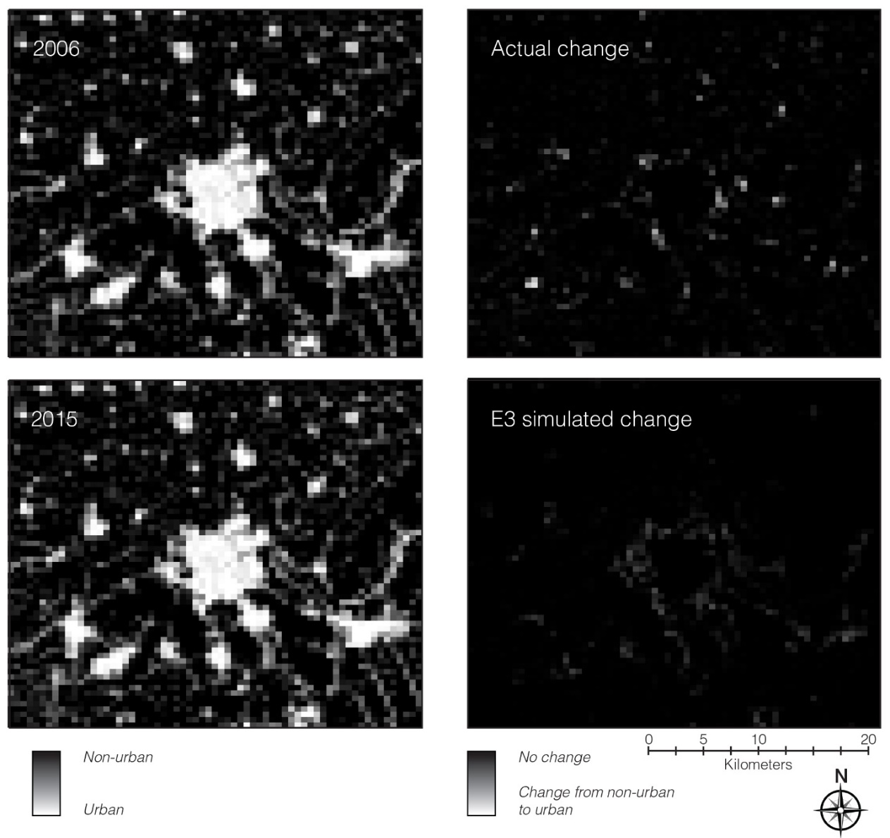
Figure 38: Shows the change from non-urban to urban at a 16 times coarser resolution.
Figure 39 shows the quantity disagreement between the E3 predicted map of 2015 and the observed map of 2015. It shows a sequence wherein the study area is disaggregated, thus it narrows down to the areas that have the highest quantity disagreement, essentially those ‘bright white’ areas. The images are called ‘blocks’ and are comprised of pixels, they show the total quantity disagreement across all pixels in one block. A block in this context is referring to the amount of groups the pixels were aggregated into, by dividing the study area into equal-sized groups. The top 5 ‘mismatch’ shows the numerical disagreement in the areas with the highest disagreement, which accounts for 20% of the total quantity disagreement. With the r2-X-mean and r2-Y-mean disagreement in mind of the calibration phase, the ‘4 blocks’ does not show a large disagreement, however, the ‘16 blocks’ does. In fact, the Top 5 ‘mismatch’ clearly shows what area has the high disagreement, namely -814 pixels. Interestingly enough, each of the top 5 is related to underestimating urban growth, hence the ‘-‘, and the first area to overestimate was ninth on that list, with 168 pixels. Although, the maps do not explicitly portray this, most of the top overestimating areas touch the border of the city of Groningen, the main city in the study area.
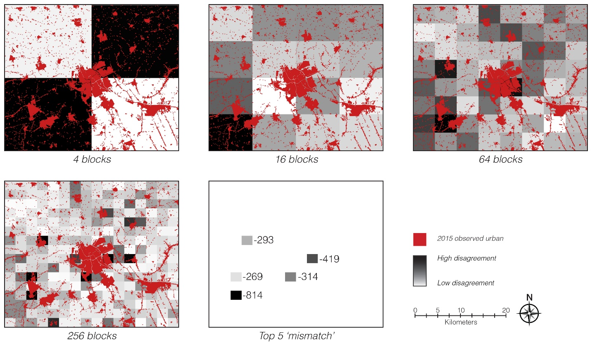
Figure 39: Visualization of the quantity disagreement between E3 predicted map and the observed map of 2015.
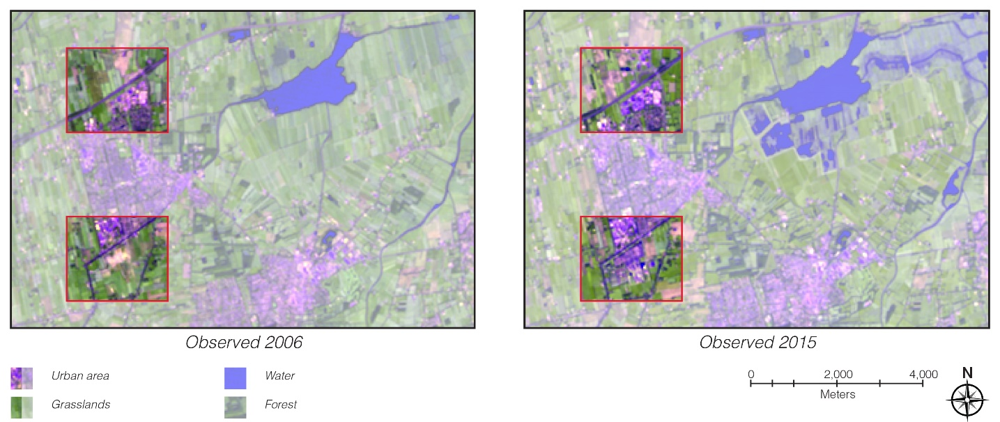
Figure 40: Two maps zoomed in on two ‘mismatch’ areas: (left) the observed map of 2006 and (right) the observed map of 2015.
Figure 40 zoomed in on two areas, as defined by the ‘256 blocks’ map in Figure 39. The northern area delineated by red underestimated urban growth by 269 pixels (242,100 m2), and the southern area delineated by red underestimated urban growth by 814 pixels (732,600 m2). The background is the LS5 for 2006 and the LS8 for 2015 as used in this study, hence the resolution (30 m) is the same. Due to the band combination used here, the urban area becomes pink/purple and rangelands becomes green. The reason to zoom in on these two areas is to emphasize what is happening in the ‘bright white’ areas and why SLEUTH is not able to capture this growth under these conditions.
As can be seen, especially in the southern area, is that between 2006 and 2015 a new neighborhood was built. With the SLEUTH mechanism in mind from section 2.3, what would SLEUTH be able to predict in this area in nine years? The most growth comes from: diffusion, breed and spread growth. Based on Equation 4 in section 3.4 and based on Appendix D, diffusion was set at 76, therefore, each year SLEUTH would attempt randomly select 217 cells to urbanize across the entire study area. The study area contains 1,312,500 cells, even the southern delineated area, one of 256 blocks, contains more than 5,000 cells, and the newly constructed neighbor is approximately 750 cells. The breed mechanism is entirely dependent on diffusion, as it only grows around the cell urbanized from diffusive growth. What are the odds that these two growth mechanisms would correctly urbanize cells in this particular area? So, it comes down to spread. Spread will not be able to fill up that area within nine time steps, from 2006 to 2015, as it only urbanizes in a neighborhood of 3 by 3. In a close to perfect simulation, this would presumably still take SLEUTH 20 to 25 years, not accounting for slope resistance or the excluded layer.
The follow-up question becomes, why were these areas constructed here? ‘Oostindie’ is a residential neighborhood and was constructed to the south of the city of Leek. The primary cause for the construction was the demand for extra housing up to the year 2020 due to the expected changes in the regional population, which is expressed in the regional policy by Groningen-Assen. It states that the region requires an additional 6,000 residential dwellings in a village-type of living environment. The area to the north is ‘Leeksterveld’, which is an industrial area, this too was driven by a regional demand and policy of Groningen-Assen. The reason why both developments were directed by the region, is due to the expected population decline in the rural areas and the expected population rise in the city of Groningen. To avoid competition amongst the villages and cities, since they all want their share of the population growth in the city of Groningen, regional policies are constructed wherein the demand for industrial and residential terrains is closely monitored and allocated to subregions. The reason why those specific sites were chosen within the subregion, was largely due to land properties and whether the city of Leek was able to acquire those lands. Further, the proximity to the city and its facilities was an important factor for Oostindie, and the proximity to the highway exits, public transit stops and the availability of cycling paths, i.e. accessibility to the city of Leek and the region, for Leeksterveld (Gemeente Leek, 2007).
This example is paradigmatic for how the cities and villages grow in the study area. A large portion of the disagreement is due to areas such as these. Interestingly, as has been shown and suggested numerously, a coarser spatial resolution is capable of dealing with these areas. Although, as shown in Figure 38, these areas still exist, but are less pronounced. Furthermore, it also expressed the link to regional demands and changed in demographics that are important factors to urban development in the study area, implying the need for supplementary methods during model prediction such as model coupling.
5.3 Prediction
In this section the prediction results are shown, which are based on the best estimates of growth coefficient values, as shown in Appendix D. The study area was used for prediction under three scenarios: the S1 MCE excluded layer, the S2 MCE excluded layer including the policy of 2014, and the S3 MCE excluded layer including a nature preservation policy. The prediction time period is 30 years, from 2015 up to 2045.
Ordinarily, the default setting for prediction is that only cells are displayed that were urbanized more than 50% during accumulated MC iterations. However, using this data and comparing it on a pixel-by-pixel basis is impractical, and based on validation would presumably not add much value over a null map. Also, validation has shown that the optimal spatial resolution for E2 and E3 seems to be either 16 or 32 times the cell side, based on a base 2-logaritmic scale and the geometric progression algorithm that was used for coarsening the resolution. Therefore, to handle fuzzy membership at coarser resolutions, a geometric progression procedure was used, as given by Pontius et al. (2004) and Pontius et al. (2011). The observed map of 2015 was subtracted from predicted map of 2045, to come to a map showing the predicted change.Figure 42, Figure 43 and Figure 44 show the prediction results of the three scenarios: S1, S2 and S3. Figure 41 shows the amount of urban pixels forecasted under each scenario. Figure 45 shows the historical urban growth and the predicted maps of 2030 and 2045 for all three scenarios.
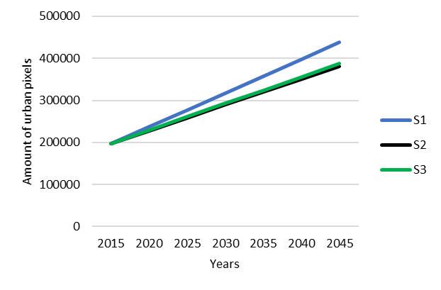
Figure 41: Graph showing the projected amount of urban pixels of 2045 for S1, S2 and S3.
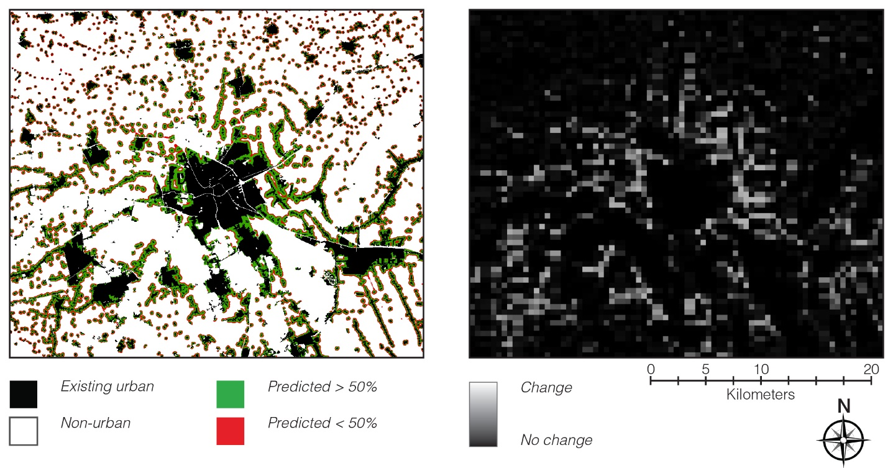
Figure 42: Prediction of 2045 using the S1 excluded layer.
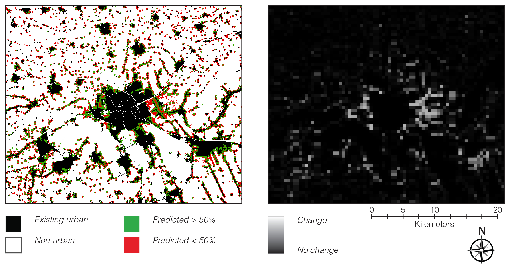
Figure 43: Prediction of 2045 using the S2 excluded layer.
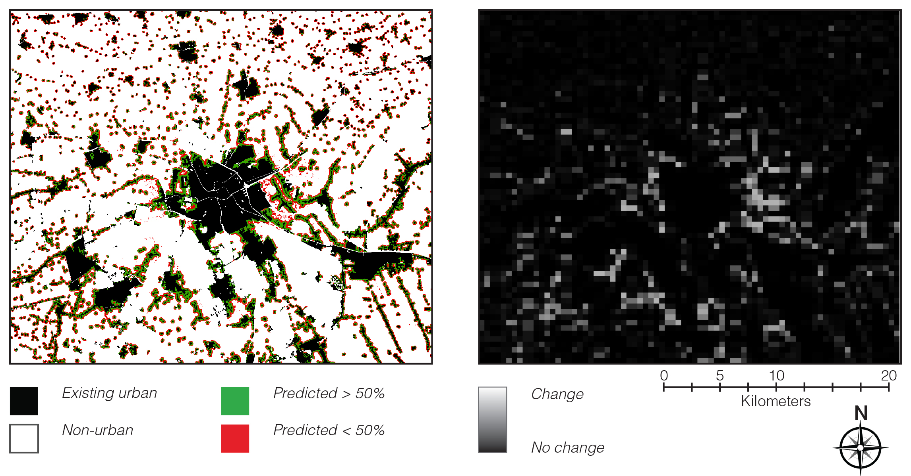
Figure 44: Prediction of 2045 using the S3 excluded layer.
The predictions show that S1 predicts the most urban change, and S2 the least. Figure 41 shows a linear growth trend, as the self-modification module was not invoked. In Figure 42, Figure 43 and Figure 44, it can clearly be seen that S2 and S3 contain much less growth in the rural areas than S1. In all three scenarios most of the urban growth occurs along the border of the city of Groningen. S1 predicts more growth in the smaller cities and villages in the south than S2 and S3. Instead, S2 shows more growth in the south-east corner and S3 more directly south and south-west of the city of Groningen. S3 is based on a nature preservation policy, which did not define all the areas in this study area. Hence, in the S3 excluded layer not all areas were defined by the policy layer, some were neutral and only subject to the MCE factors. In the map this results in more urban growth in S3 than S2. Further, the maps have similarities. For example, all three predict urban growth directly east and west of Groningen, admitting, more noticeable and more clearly delineated in S2 and S3.
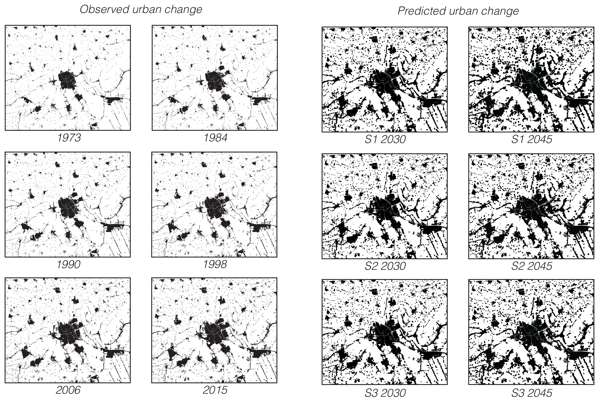
Figure 45: Visualization of the historical urban growth and the predicted urban growth of S1, S2 and S3.
First and foremost, these predictions ought to be put into perspective. During verification and transformation of input data, various accuracy assessments were made. The most important one is the accuracy of the land use classification, which showed that the accuracy was between 93% and 95%. Prior to calibration the data already contained various uncertainties. Even though it is difficult to identify where these uncertainties are located and, if and how they evolve during calibration, it is good to consider the accuracy of the input data.
During validation, E2 and E3 were the best predictors of urban change out of the four excluded layers used in this study. For none of the excluded layers, the amount of correctly predicted change was larger than the sum of the various types of error, i.e. 50%. In fact, the highest overall FOM is only 25%. Even though, Figure 36 showed that E2 and E3 were able predict more accurately than the null map at a resolution of 8 times the cell side, the FOM is still mediocre at best. Figure 30 showed that E2 and E3 were able to cope with the rural areas in the study area with sufficient accuracy. However, they failed at predicting the larger planned urban areas, which is perhaps not that surprising.
Further, what has not been researched during validation is the temporal accuracy. As stated in Chapter 1, the drawbacks of this type of research approach was the use of RS and MCE and that data acquisition would be time-consuming, thus only a static temporal and spatial change between defined intervals was recorded. This emphasizes the difficulties in conducting a temporal sensitivity analysis of the simulation results and the difficulties in underpinning the growth process in the study area. Temporal comparison as suggested by Wu et al. (2009) and as done by Chaudhuri and Clarke (2014), is important to a validation procedure. Comparing the simulation results over various time periods provides insight into the temporal accuracy of the model application. What other research has shown is that prediction beyond 10 years becomes increasingly uncertain, but could stay well within acceptable norms (Chaudhuri & Clarke, 2014).The validation time period was nine years. In those nine years, as shown in previous sections, some predictions already became mediocre (E2 and E3) and other questionable (E1). How this accuracy would evolve beyond nine years is uncertain, but the trend is that the accuracy declines as the predication time period increases.
Given all this information, E2 and E3 were better at predicting the right amount of urban pixels, and E1 was overestimating this amount. For E2 and E3 the largest error in the three-map comparison was due to the observed change predicted as persistence, and for E1 this was the error due to persistence predicted as change. Also, all three layers showed sensitivity to the spatial resolution, hence a prediction at the finest resolution would probably not be a good predictor of urban change. Lastly, none of the excluded layers were capable of coping with the planned urban areas that appeared frequently across the study area.
Withal, if validation is a predictor of the accuracy of S1, S2 and S3, then S1 would have overestimate the urban growth, and S2 and S3 would be closer to the true amount of urban pixels. S1 would probably have the lowest accuracy, and S2 and S3, at this spatial resolution, could potentially achieve higher accuracy than a null map. All three predictions would have over- or underestimated the amount of clusters, implying they would not have captured the dispersed character of the study area. Implying, that S2 and S3 may have some value with regard to forecasting, whilst bearing in mind that during validation similar maps only achieved a FOM of 28% at a spatial resolution 16 times the cell side, and would probably much lower in 2030 and 2045.
5.4 Section Conclusions
In this chapter, the calibration, validation and prediction results were discussed. Section 5.1 focused on calibration. It showed poor calibration results for E0, questionable calibration results for E1, and good calibration results of E2 and E3. Since it is difficult to evaluate the goodness of fit based on one composite metric, it is important to examine the constituent metrics of OSM. What this depicted, is that the r2-X-mean and r2-Y-mean were two metrics that were difficult to fit under these conditions. Most of the other constituent metrics were above 0.9, indicating the success of calibration.
Furthermore, calibration was a time-consuming process in this study, due to the calibration of auxiliary coefficient values, the self-modification parameters (which was unsuccessful), the weights and fuzzy membership function of the MCE factor. The calibration related to the MCE factors was especially time-consuming, since the effects of the factors had to be tested by trial and error. A variety of sets of parameter values needed to be tested with coarse calibration, thus rescaling the input data to a 60 m (625 by 525 pixels) and 150 m (250 by 210 pixels) spatial resolution, was found helpful since it required less computer power. Scale influences the growth coefficients differently in the model (Jantz & Goetz, 2005; Candau, 2002; Dietzel & Clarke, 2004b), therefore to avoid inaccuracies resulting from cell size sensitivity, the highest spatial resolution of 30 m still as tested with the various sets of parameter values.
The choice of the goodness of fit statistics was crucial to the outcome of calibration. Due to the amount of successful calibrations with the OSM, this statistic was primarily used (Onsted & Chowdhury, 2014; Chaudhuri & Clarke, 2013a; Bihamta, et al., 2015; Mahiny & Clarke, 2012). However, Jantz et al. (2010) noted the potential difficulty in evaluating the fit of the model using a composite score, thus the OSM was complemented the PFD, CFD and EFD, which were used to evaluate the best-fit scores in terms of over- and underestimating. Neither the r2-statistics nor the OSM account for over- and underestimating and most of the r2-statistics include persistence, which makes the OSM and r2-statisics difficult to interpret and sometimes misleading. Two additional approaches were used for this: additional testing with 25 MC iterations (Goldstein, Dietzel, & Clarke, 2005; Jantz, et al., 2010; Clarke, et al., 1996), and visual interpretation. Once the OSM scores were listed to form a top 25, the top 5 results were tested by using 25 MC iterations. Ordinarily, after testing the OSM scores would be lower, and of these five, the best fitting sets of parameter values could be used to narrow down the growth coefficient. After the 25 MC iterations were performed, the model was set to produce an accumulated growth image, which was a useful tool for visual interpretation. For example, during early testing and calibration, a set of parameter values produced high OSM, PFD, CFD and EFD results, based on statistics this calibration was found successful. After testing with 25 MC, the image experienced close to no growth, hence the calibration was in fact unsuccessful. This type of procedure was found to be a robust calibration process that reduced spatial variability as well as successfully interpreted the goodness of fit results.
Section 5.2 discussed the validation. In order to provide assessments of accuracy beyond the goodness of fit measures calculated by SLEUTH, an additional accuracy assessment was performed. The techniques used in this study were: the budget of components of agreement and disagreement, three-map comparison and multiple resolution comparison. They were used to (a) quantify the budgets of error, (b) compare to a null map, (c), compare to a random map, and (d) perform the analyses at multiple scales. Intuitively, these three techniques are more easily understood than statistics that covers the entire study area, such as r2-statistics or OSM from calibration.
After the best-fit parameters were identified, the model was initialized in 2006 and run to predict the situation of 2015 with 100 Monte Carlo iterations. The quantity and allocation disagreement between the observed map of 2015 and the predicted map of 2015 showed that E0 performed the worst, E1 mediocre and E2 and E3 performed similarly and achieved the highest accuracy, solely based on the quantity and allocation disagreement. In all layers most of the allocation disagreement is resolved at a resolution of 64 times the original pixel side. The three-map comparison showed that all excluded layers achieved higher fit-score than their random counterpart, and only E1, E2 and E3 achieved higher fit-scores than the null map. For none of the excluded layers, the amount of correctly predicted change is larger than the sum of the various types of error, i.e. a FOM of 50%. In fact, the highest overall FOM was only 25%, showing SLEUTH had difficulties in accurately simulating under these circumstances. Although, at a resolution of 16 or 32 times the cell side, E2 and E3 achieved a FOM over up to 30%, given the original cell size of 30 m. Therefore, based on validation and compared to the FOM of other applications (Pontius, et al., 2008), E2 and E3 could be classified as reasonably accurate, E0 had a low accuracy and E1 had mediocre accuracy at best.
Further, based on visual interpretation of the three-map comparison, E0 produced unrealistic results as each hamlet to the larger cities, all experienced equal growth. Whilst in reality, these hamlets have had little to no growth. A similar situation occurred in E1, where there was too much growth predicted in the rural areas, albeit much less than in E0. E2 and E3 performed rather well in the rural areas, which can be attributed to the policy layers that were included. All predicted maps were unable to predict the planned urban areas that are frequently found in the study area. Surprisingly, the urban expansion areas in the policy layers, areas that encouraged urbanization, did not influence the model as much as expected.
The multiple resolution comparison method showed that the allocation disagreement resolved at coarser spatial resolutions and that only E2 and E3 were able to achieve higher accuracy than the null map. Both surpassed the null map at a resolution of approximately eight times the cell side length.
Afterwards, an in-depth analysis was conducted to a paradigmatic error that occurred throughout the prediction maps. A large portion of the disagreement is due to areas that were planned based on local policies. Interestingly, as has been suggested numerously, a coarser spatial resolution was found capable of dealing with these areas to some extent. This paradigmatic error also suggested that other factors may be important for this study area, such as a regional housing and real-estate demand, which are allocated to subregions based on regional policies, implying the need for supplementary methods during model prediction such as model coupling.
6. Conclusions
In this chapter the modelling results and findings of this research will be presented. The conclusion will be bestowed as the answer to the main research question, and rejection or confirmation of its hypotheses as described in Chapter 1. Therefrom, the outcomes of the model will be concluded and the practicality and usefulness of the model will be discussed. Section 6.2 discusses three additional topics: the policy maps, the self-modification module and the spatial resolution.
6.1 Conclusions
From the main research question…
The research objectives are briefly mentioned again to discuss what this research had contributed. Which goals were accomplished, and to what extent this research has added value to the field of urban modelling and to local decision-makers. This study reports on three main research objectives: (a) calibrating and validating a UGM to suit the Groningen’s context; (b) simulating and understanding the urban growth patterns produced by the calibration phase; and (c) predicting the future urban dynamics, spatially and temporally, using Groningen. Accordingly, this led to the following research question: “What will be the land cover change of Groningen in 2045 compared to 2015 based on three different scenarios, to explore Groningen’s future urban dynamics?”
The concise answer to the main research question is: it is unclear, since none of the excluded layers were capable of capturing the dispersed urban growth patterns in the study area during calibration and validation. Hence, the assumption was made that the scenarios used for predicting, would not be able to produce accurate urban growth patterns, as these were based on the same principles. In that light, three remarks ought to be made.
(a) At coarser spatial resolutions, SLEUTH was better capable of coping with various uncertainties and produced more accurate validation results. It has been suggested that, given the original cell size of 30 m, the optimal spatial resolution for this study area, under these conditions, would be either 16 or 32 times the cell side (480 m or 960 m). At these resolutions, the excluded layers that included policy maps in the MCE (E2 and E3) were able to achieve higher accuracy than both a random map and a null map (i.e. no change). However, for none of the excluded layers, the amount of correctly predicted change was larger than the sum of the various types of error, i.e. a figure of merit (FOM) of 50% (0% there being no overlap and 100% equals a perfect match). In fact, the highest FOM value was only 25%. At the coarser resolutions of 16 and 32 times the cell side, this could rise up to approximately 30% for both E2 and E3. Pontius et al. (2008) performed a similar analysis of thirteen studies based on multiple urban modelling application by others. Even though a comparison to that research is difficult, as the studies used different spatial resolutions, some included land use categories and the simulation time period was different. Nonetheless, E2 and E3 would score mediocre compared to those studies, based on the FOM. This does not explain if the results of E2 and E3 are fitting or not, it merely emphasizes that other model applications with similar FOM values, were found sufficiently accurate by the model-users.
(b) As stated in Chapter 1, the drawbacks of the approach adopted by this research, i.e. using remote sensing for data acquisition and a multicriteria evaluation method, are that data acquisition and calibration were time-consuming and only a static temporal and spatial change between defined intervals was recorded. Given this, a temporal sensitivity analysis during validation was not conducted, therefore simulation and prediction results could not be put into a temporal perspective regarding accuracy. This emphasizes the difficulties in properly assessing the accuracy of the prediction maps. From 2006 to 2015, in nine years during validation, the FOM accuracy declined to approximately 30%, under the optimal conditions, thus suggesting the FOM accuracy declined rapidly in just nine years. What other research has shown is that prediction beyond 10 years becomes increasingly uncertain (Chaudhuri & Clarke, 2014). The decline in accuracy in the first nine years emphasizes the need for a quantitative analysis regarding the temporal accuracy, especially when the prediction maps are used for supporting local planners and long-term decision-making.
(c) As previously mentioned, the excluded layers E2 and E3 included policy maps in the MCE, in addition to other factors of the MCE, such as proximity to public facilities, soil type and proximity to highway exits. E0 only comprised of constraints, such as water bodies and natural areas and E1 consisted of an MCE without policy maps. Onsted and Chowdhury (2014) showed that it is feasible to include policy maps and may produce better results. This research produced a similar result, since E2 and E3 achieved the highest goodness of fit score, and the highest accuracy during validation. Notwithstanding, it can be a dangerous practice to mask out areas or restrict urbanization in zones (Akın, et al., 2014; Pontius, et al., 2004), as this could lead to bias when modelling or forecasting. By restricting or encouraging urbanization in particular zones that are based on policies for future urban development, the model would be biased into urbanizing those areas first and achieving higher goodness of fit results. In Chapter 1 it was stated that the societal relevance comes from providing insight into future urban dynamics of Groningen, which is of great importance to local urban planners and decision-makers. Notwithstanding, if the prediction maps E2 and E3 are based on the policies of said local decision-makers, given the accuracy concerns as expressed previously, the added value of these predictions becomes limited.
Given these insights, to address the second main objective: “understanding the urban growth patterns”. The historical overview in section 3.1, the goodness of fit metrics, visual interpretation, the excluded layer and an in-depth analysis of two areas in section 5.2, provided some insight into understanding the growth patterns in Groningen. The MCE showed that the policy maps, the proximity to the highway exits, proximity to regional public facilities, proximity to regional shops and restaurants, proximity to regional industrial sites and to some extent the proximity to the intercity train station, were meaningful factors in the MCE. In addition, excluding the water bodies and rivers, and the natural areas, were considered decisive constraints. The validation showed that the rural areas did not experience much growth and most growth was adjacent to the larger villages and cities. Furthermore, an in-depth analysis was conducted and a large amount of urban growth occurred in planned areas. These examples were considered paradigmatic for how the cities and villages grow in the study area, which SLEUTH was not able to capture during simulation.
Withal, in order to draw further conclusions on the urban growth process of the study area, further studies would be required. For example, Herold et al. (2003) proposed to use pattern analysis to research the urban patterns and structure, which others have used (Wu, et al., 2009; Sakieh, et al., 2015b; Mahiny & Clarke, 2012; Chaudhuri & Clarke, 2013a; Goldstein, et al. 2004). These statistics measure the entire area and are thus generalized over the entire area. Therefore, a qualitative approach in addition to such quantitative analyses seems desirable, as has been argued by Sitte (1889) over a century ago, e.g. by conducting in-depth analyses of paradigmatic errors in the study area.
… to a new research question
Given the aforementioned concerns, the main research question should become: “Why is SLEUTH not capable of simulating the urban dynamics in Groningen?” This question should be put into perspective by considering the scientific relevance of this research, which was argued to come from applying SLEUTH to the Dutch context and assessing the feasibility of applying SLEUTH to Groningen, an area that experience modest absolute growth rates and adopted a compact city policy. This was done with an integrated application of: Geographical Information Systems (GIS), remote sensing (RS), multicriteria evaluation (MCE) and an urban growth model (UGM). Hence, the hypotheses were that: (a) it is possible to calibrate a UGM to Groningen’s context by combining separate tools (i.e. GIS, RS, MCE and UGM) and forecast future urban dynamics under different planning scenarios that fit into the context of Groningen, and (b) that other relevant factors that influence the urban development in Groningen could be incorporated in the UGM with an urbanization-suitability layer based on an MCE.
(a) Firstly, the integrated application of GIS, RS, MCE and SLEUTH, the UGM. GIS and RS, via Landsat data, was able to reveal the urban land cover and land use for the years 1973, 1984, 1990, 1998, 2006 and 2015, which in itself is a valuable resource. Both calibration and validation, showed (much) higher goodness of fit and (much) higher accuracy for the excluded layers that incorporated an urbanization-suitability layer based on an MCE (E1, E2 and E3), as compared to the excluded layer that did not (E0). This illustrates that the integrated approach of GIS, RS, MCE and SLEUTH was successful and that SLEUTH can be improved by including an MCE. It could be argued that an MCE or a different method to include an assessment of the urban suitability, is in fact necessary to capture the urban growth patterns of this study area. To come back to the hypotheses, this research shows that it is possible to include other relevant factors that influence the urban development in Groningen, by using an urbanization-suitability layer based on an MCE. Conversely, this research has not definitively shown that it is possible to calibrate a UGM to Groningen using these tools due to the mediocre accuracy results. Perhaps, there are other relevant factor that could be included in the MCE, and the fuzzy membership definition and factor weights could be further explored. Whether this would improve the simulation with SLEUTH, ought to be approached with certain skepticism.
(b) Secondly, as has been hinted in section 2.4 and section 5.2, SLEUTH lacks certain mechanics as compared to other urban models. As portrayed in the in-depth analysis in section 5.2, SLEUTH failed to predict urban change in areas that were planned, which were considered paradigmatic to the urban growth patterns in Groningen. This analysis showed that a coarser spatial resolution is capable of dealing with these areas. It also expressed the link to regional demands regarding real-estate and changes in demographics that are important factors to urban development in the study area, implying the need for supplementary methods for a successful prediction.
Other have attempted to include other relevant factors via the self-modification module to include socio-economic or demographic factors Liu et al. (2012) or incorporated demographics and employment to the excluded layer (Jantz, et al., 2014). However, including dynamic factors into static modules seems ineffective. For example, there can only be one excluded layer in SLEUTH. Ordinarily this layer aligns with the start date and subsequently SLEUTH has no mechanism to update the values in this layer, and probably should not either. The excluded layer ought to be used for exogenous, static or slowly changing factors, such as soil type or elevation. Other urban models do include tools to include dynamic factors in a type of excluded layer. Dinamica EGO differentiates between a dynamic layer that is based on endogenous variables and can update itself throughout the simulation period, and a static layer that consists of static or slowly changing factors. Or Metronamica where it is possible to add a temporal component for up to three time periods, which could be seen as the equivalent of having three excluded layer for three predefined years. UrbanSim has the option to include user-specific events at specific times. Other options would be to couple SLEUTH with models that can forecast socio-economic or demographic variables, a similar approach to Metronamica and CLUE, or activity-based models that can simulate the movement of the population. In fact, it has been argued that it would be preferred to use submodels, such as Rienow and Goetzke (2015) and Silva et al. (2008), to address complex issues than to include extra MCE factors in the excluded layer (Chaudhuri & Clarke, 2013a), and presumably, than to insert additional factors in the self-modification module.
Additionally, the study area could benefit from a multi-scale or multi-resolution approach, such as applied in Metronamica or CLUE. As has been argued numerously, SLEUTH was found able to provide good expression of neighborhood relationship at coarser scales. The in-depth analysis in section 5.2 illustrated that the regional demand in the study area is distributed over multiple subregions, based on various criteria. SLEUTH could benefit from modelling approaches such as Metronamica, which incorporates a dynamic gravity based model based on various variables which account for regional differences resulting in certain regions being more attractive than others. Or CLUE, which uses two resolution scales, a coarse and fine scale. The coarse scale is used for general trends and relationships between land use and its driving factors, whilst the fine scale is to identify variability within regions by fuzzy membership.
Withal, this research showed that including an urbanization-suitability layer in SLEUTH can improve modelling results in this study area. However, critical remarks ought to be made as to what factors are appropriate to include in an urbanization-suitability layer. Perhaps the right approach would be to couple SLEUTH to other models, or adopt a different urban model that holds more sophisticated mechanics.
6.2 Discussions
In this section three discussion points are elaborated. Which are: the inclusion of policy as a factor in the MCE; the calibration of the self-modification module and the spatial resolution.
Policy maps
In Chapter 1, additional research aims were to apply SLEUTH to a dispersed urban area that is relatively small with a slow absolute urban growth compared to study areas SLEUTH is commonly applied to (García, et al., 2012), and attempted to assess the feasibility of applying SLEUTH to a city with a clear spatial policy to remain compact and minimize urban growth. This was attempted by using an MCE based on an urbanization-suitability layer as an excluded layer. It becomes evident that none of the excluded layers were able to capture the actual urban dynamics that have taken place in the study area. As none of the excluded layers seem to be able to capture the dispersed urban growth pattern of the study area. The core of the issue is that the growth coefficient values are uniformly applied over the entire study area, even though these values are not appropriate to capture the urban dynamics in the rural areas. Due to the mechanics in SLEUTH and the excluded layer, the study area is not discerned into regions that experience similar types of urban growth, hence its inability to capture the urban dynamics. In reality the urban growth was focused around Groningen and not dispersed equally across the entire study area.
In an attempt to solve this, the excluded layer was based on an urbanization-suitability layer. The MCE achieved higher fit-scores, as becomes evident by comparing E0 to E1. However, it was still not able to properly discern the study area into regions that experienced the same type of growth. One way to include these distinct zones and allocate appropriate amounts of growth to these areas, would be by including policy maps in the suitability layer. Goetz, Jantz, Bockstael and Towe (2007) have pointed to the lack of policy variables in SLEUTH. Poelmans and Van Rompaey (2009) have suggested that it is impossible to take in local policy and other local conditions during the modelling efforts. Withal, Onsted and Chowdhury (2014) showed that it is feasible and may produce better results. It can be a dangerous practice to mask out areas or restrict urbanization in zones (Akın, et al., 2014; Pontius, et al., 2004), which could lead to bias when modelling or forecasting. Nonetheless, the opposite could also be argued, that policy is a decisive factor in the study area and that these zones should be included. In fact, the excluded layer may be the only way to incorporate policies in SLEUTH (Chaudhuri & Clarke, 2013a).
The calibration showed that including the policy layer had a positive effect on the goodness of fit, and the validation showed that these layers achieved higher accuracy scores. It was found that in this study, the areas marked as ‘urban expansion’, areas where urbanization is encouraged, did not affect the modelling results as much as expected and resisting urbanization in the rural areas, did. Considering the bias of masking and the policy layer that was included as an MCE factor, this study area seems to require zoning. Natural areas and agricultural lands ought to be separated from urban lands, since the two experienced different growth patterns. Whether this should be based on policy layers or explicitly defined by other relevant factors in an MCE, is the question. There ought to be a boundary between zones, whether this is a discrete boundary or a fuzzy boundary, presumably both could work. Besides adjusting the MCE, it could also be achieved by changing the spatial extent of the study area. Either by zooming in on a specific area, or masking areas that are too different in terms of urban growth patterns.
The primary cause, and why it was found that policy areas needed to be included, was due to small clusters experiencing the same growth as large cities, i.e. uniformly applied growth rules. In essence, this comes down to (a) hierarchy and (b) scale, or in other words Zipf’s ranksize rule (Batty, 2005). This rule is based on the notion that the size of cities scales according to the size of the largest city and is consistent with the internal physical morphology of cities as evidenced in their fractal structure (Batty & Longley, 1994). With this power law, it could be possible to rank the clusters in a hierarchy and subsequently scale the amount of growth in relation to the largest cluster, presumably the city of Groningen, and scale the amount of growth that can be invoked by pixels that are a member of smaller cluster.
Self-modification
When reading other articles, most if not all, mention the self-modification module of SLEUTH. This optional phase is often recognized as an important component of SLEUTH, as it would allow SLEUTH to simulate dynamic growth rates over time, so that growth rates replicate the typical S-curve of urbanization and population growth (Silva & Clarke, 2002). The original application of SLEUTH wherein self-modification was calibrated to the San Francisco Bay Area by Clarke et al. (1997). The default self-modification values are inherited from this application, of an earlier SLEUTH version applied to a different study area (Clarke, et al., 1997). Additionally, it may be likely that due to changes made in the transition rules in the newer versions of SLEUTH and SLEUTH-3r, the default self-modification values may not always be fitting. Candau (2002) reports extensively on the self-modification module, all its different parameters and what they do. She suggests that the self-modification module ought to have its own calibration procedure, as at that point it did not. Therefrom, self-modification and calibration are only briefly mentioned, e.g. Jantz et al. (2014) and Liu et al. (2012) who both altered the parameter settings in their attempt to improve modelling results. Liu et al. (2012) state: “These additional parameters also contribute to the model accuracy, and the significance of their influence, determine that a method to calibrate them is required”.
Chapter 4 stated that the second phase of pre-calibration was to determine the appropriate values for the self-modification module. This calibration was particularly difficult for the study area. The default values would put the study area in a constant boom-cycle as the urban growth rate would always exceed the threshold value. Therefore, under these conditions, due to the lack of a calibration procedure and lack of explicit literature that addresses this issue, the calibration of the self-modification was unsuccessful. Whilst self-modification adds an important dynamic component to SLEUTH, it also introduces another layer of complexity during calibration. A layer of complexity that is often overlooked. As has been stated by others, this module requires an automated calibration procedure. Whether current fit-statistics are appropriate for evaluating the goodness of fit of the self-modification module, and whether this calibration should be executed before or after estimates of growth coefficient values are produced, ought to be researched. Using the default values is presumably not a valid procedure for the self-modification module, and neither is arbitrarily choosing parameter settings.
Spatial resolution
Silva and Clarke (2002) compared a SLEUTH application to Porto and to Lisbon and noticed better calibration results in Porto. They noted that this may be due to the spatial resolution in the data, since Porto used coarser input data than Lisbon. “… the question should be: by increasing the spatial resolution of the data in the case of Porto, could it be easier to capture detail and therefore narrow down the values to the local characteristics?” (p. 546). Even though, they discussed the calibration procedure, a similar point could be made in general about SLEUTH. Does coarser input data procedure higher fit results?
This research shows, for this study area, that the various excluded layers higher accuracy at coarser resolutions. This is inevitable, as allocation disagreement resolves at coarser resolutions. Accordingly, E2 and E3 were able to outperform the null map, both surpass the null map at a resolution of approximately eight times the cell side length. However, this result should not alarm the model-user, as it merely indicates that resolution of the input data is finer than SLEUTH’s ability to predict urban dynamics. Moreover, it also depends on the goal of the research. If the goal is to predict the urban dynamics at a coarser resolution, than these results may be acceptable. In this case, 16 or 132 times the length of the cell side, respectively, 480 m or 960 m. To support local planners and decision-makers operating on a spatial extent such as applied in this research, this could provide a rough possible indication of land cover change (Timmermans, 2003).
So, does this suggest that input data ought to be coarser? The key argument to be made here is that, this only occurred under specific conditions, i.e. the application of fuzzy set theory whilst coarsening the resolution. This led to more agreement between comparing clusters of cells as opposed to cell-by-cell comparison. Therefore, in this study, this became only possible due to the availability of finer data, whence the coarser data came from. Also, due to the stochastic mechanisms in SLEUTH, pixels are randomly selected during the various growth cycles. This is the case for all of the four growth types. Imagine an existing village observed urban growth shaped as a chessboard pattern, and SLEUTH would have predicted that same chessboard pattern during simulation, just one row or one column off. Validating the simulation results would produce zero percent agreement, whilst a human visually checking the data would be inclined to argue SLEUTH did an excellent job. The reason this happens could partly be attributed to SLEUTH’s stochastic mechanisms that is randomly selecting pixels to urbanize in the correct area, albeit on the wrong location. One way to deal with this is coarsening the spatial resolution via fuzzy set theory. Subsequently, the agreement would be perfect if the resolution would be two times the cell side length. However, if input data would have been coarser to begin with, additional coarsening would be required to resolve nearby allocation disagreement and the question becomes, does this coarser resolution fit within the research objectives, e.g. is it useable to support local planners and decision-makers?
Given all this, does this suggest that in this research the filtering of small urban clusters was a valid procedure, since at coarser resolution the disagreement caused by these pixels would be resolved? Again, this depends on the goal of the research. Presumably, local planners and decision-makers would not require to know about those individual pixels, or the urban change of the large farms or a few clustered houses. Moreover, this related to the schism between calibration and validation, as calibration is optimized before validating the simulation results, which should be seen as two distinct procedures. In this case, the filtered pixels could have drastically influenced the urban extent during calibration, since these pixels were often close to larger cities and villages. As these cities and villages expand horizontally, they would annex the individual pixels and small clusters, thus, producing different urban growth patterns due to the mechanism incorporated in SLEUTH. In that context, it could be argued that these individual pixels and small clusters are noise, thus filtering them was valid.
Bibliography
AHN. (2013). Actueel Hoogtebestand Nederland. Retrieved February 10, 2016, from Kwaliteitsdocument AHN2: http://www.ahn.nl/binaries/content/assets/hwh---ahn/common/wat+is+het+ahn/kwaliteitsdocument_ahn_versie_1_3.pdf
Akın, A., Clarke, K., & Berberoglu, S. (2014). The impact of historical exclusion on the calibration of the SLEUTH urban growth model. International Journal of Applied Earth Observation and Geoinformation, 27(Part B), 156-168. doi:10.1016/j.jag.2013.10.002
Alexander, C. (1964). Notes on the synthesis of form. Cambridge: Harvard University Press.
Alonso, J., & Lamata, M. (2006). Consistency in the analytical hierarchy process: a new approach. International Journal of Uncertainty, Fuzziness and Knowledge-Based Systems, 14(4), 445-459. doi:10.1142/S0218488506004114
Al-shalabi, M., Billa, L., Pradhan, B., Mansor, S., & Al-Sharif, A. (2013). Modelling urban growth evolution and land-use changes using GIS based cellular automata and SLEUTH models: the case of Sana's metropolitan city Yemen. Environmental Earth Sciences, 70(1), 425-437. doi:10.1007/s12665-012-2137-6
Alterra. (2006). Grondsoortenkaart. Retrieved February 11, 2016, from http://www.wageningenur.nl/nl/show/Grondsoortenkaart.htm
Alterra. (2012). BOFEK2012, de nieuwe, bodemfysische schematisatie van Nederland. Retrieved February 11, 2016, from content.alterra.wur.nl/Webdocs/PDFFiles/Alterrarapporten/AlterraRapport2387.pdf
Arentze, T., & Timmermans, H. (2000). ALBATROSS: a learning based transportation oriented simulation system. Retrieved November 12, 2015, from http://www.nctcog.org/trans/modeling/nextgeneration/Albatross.pdf.
Batty, M. (1976). Urban Modeling. Cambridge: Cambridge University Press. Retrieved July 7, 2015, from http://www.casa.ucl.ac.uk/urbanmodelling/UrbanModelling.pdf
Batty, M. (2005). Cities and complexity: understanding cities with cellular automata, agent-based models, and fractals. Cambridge: The M.I.T. Press.
Batty, M. (2009). Urban Modeling. Retrieved September 25, 2015, from Centre for Advanced Spatial Analysis (CASA): http://www.casa.ucl.ac.uk/rits/BATTY-Urban-Modelling-2009.pdf
Batty, M. (2014). The new science of cities. Cambridge: The M.I.T. Press.
Batty, M., & Longley, P. (1994). Fractal cities. London: Harcourt Brace & Company Publishers.
Batty, M., & Marshall, S. (2009). The evolution of cities: Geddes, Abercrombie and the new physicalism. The Planning Review, 80(6), 551-574. doi:10.3828/tpr.2009.12
Batty, M., & Xie, Y. (1994). From cells to cities. Environment and Planning B, 21(7), 31-48. doi:10.1068/b21S031
Batty, M., & Xie, Y. (1999). Self-organized criticality and urban development. Discrete Dynamics in Nature and Society, 3(2-3), 109-124. doi:10.1155/S1026022699000151
Benenson, I. (2007). Warning! The scale of land-use CA is changing! Computers, Environment, 31(2), 107-113. doi:10.1016/j.compenvurbsys.2007.01.001
Benenson, I., & Torrens, P. M. (2004). Geosimulation: Automata-based modeling of urban penomena. London: John WIley. doi:10.1002/0470020997
Benjamin, W. (1935). Paris. Die Hauptstadts des XIX. Jahrhunderts.
Bihamta, N., Soffianian, A., Fakheran, S., & Gholamalifard, M. (2015). Using the SLEUTH urban growth model to simulate future urban expansion of the Isfahan Metropolitan Area, Iran. Journal of the Indian Society of Remote Sensing, 43(2), 407-414. doi:10.1007/s12524-014-0402-8
Biron, D. (2004). Beter bouw- en woonrijp maken: een verkennend onderzoek naar het bouw- en woonrijp maken in de Nederlandse praktijk en de problematiek rondom wateroverlast op de bouwplaats. Retrieved May 25, 2016, from www.citg.tudelft.nl/fileadmin/Faculteit/CiTG/Over_de_faculteit/Afdelingen/Afdeling_watermanagement/Secties/waterhuishouding/Leerstoelen/Waterbeheer/onderzoek/Projects/Msc_Research/Completed/600_2000-2004/doc/BRM2004.pdf
Borzacchiello, M., Nijkamp, P., & Koomen, E. (2010). Accessibility and urban development: A grid-based comparative statistical analysis of Dutch cities. Environment and Planning B, 37(1), 148-169. doi:10.1068/b34126
Broitman, S., & Koomen, E. (2015). Residential density change: Densification and urban expansion. Computers, Environment and Urban Systems, 54, 32-46. doi:10.1016/j.compenvurbsys.2015.05.006
Bura, S., Guérin-Pace, F., Mathian, H., Pumain, D., & Sanders, L. (1996). Multi-agents system and the dynamics of a settlement system. Geographical Analysis, 28(2), 161-178. doi:10.1111/j.1538-4632.1996.tb00927.x
Burgess, E. (1924). The growth of the city: an Introduction to a research project. Publications of the American Sociological Society, 47-62. doi:10.1007/978-0-387-73412-5_5
Candau, J. (2002). Temporal calibration sensitivity of the SLEUTH urban growth model, master's thesis. Santa Barbara: Department of Geography, University of California.
CBS. (2008). Bestand Bodemgebruik Productomschrijving. Retrieved January 25, 2016, from https://www.cbs.nl/NR/rdonlyres/5B353A4E-6B56-4756-A19C-4BF6AA520C65/0/BestandBodemgebruikProductbeschrijving.pdf
CBS. (2016). StatLine. Retrieved January 7, 2016, from http://statline.cbs.nl/Statweb/
Chander, G., Markhem, B., & Helder, D. (2009). Summary of current radiometric calibration coefficients for Landsat MSS, TM, ETM+, and EO-1 ALI sensors. Remote Sensing of Environment, 113(5), 893-903. doi:10.1016/j.rse.2009.01.007
Chapman, C., & Fenyon, G. (Directors). (1963). Lewis Mumford on the City, Part 3: The City and Its Region [Motion Picture]. Retrieved March 12, 2016, from https://www.nfb.ca/film/lewis_mumford_on_the_city_part_3/
Chaudhuri, G., & Clarke, K. (2013a). How does land use policy modify urban growth A case study of the Italo-Slovenian border. Journal of Land Use Science, 8(4), 443-465. doi:10.1080/1747423X.2012.679748
Chaudhuri, G., & Clarke, K. (2013b). The SLEUTH land use change model: A review. Retrieved November 3, 2015, from Researchgate: http://www.researchgate.net/publication/237052846
Chaudhuri, G., & Clarke, K. (2014). Temporal accuracy in urban growth forecasting: a study using the SLEUTH model. Transactions in GIS, 18(2), 302-320. doi:10.1111/tgis.12047
Chavez, P. R. (1996). Image-Based Atmospheric Corrections - Revisited and Improved. Photogrammetric Engineering and Remote Sensing, 62(9), 1025-1036.
Christaller, W. (1933). Die zentralen Orte in Süddeutschland. Eine ökonomisch-geographische Untersuchung über die Gesetzmässigkeit der Verbreitung und Entwicklung der Siedlungen mit städtischen Funktionen. Jena: Gustav Fischer.
Clarke, K. (1997). Land transition modeling with Deltatrons. Retrieved November 16, 2015, from UCSB Geography: http://www.geog.ucsb.edu/~kclarke/Papers/deltatron.html
Clarke, K. (2014). Why simulate cities? GeoJournal, 79(2), 129-136. doi:10.1007/s10708-013-9499-5
Clarke, K., & Candau, J. (2000). Probabilistic land cover modeling using deltatrons. Retrieved from UCSB Geography: http://www.ncgia.ucsb.edu/projects/gig/Repository/references/Santa_Barbara_CA/candau_clarke_2000.pdf
Clarke, K., & Gaydos, L. (1998). Loose-coupling a cellular automaton model and GIS: long-term urban growth prediction for San Francisco and Washington/Baltimore. International Journal of Geographical Information Science, 12(7), 699-714. doi:10.1080/136588198241617
Clarke, K., Hoppen, S., & Gaydos, L. (1996). Methods and techniques for rigorous calibration of cellular automaton model of urban growth. Third International Conference/Workshop on Integrating GIS and Environmental Modeling. Sante Fe, New Mexico. Retrieved October 5, 2015, from http://ncgia.ucsb.edu/projects/gig/Pub/pubs.htm
Clarke, K., Hoppen, S., & Gaydos, L. (1997). A self-modifying cellular automaton model of historical urbanization in the San Fransisco Bay area. Environment and Planning B: Planning and Design, 24, 247-261. doi:10.1068/b240247
Clarke-Lauer, M. D., & Clarke, K. C. (2011). Evolving simulation modeling: calibrating SLEUTH using a genetic algorithm. Retrieved November 11, 2015, from www.geocomputation.org/2011/papers/clarke-lauer.pdf
Congalton, R. (1991). A review of assessing the accuracy of classifications of remotely sensed data. Remote Sensing of Environment, 37(1), 35-46. doi:10.1016/0034-4257(91)90048-B
Congalton, R., & Green, K. (2008). Assessing the accuracy of remotely sensed data: principles and practices. Boca Raton, Florida: CRC Press, Taylor & Francis Group.
Couclelis, H. (1985). Cellular worlds: a framework for modeling micro-macro dynamics. Environment and Planning A, 17(5), 585-596. doi:10.1068/a170585
Couclelis, H. (1989). Macrostructure and microbehavior in a metropolitan area. Environment and Planning B: Planning and Design, 16(2), 141-145. doi:10.1068/b160141
Couclelis, H. (1997). From cellular automata to urban models: new principles for model development and implementation. Environment and Planning B, 24(2), 165-174. doi:10.1068/b240165
Couclelis, H. (2000). Modeling frameworks, paradigms, and approaches. In K. Clarke, B. Parks, & M. Crane (Eds.), Geographic Information Systems and Environmental Modeling. New York: Longman & Co.
Crols, T., White, R., Uljee, I., Engelen, G., Poelmans, L., & Canters, F. (2015). A travel time-based variable grid approach for an activity-based cellular automata model. International Journal of Geographical Information Science, 29(10), 1757-1781. doi:10.1080/13658816.2015.1047838
Dendrinos, D., & Sonis, M. (1990). Chaos and socio-spatial dynamics. New York: Springer-Verlag.
Dezhkam, S., Amiri, B., Darvishsefat, A., & Sakieh, Y. (2013). Simulating the urban growth dimensions and scenario prediction through SLEUTH model: A case study of Rasht County, Guilan, Iran. GeoJournal, 79(5), 591-604. doi:10.1007/s10708-013-9515-9
Dietzel, C., & Clarke, K. (2004a). Replication of spatio-temporal land-use patterns at three levels of aggregation by an urban cellular automata. Lecture Notes in Computer Science, 3305, 523-532. doi:10.1007/978-3-540-30479-1_54
Dietzel, C., & Clarke, K. (2004b). Spatial differences in multi-resolution urban automata modeling. Transactions in GIS, 8(4), 479-492. doi:10.1111/j.1467-9671.2004.00197.x
Dietzel, C., & Clarke, K. (2006). The effect of disaggregating land use categories in cellular automata during model calibration and forecasting. Computers, Environment and Urban Systems, 30, 78-101. doi:10.1016/j.compenvurbsys.2005.04.001
Dietzel, C., & Clarke, K. (2007). Toward optimal calibration of the SLEUTH land use change model. Transactions in GIS, 11(1), 29-45. doi:10.1111/j.1467-9671.2007.01031.x
DINAMICA. (2016). DINAMICA EGO. Retrieved June 26, 2016, from http://csr.ufmg.br/dinamica/
Faludi, A., & van der Valk, A. (1994). Rule and order dutch planning doctrine in the twentieth century. Dordrecht: Kluwer Academic Publishers.
Fawcett, C. (1922). British Conurbations in 1921. The Sociological Review, 111-122.
Feng, Y., Liu, Y., & Batty, M. (2015). Modeling urban growth with GIS based cellular automata and least squares SVM rules: a case study in Qingpu–Songjiang area of Shanghai, China. doi:10.1007/s00477-015-1128-z
Ferreira, B., Soares-Filho, B., & Pereira, F. (2015). The Dinamica Virtual Machine for Geosciences. In A. Pardo, & S. Swierstra (Eds.), Lecture Notes in Computer Science (pp. 44-58). Springer International Publishing. doi:10.1007/978-3-319-24012-1_4
Franklin, S., & Graesser, A. (1997). Is It an agent, or just a program?: A taxonomy for autonomous agents. In J. Müller, M. Wooldridge, & N. Jennings (Red.), Intelligent agents III agent theories, architectures, and languages (Vol. 1193, pp. 21-35). Springer Berlin Heidelberg. doi:10.1007/BFb0013570
Fujita, M., Krugman, P., & Venables, A. (2001). The spatial economy: cities, regions, and international trade. Cambridge, Massachusetts: the MIT Press.
García, A. M., Santé, I., Boullón, M., & Crecente, R. (2012). A comparative analysis of cellular automata models for simulation of small urban areas in Galicia, NW Spain. Computers, Environment and Urban Systems(36), 291-301. doi:10.1016/j.compenvurbsys.2012.01.001
Gardner, M. (1970). Mathematical Games: The fantastic combinations of John Conway's new solitaire game 'life'. Scientific America(223), 120-123.
Geddes, P. (1915). Cities in evolution: an introduction to the town planning movement and to the study of civics. London: Williams.
Gemeente Leek. (2007). Bestemmingsplan Oostindie. Retrieved July 6, 2016, from https://www.leek.nl/fileadmin/user_upload/pdf/bestemmingsplannen/oostindie/bp_oostindie_toelichting.pdf.
Goetz, S., Jantz, C., Bockstael, N., & Towe, C. (2007). Modeling the urbanization process across Maryland in the context of Chesapeake Bay restoration. Conference Paper 06. Washington: Resources for the future. Retrieved November 11, 2015, from https://www.researchgate.net/publication/230720067_Modeling_the_urbanization_process_across_Maryland_in_the_context_of_Chesapeake_Bay_restoration
Goldstein, N. (2005). Brains vs. brawn: comparative strategies for the calibration of a cellular automata-based urban growth model. In P. Atkinson, G. Foody, S. Darby, & F. Wu (Eds.), GeoDynamics (pp. 249-272). Boca Raton, Florida: CRC Press.
Goldstein, N., Candau, J., & Clarke, K. (2004). Approaches to simulating the ‘‘March of bricks and mortar". Computers, Environment and Urban Systems, 28(1-2), 125-147. doi:10.1016/S0198-9715(02)00046-7
Goldstein, N., Dietzel, C., & Clarke, K. (2005). Don’t stop ‘til you get enough - sensitivity testing of Monte Carlo iterations for model calibration. Retrieved October 5, 2016, from https://www.researchgate.net/publication/229040620_Don't_stop_'til_you_get_enough-sensitivity_testing_of_Monte_Carlo_iterations_for_model_calibration
Hagen, A. (2002). Multi-method assessment of map similarity. Proceedings of the Fifth AGILE Conference of Geographic Information Science, (pp. 171-182). Palma, Spain. Retrieved March 17, 2016, from https://www.researchgate.net/publication/228862291_Multi-method_assessment_of_map_similarity
Hagen-Zanker, A., & Martens, P. (2008). Map comparison methods for comprehensive assessment of geosimulation models. In M. Karimipour, M. Delavar, & A. Frank (Eds.), Computational Science and Its Applications: ICCSA 2008 (pp. 194-209). Berlin: Springer Lecture Notes in Computer Science. doi:10.1007/978-3-540-69839-5_15
Hall, P. (1996). Cities of tomorrow: An intellectual history of urban planning and design in the twentieth century. Oxford: Blackwell Publishers Ltd.
Han, H., Hwang, Y., Ha, S., & Kim, B. (2015). Modeling future land use scenarios in South Korea: applying the IPCC special report on emissions scenarios and the SLEUTH model on a local scale. Environmental Management, 55(5), 1064-1079. doi:10.1007/s00267-015-0446-8
Harris, C., & Ullman, E. (1945). The nature of cities. Annals of the American Academy of Political Science, 18(1), 7-17. doi:10.2747/0272-3638.18.1.7
Heppenstall, A., Crooks, A., See, L., & Batty, M. (Eds.). (2012). Agent-based models of geographical systems. Springer Netherlands. doi:10.1007/978-90-481-8927-4
Herold, M., Goldstein, N., & Clarke, K. (2003). The spatiotemporal form of urban growth: Measurement, analysis and modeling. Remote Sensing of Environment, 86(3), 286-302. doi:10.1016/S0034-4257(03)00075-0
Howard, E. (1902). Garden cities of tomorrow. Charleston: BiblioBazaar.
Irwin, E., & Bockstael, N. (2004). Land use externalities, open space preservation, and urban sprawl. Regional Science and Urban Economics, 34(6), 705-725. doi:10.1016/j.regsciurbeco.2004.03.002
Isard, W. (1960). Methods of regional analysis: An Introduction to Regional Science. Cambridge: Technology Press of the Massachusetts Institute of Technology.
Itami, R. (1994). Simulating spatial dynamics: Cellular automata theory. Landscape and Urban Planning, 30(1-2), 27-47. doi:10.1016/0169-2046(94)90065-5
Jacobs, J. (1961). The death and life of great american cities. New York: McGraw-Hill.
Jantz, C., & Goetz, S. (2005). Analysis of scale dependencies in an urban land-use change model. International Journal of Geographical Information Science, 19(2), 217-241. doi:10.1080/13658810410001713425
Jantz, C., Drzyzga, S., & Maret, M. (2014). Calibrating and validating a simulation model to identify drivers of urban land cover change in the Baltimore, MD Metropolitan Region. Land, 3(3), 1158-1179. doi:10.3390/land3031158
Jantz, C., Goetz, S., Donato, D., & Clagget, P. (2010). Designing and implementing a regional urban modeling system using the SLEUTH cellular model. Computers, Environment and Urban Systems, 34, 1-16. doi:10.1016/j.compenvurbsys.2009.08.003
Jawarneh, R., Julian, J., & Lookingbill, T. (2015). The influence of physiography on historical and future land development changes: a case study of Central Arkansas. Landscape and Urban Planning, 143, 76-89. doi:10.1016/j.landurbplan.2015.06.010
Kadaster. (2015). Top10NL: Digitaal topografisch basisbestand. Retrieved January 4, 2016, from http://www.kadaster.nl/web/artikel/producten/TOP10NL.htm
Kadaster. (2016a). Basisregistratie Adressen en Gebouwen. Retrieved January 10, 2016, from http://www.kadaster.nl/web/Themas/Registraties/BAG.htm
Kadaster. (2016b). Tijdreis over 200 jaar topografie. Retrieved March 9, 2016, from http://www.topotijdreis.nl/
KantaKumar, L., Sawant, N., & Kuma, S. (2011). Forecasting urban growth based on GIS, RS and SLEUTH model in Pune metropolitan area. Internation Journal of Geomatics and Geosciences, 2(2). doi:10.1.1.421.9021
Koomen, E., & Borsboom, J. (2011). Land-use modeling in planning pratice (Vol. 101). Springer Netherlands. doi:10.1007/978-94-007-1822-7
Koomen, E., Rietveld, P., & de Nijs, T. (2008). Modelling land-use change for spatial planning support. The Annals of Regional Science, 42(1), 1-10. doi:10.1007/s00168-007-0155-1
Koopmans, C., Rietveld, P., & Huijg, A. (2012). An accessibility approach to railways and municipal population growth, 1840–1930. Journal of Transport Geography, 25, 98-104. doi:10.1016/j.jtrangeo.2012.01.031
Kuhn, A. (1976). The logic of social systems. San Francisco: Jossey-Bass Publishers.
Leao, S., Bishop, I., & Evans, D. (2004). Spatial–temporal model for demand and allocation of waste landfills in growing urban regions. Computers, Environment and Urban Systems, 28(4), 353-385. doi:10.1016/S0198-9715(03)00043-7
Lefebvre, H. (1974). La production de l'espace. Paris: Anthropos.
Lefebvre, H. (2014). Dissolving City, Planetary Metamorphosis. Environment and Planning D, 32(2), 203-205. doi:10.1068/d3202tra
Ligtenberg, A., Bregt, A., & Van Lammeren, R. (2001). Multi-actor-based land use modelling: spatial planning using agents. Landscape and Urban Planning, 56(1-2), 21-33. doi:10.1016/S0169-2046(01)00162-1
Lillesand, T., & Kiefer, R. (2015). Remote sensing and image interpretation. New Jersey: John Wiley & Sons Inc.
Liu, X., Sun, R., Yang, Q., Su, G., & Qi, W. (2012). Simulating urban expansion using an improved SLEUTH model.
Longley, P., Goodchild, M., Maguire, D., & Rhind, D. (2010). Geographic Information Systems. New York: John Wiley & Sons, Inc.
Lösch, A. (1940). Die räumliche Ordnung der Wirtschaft: Eine Untersuchung über Standort, Wirtschaftsgebiete und internationalen Handel. Jena: Gustav Fischer.
Lowry, I. (1961). A short course in model design. Retrieved July 7, 2015, from Centre for Advanced Spatial Analysis (CASA): http://www.casa.ucl.ac.uk/rits/Lowry-Short-Course.pdf
Lowry, I. (1964). A model of metropolis. Rand Corporation. Retrieved Juli 8, 2015, from http://www.casa.ucl.ac.uk/rits/lowry.pdf
Mahiny, A., & Clarke, K. (2012). Guiding SLEUTH land-use/land-cover change modeling using multicriteria evaluation: towards dynamic sustainable land-use planning. Environment and Planning B: Planning and Design, 39, 925-944. doi:10.1068/b37092
Mandelbrot, B. (1983). The fractal geometry of nature. San Francisco: W. H. Freeman and Company.
Miller, E., & Roorda, M. (2003). Prototype Model of Household Activity/Travel Scheduling. Transportation Research Record, Journal of the Transportation Research Board(1831), 114-121.
Mitchell, R., & Rapkin, C. (1954). Urban traffic: a function of land use. National Municipal Review, 43(11), 608-609. doi:10.1002/ncr.4110431114
Moran, M., Jackson, R., Slater, P., & Teillet, P. (1992). Evaluation of simplified procedures for retrieval of land surface reflectance factors from satellite sensor output. Remote Sensing of Environment, 41(2-3), 169-184. doi:10.1016/0034-4257(92)90076-V
Mumford, L. (1938). The culture of cities. London: George Routledge and Sons.
Nationale Spoorwegen. (2016). GTFS. Retrieved February 12, 2016, from http://gtfs.ovapi.nl/
Ogashawara, L., & Bastos, V. (2012). “A quantitative approach for analyzing the relationship between urban heat islands and lan cover. Remote Sensing, 11(4), 3596-3618. doi:10.3390/rs4113596
Onsted, J., & Chowdhury, R. (2014). Does zoning matter? A comparative analysis of landscape change in Redland, Florida using cellular automata. Landscape and Urban Planning, 121, 1-18. doi:10.1016/j.landurbplan.2013.09.007
Onsted, J., & Clarke, K. (2012). The inclusion of differentially assessed lands inurban growth model calibration: a comparison of two approaches using SLEUTH. International Journal of Geographical Information Science, 26(5), 881-898. doi:10.1080/13658816.2011.617305
Parker, D., Manson, S., Janssen, M., Hoffmann, M., & Deadman, P. (2003). Multi-agent systems for the simulation of land-ase and land-cover change: a review. Annals of the Association of American Geographers, 93(2), 314-337. doi:10.1111/1467-8306.9302004
Pettit, C. (2005). Use of a collaborative GIS-based planning-support system to assist in formulating a sustainable-development scenario for Hervey Bay, Australia. Environment and Planning B: Planning and Design, 32(4), 523-545. doi:10.1068/b31109
Poelmans, L., & van Rompaey, A. (2009). Detecting and modelling spatial patterns of urban sprawl in highly fragmented areas: A case study in the Flanders–Brussels region. Landscape and Urban Planning, 93(1), 10-19. doi:10.1016/j.landurbplan.2009.05.018
Pontius, R., & Millones, M. (2011). Death to Kappa: birth of quantity disagreement and allocation disagreement for accuracy assessment. International Journal of Remote Sensing, 32(15), 4407-4429. doi:10.1080/01431161.2011.552923
Pontius, R., Boersma, W., Castella, J., Clarke, K., de Nijs, T., Dietzel, C., . . . Verburg, P. (2008). Comparing the input, output, and validation maps for several models of land change. The Annals of Regional Science, 42(1), 11-37. doi:10.1007/s00168-007-0138-2
Pontius, R., Huffaker, D., & Denman, K. (2004). Useful techniques of validation for spatially explicit land-change models. Ecological Modelling, 179(4), 445-461. doi:10.1016/j.ecolmodel.2004.05.010
Pontius, R., Peethambaram, S., & Castella, J. (2011). Comparison of three maps at multiple resolutions: a case study of land change simulation in Cho Don District, Vietnam. Annals of the Association of American Geographers, 101(1), 45-62. doi:10.1080/00045608.2010.517742
Provincie Drenthe. (2016). Geoportaal van de provincie Drenthe. Retrieved May 4, 2016, from http://www.drenthe.info/kaarten/website/geoportaal/index.php
Provincie Groningen. (2016). Kaarten. Retrieved May 4, 2016, from http://www.provinciegroningen.nl/loket/kaarten/
Pumain, D. (2012). Multi-agent system modelling for urban systems: the series of SIMPOP models. In A. Heppenstall, A. Crooks, L. See, & M. Batty (Red.), Agent-based models of geographical systems (pp. 721-738). Springer Netherlands. doi:10.1007/978-90-481-8927-4_36
Qi, L. (2012). Urban land expansion model based on SLEUTH, a case study in Dongguan City, China. Retrieved September 19, 2015, from https://lup.lub.lu.se/search/publication/4529796
RHC Groninger Archieven. (2016). 1000 jaar Groningen: Stad en Lande(n). Retrieved March 12, 2016, from Regionaal Historisch Centrum Groninger Archieven: https://www.groningerarchieven.nl/historie/1000-jaar-groningen
Rienow, A., & Goetzke, R. (2015). Supporting SLEUTH – Enhancing a cellular automaton with support vector machines for urban growth modeling. Computers, Environment and Urban Systems(49), 66-81. doi:10.1016/j.compenvurbsys.2014.05.001
Rienow, A., & Stenger, D. (2013). Geosimulation of urban growth and demographic decline in the Ruhr: a case study for 2025 using the artificial intelligence of cells and agents. Journal of Geographical Systems(16), 311-342. doi:10.1007/s10109-014-0196-9
Rijksoverheid. (2013). Handleiding Nationaal Wegenbestand - NWB. Retrieved January 1, 2016, from http://www.ndw.nu/downloaddocument/c48e4fc8756f5b803b203b5f2837ea88/Handleiding%20Nationaal%20Wegenbestand_v3%200%20(2013-08).pdf
Rijksoverheid. (2015). Risicokaart. Retrieved February 11, 2016, from http://www.risicokaart.nl/
RIKS. (2005). Metronamica: a dynamics spatial land use model. Retrieved March 3, 2016, from http://www.riks.nl/resources/papers/Metronamica_Brochure.pdf
Roy, D., Kovalskyy, V., Zhang, H., Yan, L., & Kommareddy, I. (2015). The utility of Landsat data for global long term terrestial monitoring. In C. Keunzer, S. Dech, & W. Wagner, Remote Sensing Time Series (Vol. 22, pp. 289-305). Switzerland: Springer International Publishing. doi:10.1007/978-3-319-15967-6_14
Saaty, T. (1980). The analytical hierarchy process: planning, priority setting, resource allocation. New York: McGraw Hill.
Sakieh, Y., Amiri, B., Danekar, A., Feghhi, J., & Dezhkam, S. (2015a). Simulating urban expansion and scenario prediction using a cellular automata urban growth model, SLEUTH, through a case study of Karaj City, Iran. J Hous and the Built Environ(30), 591-611. doi:10.1007/s10901-014-9432-3
Sakieh, Y., Salmanmahiny, A., Jafarnezhad, J., Mehri, A., Kamyab, H., & Galdavi, S. (2015b). Evaluating the strategy of decentralized urban land-use planning in a developing region. Land Use Policy, 48, 534-551. doi:10.1016/j.landusepol.2015.07.004
Sante, L., Garcia, A. M., Miranda, D., & Crecente, R. (2010). Cellular automata models for the simulation of real-world urban processes: a review and analysis. Landscape and Urban Planning(96), 108-122. doi:10.1016/j.landurbplan.2010.03.001
Schroor, M. (2009). Historische atlas van de stad Groningen: van esdorp tot moderne kennisstad. Amsterdam: Uitgeverij SUN.
Silva, E., & Clarke, K. (2002). Calibration of SLEUTH urban growth model for Lisbon and Porto, Portugal. Computer, Environment and Urban Systems(26), 525-552. doi:10.1016/S0198-9715(01)00014-X
Silva, E., Ahern, J., & Wileden, J. (2008). Strategies for landscape ecology: an application using cellular automata models. Progress in Planning, 70(4), 133-177. doi:10.1016/j.progress.2008.05.002
Simmel, G. (1903). Die Großstädte und das Geistesleben. Jahrbuch der Gehe-Stiftung.
Sitte, C. (1889). City planning according to artistic principles. In G. Collins, & C. Crasemann Collins, The birth of modern city planning (pp. 129-332). New York: Dover Publications, Inc.
Soares-Filho, B., Cerqueira, G., & Pennachin, C. (2002). DINAMICA: a stochastic cellular automata model designed to simulate the landscape dynamics in an Amazonian colonization frontier. Ecological Modelling, 154(3), 217-235. doi:10.1016/S0304-3800(02)00059-5
Soria y Puig, A. (1999). Cerdá : The five bases of the general theory of urbanization. Madrid: Sociedad Editorial Electa Espana, S.A.
Timmermans, H. (2003). The saga of integrated land use-transport modeling: How many more dreams before we wake up? International Conference on Travel Behaviour Research (IATBR). Luzern, Germany.
Timmermans, H. (2006). Modeling land use and transportation dynamics: methodological issues, state-of-art, and applications in developing countries. Discussion Paper Series, 2006-06.
Timmermans, H., Arentze, T., & Joh, C. (2002). Analysing space-time behaviour: new approaches to old problems. Progress in Human Geography, 26(2), 175-190. doi:10.1191/0309132502ph363ra
TNO. (2016). DINOloket Data en informatie van de Nederlandse ondergrond. Retrieved February 11, 2016, from https://www.dinoloket.nl/
Tobler, W. (1979). Cellular geography. Theory and Decision Library, 20, 379-386. doi:10.1007/978-94-009-9394-5_18
Tordoir, P., Poorthuis, A., & Renooy, P. (2015). De veranderende geografie van Nederland: De opgaven op mesoniveau. Retrieved February 2, 2016, from Rijksoverheid: https://www.rijksoverheid.nl/documenten/rapporten/2015/03/18/de-veranderende-geografie-van-nederland
Torrens, P. M. (2001). Can geosimulation save urban simulation? Throw some agents into the mixture, simmer and wait ... London: Centre for Advanced Spatial Analysis (CASA). Retrieved January 4, 2016, from https://www.bartlett.ucl.ac.uk/casa/pdf/paper32.pdf
Ulam, S. (1962). On some mathematical problems connected with petterns of growth of figures. Proceedings of Symposia in Applied Mathemetics(14), 215-224.
UN, U. (2014). World Urbanization prospects 2014 revision. Retrieved February 1, 2016, from http://esa.un.org/unpd/wup/Publications/Files/WUP2014-Report.pdf
US Department of Transportation. (2015). TRANSIMS. Retrieved July 28, 2016, from https://www.fhwa.dot.gov/planning/tmip/resources/transims/
USGS. (2016a). Landsat Missions. Retrieved January 2, 2016, from http://landsat.usgs.gov/
USGS. (2016b). Landsat 8 (L8) Data Users Handbook. Retrieved February 2, 2016, from landsat.usgs.gov/documents/Landsat8DataUsersHandbook.pdf
Van Vliet, J., Bregt, A., & Hagen-Zanker, A. (2011). Revisiting Kappa to account for change in the accuracyassessment of land-use change models. Ecological Modelling, 222(8), 1367-1375. doi:10.1016/j.ecolmodel.2011.01.017
Van Vliet, J., Bregt, A., Brown, D., Van Delden, H., Heckbert, S., & Verburg, P. (2016). A review of current calibration and validation practices in land-change. Environmental Modelling & Software, 82, 174-182. doi:10.1016/j.envsoft.2016.04.017
Veerbeek, W., Pathirana, A., Ashley, R., & Zevenbergen, C. (2015). Enhancing the calibration of an urban growth model using a memetic. Computers, Environment and Urban Systems, 50, 53-65. doi:10.1016/j.compenvurbsys.2014.11.003
Veldkamp, A., & Fresco, L. (1996). CLUE-CR: An integrated multi-scale model to simulate land use change scenarios in Costa Rica. Ecological Modelling, 91(1-3), 231-248. doi:10.1016/0304-3800(95)00158-1
Verburg, P., & Overmars, K. (2009). Combining top-down and bottom-up dynamics in land use modeling: exploring the future of abandoned farmlands in Europe with the Dyna-CLUE model. Landscape Ecology, 24, 1167-1181. doi:10.1007/s10980-009-9355-7
Verburg, P., Ritsema van Eck, J., de Nijs, T., Dijst, M., & Schot, P. (2004). Determinants of land-use change patterns in the Netherlands. Environment and Planning B: Planning and Design, 31(1), 125-150.
Verburg, P., Veldkamp, A., & Fresco, L. (1999). Simulation of changes in the spatial pattern of land use in China. Applied Geography, 19(3), 211-233. doi:10.1016/S0143-6228(99)00003-X
Von Bertalanffy, L. (1928). Kritische Theorie der Formbildung. Berlin: Gebrüder Borntraeger.
Von Neumann, J. (1966). Theory of self-reproducing automata. Urbana: University of Illinois Press.
Waddell, P. (2000). A behavioral simulation model for metropolitan policy analysis and planning: residential location and housing market components of urbansim. Environment and Planning B: Planning and Design, 27(2), 247-263. doi:10.1068/b2627
Waddell, P., Noth, M., Borning, A., Freier, N., Becke, M., & Ulfarsson, G. (2014). Microsimulation of urban development and location choices: design and implementation of UrbanSim. Networks and Spatial Economics, 3(1), 43-67. doi:10.1023/A:1022049000877
White, R., & Engelen, G. (1993). Cellular dynamics and GIS: modeling spatial complexity. Journal of Geographical Systems, 1(3), 237-253. doi:10.2307/1587033
White, R., Engelen, G., & Uljee, I. (1997). The use of constrained cellular automata for high-resolution modeling of urban land-use dynamics. Environment and Planning B, 24, 323-343. doi:10.1068/b240323
White, R., Uljee, I., & Engelen, G. (2012). Integrated modelling of population, employment and land-use change with a multiple activity-based variable grid cellular automaton. International Journal of Geographical Information Science, 26(7), 1251-1280. doi:10.1080/13658816.2011.635146
Wiener, N. (1948). Cybernetics: or control and communication in the animal and the machine. Cambridge: The M.I.T. Press.
Wolfram, S. (1984a). Computer software in science and mathematics. Scientific American, 237(9), 184-203.
Wolfram, S. (1984b). Cellular automata as models of complexity. Nature, 311(5985), 419-424. doi:10.1038/311419a0
Wright, F. L. (1901). The art and craft of the machine. Catalogue of the Fourteenth Annual Exibition of the Chicago Architectural Club, 58-69.
Wu, J., & Li, H. (2006). Concepts of scale and scaling. In J. Wu, K. B. Jones, H. Li, & O. L. Loucks, Scaling and uncertainty analysis in ecology: methods and application (pp. 3-15). New York: Springer. doi:10.1007/1-4020-4663-4
Wu, N., & Silva, E. (2010). Artificial Intelligence solutions for urban land dynamics: a review. Journal of Planning Literature, 24(3), 246-265. doi:10.1177/0885412210361571
Wu, X., Hu, Y., He, H., Bu, R., Onsted, J., & Xi, F. (2009). Performance evaluation of the SLEUTH model in the Shenyang Metropolitan Area of Northeastern China. Environmental Modeling & Assessment, 14(2), 221-230. doi:10.1007/s10666-008-9154-6
Xiang, W., & Clarke, K. (2003). The use of scenarios in land-use planning. Environment and Planning B: Planning and Design, 30(6), 885-909. doi:10.1068/b2945
Yang, X., & Lo, C. (2006). Modeling urban growth and landscape change in the Atlanta metropolitan area. International Journal of Geographical Information Science, 17(5), 463-488. doi:10.1080/1365881031000086965
Yeh, A., & Li, X. (2006). Errors and uncertainties in urban cellular automata. Computers, Environment and Urban Systems, 30(1), 10-28. doi:10.1016/j.compenvurbsys.2004.05.007
Zadeh, L. A. (1965). Fuzzy sets. Information and Control, 8(3), 338-353. doi:10.1016/S0019-9958(65)90241-X
Zha, Y., Gao, J., & Ni, S. (2003). Use of normalized difference built-up index in automatically mapping urban areas from TM imagery. International Journal of Remote Sensing , 24(4), 583-594. doi:10.1080/01431160304987
Zhang, Q., Ban, Y., Liu, J., & Hu, Y. (2011). Simulation and analysis of urban growth scenarios for the Greater Shanghai Area, China. Computers, Environment and Urban Systems, 35, 126-139. doi:10.1016/j.compenvurbsys.2010.12.002
Zonneveld, W. (1991). Tussen droom en retoriek: de conceptualisering van ruimte in the nederlands planning. Rotterdam: NAi Uitgevers.
Appendices
Appendix A
Appendix B
Appendix C
In the file ‘color_obj.c’-line 246 was changed to ‘color_table_landuse_ptr->color[index].red = (color_val & RED_MASK) >> 16;’; line 247 was changed to ‘color_table_landuse_ptr->color[index].green = (color_val & GREEN_MASK) >> 8;’; and line 248 was changed to ‘color_table_landuse_ptr->color[index].blue = color_val & BLUE_MASK;’. These lines were changed as the index was wrong and overwriting the probability color table.
In the ‘ugm_defines.h’-file, line 68 was changed to ’#define BYTES_PER_WORD sizeof(PIXEL)’, so it would correctly define the size of a long integer.
In the ‘main.c’-file line 463 was changed to replace ‘WORD_BIT’ with ‘BYTES_PER_WORD*8’. This change removed the reference to WORD_BIT and prints the size of a long integer (in bits) to the log file.
In the ‘memory_obj.c’-file line 431 ‘fprintf (memlog_fp, “WORD_BIT = %u\n”, WORD_BIT);’ was removed. The removal of line 376 is needed since WORD_BIT may not be defined, also this line was only printing to the log file and therefore not necessary. Line 630 ‘(WORD_BIT / 8)’ was replaced with ‘BYTES_PER_WORD’. This change ensured that the proper amount of memory is allocated given the size of a long integer in the system architecture.
In the scenario-file WRITE_MEMORY_MAP was changed to yes, as SLEUTH-3r attempted to close the memory log file whether it was requested to write it or not.
Appendix D
This appendix shows the calibration results for the four variants of the excluded layer: E0 the standard excluded layer, E1 the excluded layer based on an MCE and the excluded layers based on an MCE that includes the policies for the years E2 1971 and E3 1978. Each section shows two tables, the first table displays the calibration settings for each calibration phase: coarse, fine and final. The second is displaying the top three results for each calibration phase: coarse, fine and final.